3. Der Angular-JS-Client
3.1. Referenzen zum Angular-JS-Framework
Zwei Referenzen zum Angular-JS-Framework wurden bereits zu Beginn dieses Dokuments angegeben. Wir führen sie hier noch einmal auf:
- [ref1]: das Buch „Pro AngularJS“ von Adam Freeman, erschienen bei Apress. Es ist ein ausgezeichnetes Buch. Der Quellcode für die Beispiele in diesem Buch ist kostenlos unter der URL [http://www.apress.com/downloadable/download/sample/sample_id/1527/] verfügbar;
- [ref2]: die offizielle Angular-JS-Dokumentation [https://docs.angularjs.org/guide];
AngularJS verdient ein eigenes Buch. Adam Freemans Buch umfasst über 600 Seiten, und keine einzige Seite ist überflüssig. Wir werden eine Angular-Anwendung beschreiben und im Zuge dieser Beschreibung die Grundlagen dieses Frameworks erörtern. Wir beschränken uns jedoch auf die Erklärungen, die zum Verständnis der vorgeschlagenen Lösung notwendig sind. Angular ist ein äußerst umfangreiches Framework, und es gibt viele Wege, um zum gleichen Ergebnis zu gelangen. Das kann eine Herausforderung sein, denn wenn man gerade erst anfängt, weiß man nicht, ob man eine Lösung verwendet, die besser oder schlechter ist als eine andere. Dies ist bei der hier vorgestellten Lösung der Fall. Sie könnte anders geschrieben sein und vielleicht bessere Praktiken verwenden.
3.2. Angular-Client-Architektur
Die Angular-Client-Architektur ähnelt der einer klassischen MVC-Webanwendung, weist jedoch einige Unterschiede auf. Eine Spring-MVC-Webanwendung hat beispielsweise die folgende Architektur:
 |
Die Verarbeitung einer Client-Anfrage verläuft wie folgt:
- Anfrage – die angeforderten URLs haben die Form http://machine:port/contexte/Action/param1/param2/....?p1=v1&p2=v2&... Das [Dispatcher-Servlet] ist die Spring-Klasse, die eingehende URLs verarbeitet. Es „leitet“ die URL an die Aktion weiter, die sie bearbeiten soll. Diese Aktionen sind Methoden bestimmter Klassen, die als [Controller] bezeichnet werden. Das C in MVC steht hier für die Kette [Dispatcher-Servlet, Controller, Aktion]. Wenn keine Aktion für die Bearbeitung der eingehenden URL konfiguriert wurde, antwortet das [Dispatcher-Servlet], dass die angeforderte URL nicht gefunden wurde (404 NOT FOUND-Fehler);
- Bei der Verarbeitung
- Die ausgewählte Aktion kann die Parameter verwenden, die ihr vom [Dispatcher Servlet] übergeben wurden. Diese können aus verschiedenen Quellen stammen:
- dem Pfad [/param1/param2/...] der URL,
- die URL-Parameter [p1=v1&p2=v2],
- aus Parametern, die der Browser mit seiner Anfrage übermittelt hat;
- Bei der Verarbeitung der Benutzeranfrage benötigt die Aktion möglicherweise die [Business]-Schicht [2b]. Sobald die Anfrage des Clients verarbeitet wurde, kann dies verschiedene Antworten auslösen. Ein klassisches Beispiel ist:
- eine Fehlerseite, wenn die Anfrage nicht korrekt verarbeitet werden konnte
- ansonsten eine Bestätigungsseite
- die Aktion weist an, eine bestimmte Ansicht anzuzeigen [3]. Diese Ansicht zeigt Daten an, die als View-Modell bezeichnet werden. Dies ist das M in MVC. Die Aktion erstellt dieses M-Modell [2c] und weist an, eine V-Ansicht anzuzeigen [3];
- Antwort – die ausgewählte Ansicht V verwendet das von der Aktion erstellte Modell M, um die dynamischen Teile der HTML-Antwort zu initialisieren, die sie an den Client senden muss, und sendet dann diese Antwort.
Die Architektur unseres Angular-Clients wird ähnlich sein, mit leicht abweichender Terminologie. Zunächst einmal sind Angular-Anwendungen in der Regel Single-Page-Webanwendungen (SPAs):

- Der Benutzer fordert die Start-URL der Anwendung in der Form http://machine:port/contexte an. Der Browser fragt einen Webserver ab, um das angeforderte Dokument abzurufen. Dabei handelt es sich um eine HTML-Seite, die mit CSS gestaltet und durch JavaScript dynamisiert wird;
- anschließend interagiert der Benutzer mit den ihm angezeigten Ansichten. Wir können verschiedene Arten von Interaktionen unterscheiden:
- solche, die keine Interaktion mit externen Quellen erfordern, wie das Ausblenden oder Einblenden von Ansichtselementen. Diese werden durch eingebettetes JavaScript abgewickelt;
- solche, die Daten von einem entfernten Webdienst erfordern. Diese Daten werden über eine AJAX-Anfrage (Asynchronous JavaScript and XML) abgerufen, ein Modell wird erstellt und eine Ansicht wird angezeigt;
- solche, die eine andere Ansicht als die ursprüngliche Ansicht erfordern. Diese wird über einen AJAX-Aufruf an den Server angefordert, der die ursprüngliche Seite bereitgestellt hat. Anschließend wiederholt sich der vorherige Vorgang. Die resultierende Seite wird im Browser zwischengespeichert. Bei der nächsten Anfrage wird sie nicht mehr vom entfernten HTML-Server abgerufen;
Letztendlich sendet der Browser nur eine einzige HTTP-Anfrage – nämlich die, mit der die Startseite abgerufen wird. Alle nachfolgenden HTTP-Anfragen an den HTML-Server oder an entfernte Webdienste werden von dem in den Seiten eingebetteten JavaScript gestellt.
Wir werden nun die Architektur der Anwendung innerhalb des Browsers vorstellen. Den HTML-Server, der die HTML-Seiten der Anwendung bereitstellt, lassen wir dabei außer Acht. Der Einfachheit halber können wir davon ausgehen, dass sich alle diese Seiten im Cache des Browsers befinden.
 |
Zunächst müssen wir diese Architektur einordnen:
- in [1] befinden wir uns in einem Browser;
- in [2] interagiert ein Benutzer mit den vom Browser angezeigten Ansichten;
- an [3] werden Daten aus dem Netzwerk abgerufen, häufig von Webdiensten;
Der Benutzer interagiert mit den Ansichten: Er füllt Formulare aus und sendet sie ab. Lassen Sie uns diesen Prozess anhand der obigen Ansicht V1 erläutern. Wir gehen davon aus, dass dies die Startansicht der Anwendung ist. Sie wurde wie folgt abgerufen:
- Der Benutzer fordert die Start-URL der Anwendung in der Form http://machine:port/contexte an;
- Der Browser hat das mit dieser URL verknüpfte Dokument angefordert. Er hat die HTML/CSS/JS-Seite für die Ansicht V1 erhalten;
- das in die Seite eingebettete JavaScript übernahm dann die Kontrolle und übergab sie an den Controller C1 [5];
- Der Controller erstellte das Modell M1 [8] [9] für die Ansicht V1. Die Erstellung dieses Modells erforderte möglicherweise die Nutzung interner Dienste [6] und die Abfrage externer Dienste [7];
Der Benutzer hat nun eine Ansicht V1 vor sich. Stellen wir uns vor, es handelt sich um ein Formular. Er füllt es aus und sendet es ab:
- in [4] sendet der Benutzer das Formular ab;
- in [5] wird dieses Ereignis von einer der Methoden des Controllers C1 verarbeitet;
Wenn das Ereignis lediglich zu einer einfachen Änderung an der Ansicht V1 führt (Ausblenden/Einblenden von Feldern), ändert der Controller C1 das Modell M1 der Ansicht V1 und zeigt die Ansicht V1 anschließend erneut an. Dazu benötigt er möglicherweise einen der Dienste aus der [services]-Schicht [6].
Wenn das Ereignis externe Daten erfordert:
- in [6] fordert der Controller C1 die [DAO]-Schicht auf, diese abzurufen;
- in [7] führt die [DAO]-Schicht einen oder mehrere AJAX-Aufrufe durch, um diese abzurufen;
- in [8] und [9] wird das M1-Modell geändert und die Ansicht V1 angezeigt;
Wenn das Ereignis eine Ansichtsänderung auslöst, fordert der Controller C1 in beiden vorgenannten Fällen anstelle der Anzeige der Ansicht V1 eine neue URL an [10]. Dabei handelt es sich um eine interne URL innerhalb des Browsers. Dies führt nicht unmittelbar zu einer HTTP-Anfrage an den HTML-Seitenserver. Diese URL-Änderung wird von einem Router verarbeitet, der so konfiguriert ist, dass jede interne URL einer Ansicht V und ihrem Controller C entspricht. Der Router zeigt dann die neue Ansicht Vn an. Vor der Anzeige übernimmt deren Controller Cn, erstellt das Modell Mn und zeigt anschließend die Ansicht Vn an [11]. Wenn die HTML-Seite für die Ansicht Vn nicht im Browser zwischengespeichert ist, wird sie vom HTML-Seitenserver angefordert.
Die [Präsentationsschicht] dieser Architektur ähnelt der JSF-Architektur (Java Server Faces):
- Die Ansicht V entspricht der JSF-Facelet-Ansicht;
- der Controller C entspricht dem JSF-Bean, einer Java-Klasse, die sowohl das Modell M der Ansicht V als auch deren Ereignisbehandler enthält;
Die [Services]-Schicht unterscheidet sich von den [Services]-Schichten, die wir gewohnt sind. In der serverseitigen Webentwicklung haben wir meist die folgende Schichtenarchitektur:
 |
In der obigen Abbildung kommuniziert die [Web]-Schicht mit der [DAO]-Schicht ausschließlich über die [Business]-Schicht. Nichts würde uns daran hindern, eine Referenz auf die [DAO]-Schicht in die [Web]-Schicht einzufügen, um diese Kommunikation zu ermöglichen. Wir vermeiden dies jedoch.
Mit Angular schränken wir uns nicht ein. Die Architektur sieht dann wie folgt aus:
 |
- In [1] kann die [Präsentationsschicht] direkt mit jedem Dienst kommunizieren;
- in [2] sind sich die Dienste gegenseitig bekannt. Ein Dienst kann einen oder mehrere andere Dienste nutzen.
3.3. Die Angular-Client-Ansichten
Die Angular-Client-Ansichten wurden bereits in Abschnitt 1.3.3 vorgestellt. Um das Verständnis dieses neuen Kapitels zu erleichtern, wiederholen wir sie hier. Die erste Ansicht lautet wie folgt:
 |
- [6], die Anmeldeseite der Anwendung. Es handelt sich um eine Terminplanungsanwendung für Ärzte;
- in [7] ein Kontrollkästchen, mit dem der Benutzer den [Debug]-Modus aktivieren oder deaktivieren kann. Dieser Modus wird durch das Vorhandensein des [8]-Fensters angezeigt, das das Modell der aktuellen Ansicht anzeigt;
- in [9] eine künstliche Wartezeit in Millisekunden. Der Standardwert ist 0 (keine Wartezeit). Wenn N der Wert dieser Wartezeit ist, wird jede Benutzeraktion nach einer Wartezeit von N Millisekunden ausgeführt. So können Sie die von der Anwendung implementierte Wartezeitverwaltung beobachten;
- in [10] die Spring 4-Server-URL. Basierend auf dem Vorhergehenden lautet diese [http://localhost:8080];
- in [11] und [12], der Benutzername und das Passwort des Benutzers, der die Anwendung nutzen möchte. Es gibt zwei Benutzer: admin/admin (Login/Passwort) mit der Rolle (ADMIN) und user/user mit der Rolle (USER). Nur die Rolle ADMIN hat die Berechtigung, die Anwendung zu nutzen. Die Rolle USER ist ausschließlich dazu gedacht, die Reaktion des Servers in diesem Anwendungsfall zu demonstrieren;
- in [13] die Schaltfläche, über die Sie eine Verbindung zum Server herstellen können;
- in [14] die Sprache der Anwendung. Es gibt zwei: Französisch (Standard) und Englisch.
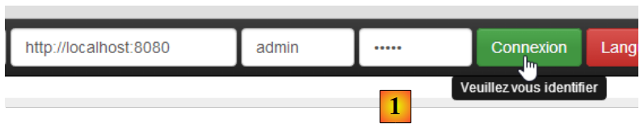 |
- unter [1] melden Sie sich an;
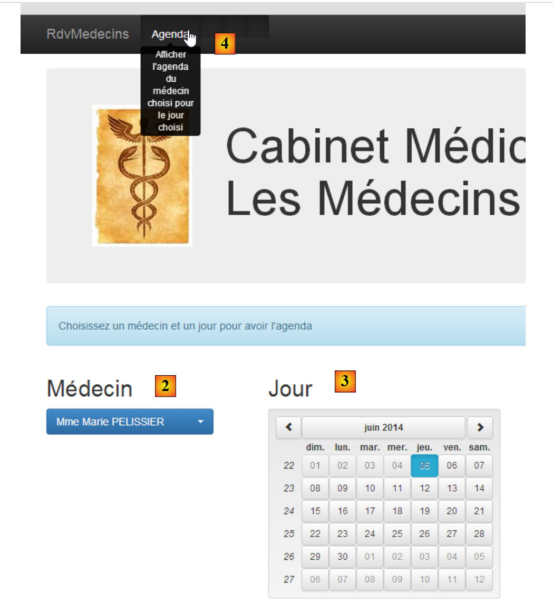 |
- Sobald Sie angemeldet sind, können Sie den Arzt auswählen, bei dem Sie einen Termin vereinbaren möchten [2], sowie das Datum des Termins [3];
- Unter [4] fordern Sie die Anzeige des Terminkalenders des ausgewählten Arztes für den gewählten Tag an;
 |
- Sobald der Terminkalender des Arztes angezeigt wird, können Sie einen Termin buchen [5];
 |
- Wählen Sie unter [6] den Patienten für den Termin aus und bestätigen Sie Ihre Auswahl unter [7];
 |
Sobald der Termin bestätigt ist, gelangen Sie automatisch zurück zum Terminkalender, wo der neue Termin nun aufgeführt ist. Dieser Termin kann später gelöscht werden [7].
Die wichtigsten Funktionen wurden beschrieben. Sie sind einfach. Die nicht beschriebenen Funktionen sind Navigationsfunktionen zum Zurückkehren zu einer vorherigen Ansicht. Schließen wir mit den Spracheinstellungen ab:
 |
- In [1] wechseln Sie von Französisch zu Englisch;

- in [2] wechselt die Ansicht zu Englisch, einschließlich des Kalenders;
3.4. Einrichtung des Angular-Projekts
Wir werden unseren Angular-Client Schritt für Schritt erstellen. Wir verwenden die WebStorm-IDE.
Erstellen wir einen leeren Ordner [rdvmedecins-angular-v1] und öffnen wir ihn dann mit WebStorm:
 |
- Öffnen Sie in [1] einen Ordner;
- In [2] wählen wir den erstellten Ordner aus;
- in [3] erhalten wir ein leeres WebStorm-Projekt;
 |
- in [4] konfigurieren wir das Projekt über die Option [Datei / Einstellungen];
- in [5] und [6] konfigurieren wir die Eigenschaft [Rechtschreibung], die die Rechtschreibprüfung verwaltet. Standardmäßig ist diese aktiviert. Da die heruntergeladene Software auf Englisch ist, werden unsere französischen Kommentare in den Programmen als mögliche Rechtschreibfehler unterstrichen. Wir deaktivieren daher diese Rechtschreibprüfung [7];
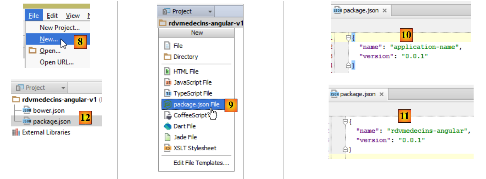 |
- Erstellen Sie in [8] eine neue Datei;
- In [9] entscheiden wir uns dafür, die Datei [package.json] zu erstellen, die die Anwendung mithilfe der JSON-Syntax beschreibt;
- In [10] wird die generierte Datei wie in [11] gezeigt geändert;
- Speichern Sie diese Datei in [12] sowohl unter [package.json] als auch unter [bower.json];
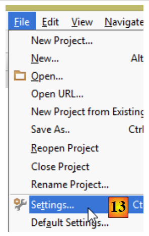 |
- In [13] konfigurieren Sie das Projekt neu;
 |
- Konfigurieren Sie in [14] die Eigenschaft [Javascript / Bower], damit wir die benötigten JavaScript-Bibliotheken angeben können;
- Geben Sie in [15] die soeben erstellte Datei [bower.json] an;
 |
- Fügen Sie in [16] eine JavaScript-Bibliothek hinzu;
- In [17] werden alle herunterladbaren JavaScript-Bibliotheken angezeigt;
- In [18] können wir einen Begriff eingeben, um die Liste [17] zu filtern. Hier geben wir an, dass wir die [Angular JS]-Bibliothek möchten;
- in [19] werden die Details der Bibliothek angezeigt. Hier sehen wir, dass die Version 1.2.18 von Angular heruntergeladen wird;
- in [20] laden wir sie herunter;
 |
- in [21] sehen wir, dass der Download abgeschlossen ist;
- in [22] sehen wir die heruntergeladene Version. Es ist tatsächlich 1.2.19;
- in [23] sehen wir die aktuellste verfügbare Version;
 |
- in [24] laden wir nach dem gleichen Verfahren wie zuvor die folgenden Bibliotheken herunter:
um die Zeichenfolge „user:password“ in Base64 zu kodieren; | ||
um den Kalender zu internationalisieren | ||
um die internen URLs der Anwendung an den richtigen Controller und die richtige Ansicht weiterzuleiten; | ||
ermöglicht die Internationalisierung von Views. Es handelt sich um ein von Angular unabhängiges Projekt. Hier werden zwei Sprachen verwendet: Französisch und Englisch; | ||
bietet Bootstrap-kompatible visuelle Komponenten. Wir werden hier dessen Kalender verwenden; | ||
das Bootstrap-CSS-Framework. Wird zum Erstellen der Ansichten verwendet; | ||
bietet eine visuelle Komponente vom Typ „Tabelle“. Sie ist insofern „responsive“, als sie sich an die Bildschirmgröße anpassen kann; | ||
bietet eine „Dropdown-Liste“-Komponente; |
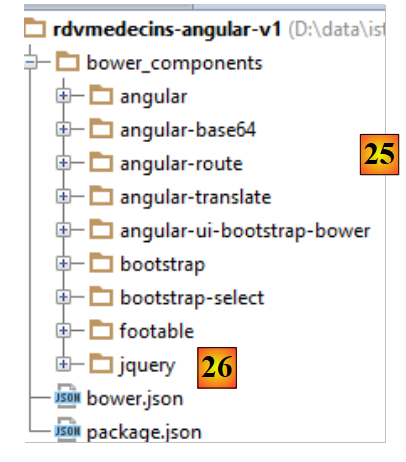 |
- In [25] wurden die heruntergeladenen Bibliotheken im Ordner [bower_components] installiert;
- in [26] sehen wir, dass die jQuery-Bibliothek heruntergeladen wurde. Das liegt daran, dass Bootstrap sie verwendet. Das System zur Installation von JavaScript-Abhängigkeiten in einem Projekt ist analog zu Maven in der Java-Welt: Wenn eine heruntergeladene Bibliothek eigene Abhängigkeiten hat, werden diese automatisch heruntergeladen;
Die Datei [bower.json] hat sich geändert:
Alle heruntergeladenen Abhängigkeiten wurden in der Datei aufgelistet.
3.5. Die Startseite des Angular-Clients
Wir erstellen eine erste Version der Startseite des Angular-Clients:
 |
- In [1] und [2] erstellen wir eine HTML-Datei mit dem Namen [app-01] [3] und [4];
Die Datei [app-01.html] dient vorerst als unsere Hauptseite. Wir werden den Import der von der Anwendung benötigten CSS- und JS-Dateien konfigurieren:
<!DOCTYPE html>
<html>
<head>
<title>RdvMedecins</title>
<!-- META -->
<meta http-equiv="Content-Type" content="text/html; charset=utf-8">
<meta name="viewport" content="width=device-width, initial-scale=1.0">
<meta name="description" content="Angular client for RdvMedecins">
<meta name="author" content="Serge Tahé">
<!-- on CSS -->
<link href="bower_components/bootstrap/dist/css/bootstrap.min.css" rel="stylesheet" />
<link href="bower_components/bootstrap/dist/css/bootstrap-theme.min.css" rel="stylesheet"/>
<link href="bower_components/bootstrap-select/bootstrap-select.min.css" rel="stylesheet"/>
<link href="bower_components/footable/css/footable.core.min.css" rel="stylesheet"/>
</head>
<body>
<div class="container">
<h1>Rdvmedecins - v1</h1>
</div>
<!-- Bootstrap core JavaScript ================================================== -->
<script type="text/javascript" src="bower_components/jquery/dist/jquery.min.js"></script>
<script type="text/javascript" src="bower_components/bootstrap/dist/js/bootstrap.min.js"></script>
<script type="text/javascript" src="bower_components/bootstrap-select/bootstrap-select.min.js"></script>
<script type="text/javascript" src="bower_components/footable/dist/footable.min.js"></script>
<!-- angular js -->
<script type="text/javascript" src="bower_components/angular/angular.min.js"></script>
<script type="text/javascript" src="bower_components/angular-ui-bootstrap-bower/ui-bootstrap-tpls.min.js"></script>
<script type="text/javascript" src="bower_components/angular-route/angular-route.min.js"></script>
<script type="text/javascript" src="bower_components/angular-translate/angular-translate.min.js"></script>
<script type="text/javascript" src="bower_components/angular-base64/angular-base64.min.js"></script>
</body>
</html>
- Zeilen 11–12: die CSS-Dateien für Bootstrap;
- Zeile 13: die CSS-Datei für die Komponente [boostrap-select];
- Zeile 14: die CSS-Datei für die [footable]-Komponente;
- Zeilen 21–24: die JS-Dateien für die Bootstrap-Komponenten;
- Zeile 21: Bootstrap-Komponenten basieren auf jQuery;
- Zeile 22: die Bootstrap-JS-Datei;
- Zeile 23: die JS-Datei für die [boostrap-select]-Komponente;
- Zeile 24: die JS-Datei für die [footable]-Komponente;
- Zeilen 26–30: die JS-Dateien für Angular und zugehörige Projekte;
- Zeile 26: die Angular-JS-Datei. Sie muss nach jQuery geladen werden, wenn diese Bibliothek verwendet wird;
- Zeile 27: die JS-Datei für das [angular-ui-bootstrap]-Projekt;
- Zeile 28: die JS-Datei für den [angular-route]-Router;
- Zeile 29: die JS-Datei für das Internationalisierungsmodul der Angular-Anwendung;
- Zeile 30: die JS-Datei für das [angular-base64]-Modul;
Die Gültigkeit der Datei [app-01.html] kann überprüft werden:
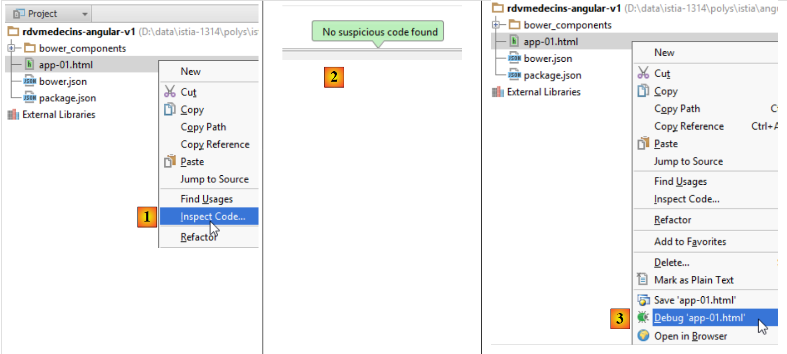 |
- In [1] fordern wir eine Codeüberprüfung an;
- in [2] das Ergebnis, wenn alles korrekt ist;
Diese systematische Codeüberprüfung vor der Ausführung wird empfohlen. Diese Überprüfung ermöglicht es, Fehler in den Verweisen auf CSS- und JS-Dateien zu erkennen. Wenn ein Pfad falsch ist, wird er vom Code-Inspektor markiert.
- In [3] kann die Seite über einen Debugger in einen Browser geladen werden. Das folgende Ergebnis wird im Browser angezeigt:
 |
- In [4] wurde die Seite [app-01.html] von einem internen WebStorm-Server bereitgestellt, der hier auf Port 63342 läuft;
- In [5] die Debugger-Konsole. Wären Fehler aufgetreten, wären sie hier angezeigt worden. Hier wird auch die Bildschirmausgabe angezeigt, die durch die JavaScript-Anweisung [console.log(expression)] erzeugt wird. Wir werden diese Funktion ausgiebig nutzen;
Im Debug-Modus können Sie die Seite in WebStorm ändern und die Ergebnisse dieser Änderungen im Browser sehen, ohne die Seite neu laden zu müssen. Wenn wir also die folgende Zeile 3 hinzufügen:
<div class="container">
<h1>Rdvmedecins - v1</h1>
<h2>Version 1</h2>
</div>
und wenn wir zum Browser zurückkehren, sehen wir, dass sich die Seite geändert hat:
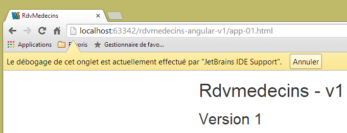 |
3.6. Einführung in Bootstrap
Wir werden nun einige der in der Anwendung verwendeten Bootstrap-Funktionen veranschaulichen. Ich verfüge nur über begrenzte Kenntnisse dieses Frameworks, die ich mir durch das Kopieren und Einfügen von Code aus dem Internet angeeignet habe. Ich werde die Rolle der CSS-Klassen erläutern, die ich meiner Meinung nach verstehe. Zu den anderen werde ich mich nicht äußern.
3.6.1. Beispiel 1
In Angular sind Vorgänge, die Informationen aus externen Quellen abrufen, asynchron. Das bedeutet, dass der Vorgang initiiert wird und die Steuerung sofort an die Ansicht zurückgegeben wird, sodass der Benutzer weiterhin mit ihr interagieren kann. Die Anwendung wird über ein Ereignis darüber informiert, dass der Vorgang abgeschlossen ist. Dieses Ereignis wird von einer JavaScript-Funktion verarbeitet, die dann die aktuelle Ansicht aktualisieren oder ändern kann. Wenn der Vorgang voraussichtlich lange dauern wird, ist es hilfreich, dem Benutzer die Möglichkeit zu geben, ihn abzubrechen. Wir werden diese Option systematisch anbieten. Dazu verwenden wir ein Bootstrap-Banner:

Um dieses Ergebnis zu erzielen, duplizieren wir [app-01.html] in [app-02.html] und ändern die folgenden Zeilen:
<div class="container">
<h1>Rdvmedecins - v1</h1>
<div class="alert alert-warning">
<h1>Opération en cours. Veuillez patienter...
<button class="btn btn-primary pull-right">Annuler</button>
<img src="assets/images/waiting.gif" alt=""/>
</h1>
</div>
</div>
- Zeile 1: Die CSS-Klasse [container] definiert einen Anzeigebereich innerhalb des Browsers;
- Zeile 3: Die CSS-Klasse [alert] zeigt einen farbigen Bereich an. Die Klasse [alert-warning] verwendet eine vordefinierte Farbe;
- Zeile 5: Die Klasse [btn] gestaltet eine Schaltfläche. Die Klasse [btn-primary] weist ihr eine bestimmte Farbe zu. Die Klasse [pull-right] positioniert sie rechts neben dem Warnbanner;
- Zeile 6: ein animiertes Lade-Bild;
3.6.2. Beispiel 2
Die verschiedenen Ansichten der Anwendung haben einen gemeinsamen Titel:

Um dies zu erreichen, duplizieren wir [app-01.html] in [app-03.html] und ändern die folgenden Zeilen:
<div class="container">
<h1>Rdvmedecins - v1</h1>
<!-- Bootstrap Jumbotron -->
<div class="jumbotron">
<div class="row">
<div class="col-md-2">
<img src="assets/images/caduceus.jpg" alt="RvMedecins"/>
</div>
<div class="col-md-10">
<h1>Les Médecins associés</h1>
</div>
</div>
</div>
</div>
- Der farbige Bereich wird mithilfe der Klasse [jumbotron] in Zeile 4 erstellt;
- Zeile 5: Die Klasse [row] definiert eine Zeile mit 12 Spalten;
- Zeile 6: Die Klasse [col-md-2] definiert einen zweispaltigen Bereich innerhalb der Zeile;
- Zeile 7: In diesen beiden Spalten wird ein Bild platziert;
- Zeilen 9–11: In den verbleibenden 10 Spalten wird Text platziert;
3.6.3. Beispiel 3
Die Ansichten verfügen über eine obere Steuerleiste. Diese enthält Steuerungsoptionen, Links oder Schaltflächen. Außerdem enthält sie Formularelemente. Zum Beispiel:
 |
Um dieses Ergebnis zu erzielen, duplizieren wir [app-01.html] als [app-04.html] und ändern die folgenden Zeilen:
<div class="container">
<h1>Rdvmedecins - v1</h1>
<div class="navbar navbar-inverse navbar-fixed-top" role="navigation">
<div class="container">
<div class="navbar-header">
<button type="button" class="navbar-toggle" data-toggle="collapse" data-target=".navbar-collapse">
<span class="sr-only">Toggle navigation</span>
<span class="icon-bar"></span>
<span class="icon-bar"></span>
<span class="icon-bar"></span>
</button>
<a class="navbar-brand" href="#">RdvMedecins</a>
</div>
<div class="navbar-collapse collapse">
<form class="navbar-form navbar-right">
<!-- debug mode -->
<label style="width: 100px">
<input type="checkbox">
<span style="color: white">Debug</span>
</label>
<!-- identification form -->
<div class="form-group">
<input type="text" class="form-control" placeholder="Temps d'attente"
style="width: 150px"/>
<input type="text" class="form-control" placeholder="URL du service web"
style="width: 200px"/>
<input type="text" class="form-control" placeholder="Login"
style="width: 100px"/>
<input type="password" class="form-control" placeholder="Mot de passe"
style="width: 100px"/>
</div>
<button class="btn btn-success">
Connexion
</button>
</form>
</div>
<button class="btn btn-success">
Connexion
</button>
</form>
</div>
</div>
</div>
</div>
- Zeile 4: Die Klasse [navbar] gestaltet die Navigationsleiste. Die Klasse [navbar-inverse] verleiht ihr einen schwarzen Hintergrund. Die Klasse [navbar-fixed-top] sorgt dafür, dass die Navigationsleiste beim Scrollen der vom Browser angezeigten Seite am oberen Bildschirmrand verbleibt;
- Zeilen 6–14: definieren den Bereich [1]. Dabei handelt es sich typischerweise um eine Reihe von Klassen, die ich nicht verstehe. Ich verwende die Komponente so, wie sie ist;
- Zeile 15: definiert einen „responsiven“ Bereich der Navigationsleiste. Auf einem Smartphone wird dieser Bereich zu einem Menübereich zusammengeklappt;
- Zeile 16: Die Klasse [navbar-form] umschließt ein Formular in der Befehlsleiste. Die Klasse [navbar-right] positioniert es rechts neben dem Formular;
- Zeilen 23–32: die vier Eingabefelder des Formulars aus Zeile 17 [3]. Sie befinden sich innerhalb einer [form-group]-Klasse, die die Elemente eines Formulars umschließt, und jedes von ihnen hat die [form-control]-Klasse;
- Zeile 33: die bereits bekannte Klasse [btn], ergänzt durch die Klasse [btn-success], die ihr die grüne Farbe verleiht;
3.6.4. Beispiel 4
Über die Steuerleiste können Sie die Sprache mithilfe einer Dropdown-Liste ändern:

Dazu duplizieren wir [app-01.html] in [app-05.html] und fügen die folgenden Zeilen zur Steuerleiste hinzu:
<button class="btn btn-success">
Connexion
</button>
<!-- languages -->
<div class="btn-group">
<button type="button" class="btn btn-danger">
Langues
</button>
<button type="button" class="btn btn-danger dropdown-toggle" data-toggle="dropdown">
<span class="caret"></span>
<span class="sr-only">Toggle Dropdown</span>
</button>
<ul class="dropdown-menu" role="menu">
<li>
<a href="">Français</a>
</li>
<li>
<a href="">English</a>
</li>
</ul>
</div>
</form>
Die hinzugefügten Zeilen sind die Zeilen 4–21.
- Zeile 5: Die Klasse [btn-group] umschließt eine Gruppe von Schaltflächen. Es gibt zwei davon in den Zeilen 6 und 9;
- Zeilen 6–8: Die erste Schaltfläche definiert die Beschriftung für die Dropdown-Liste. Die Klasse [btn-danger] verleiht ihr eine rote Farbe;
- Zeilen 9–12: Die zweite Schaltfläche ist die Schaltfläche für die Dropdown-Liste. Sie befindet sich neben der ersten und vermittelt so den Eindruck einer einzigen Komponente;
- Zeile 10: Zeigt den Abwärtspfeil an, der darauf hinweist, dass es sich bei der Schaltfläche um eine Dropdown-Liste handelt;
- Zeile 11: für Screenreader;
- Zeilen 13–20: Die Einträge in der Dropdown-Liste sind die Elemente einer ungeordneten Liste;
3.6.5. Beispiel 5
Um ein Formular abzuschicken oder zu navigieren, stehen dem Benutzer Optionen oder Schaltflächen in der Steuerleiste zur Verfügung, wie unten dargestellt:
 |
In [1] wurden Menüoptionen hinzugefügt. Dazu duplizieren wir [app-01.html] in [app-06.html] und fügen die folgenden Zeilen hinzu:
<div class="navbar navbar-inverse navbar-fixed-top" role="navigation">
<div class="container">
<div class="navbar-header">
...
</div>
<!-- menu options -->
<div class="collapse navbar-collapse">
<ul class="nav navbar-nav">
<li class="active">
<a href="">
<span>Home</span>
</a>
</li>
<li class="active">
<a href="">
<span>Agenda</span>
</a>
</li>
<li class="active">
<a href="">
<span>Valider</span>
</a>
</li>
<li class="active">
<a href="">
<span>Annuler</span>
</a>
</li>
</ul>
<!-- right buttons -->
<form class="navbar-form navbar-right" role="form">
...
</form>
</div>
</div>
</div>
</div>
- Die Menüoptionen werden durch die Zeilen 8–29 generiert. Auch diese sind Elemente einer <ul>-Liste. Die Klasse [active] unterstreicht den Text und zeigt damit an, dass die Option anklickbar ist.
3.6.6. Beispiel 6
Wir werden Ärzte und Kunden in Dropdown-Listen anzeigen, wie unten dargestellt:
 |
Die verwendete Dropdown-Liste ist keine native Bootstrap-Komponente. Es handelt sich um die [bootstrap-select]-Komponente (http://silviomoreto.github.io/bootstrap-select/). Um dieses Ergebnis zu erzielen, duplizieren wir [app-01.html] als [app-07.html] und fügen die folgenden Zeilen hinzu:
<!DOCTYPE html>
<html>
<head>
...
<link href="bower_components/bootstrap-select/bootstrap-select.min.css" rel="stylesheet"/>
</head>
<body>
<div class="container">
<h1>Rdvmedecins - v1</h1>
<h2><label for="medecins">Médecins</label></h2>
<select id="medecins" data-style="btn btn-primary" class="selectpicker">
<option value="1">Mme Marie PELISSIER</option>
<option value="1">Mr Jacques BROMARD</option>
<option value="1">Mr Philippe JANDOT</option>
<option value="1">Mme Justine JACQUEMOT</option>
</select>
</div>
<!-- Bootstrap core JavaScript ================================================== -->
...
<script type="text/javascript" src="bower_components/bootstrap-select/bootstrap-select.min.js"></script>
<!-- local script -->
<script>
$('.selectpicker').selectpicker();
</script>
</body>
</html>
- Zeile 5: Sie müssen das Stylesheet [bootstrap-select] importieren;
- Zeile 13: Das Attribut [data-style] wird von [bootstrap-select] verwendet. Es dient zur Gestaltung der Dropdown-Liste. Hier geben wir ihm das Aussehen einer blauen Schaltfläche [btn-primary];
- Zeile 13: Das Attribut [class] wird in Zeile 23 verwendet. Es kann beliebig sein;
- Zeilen 14–17: die Elemente der Dropdown-Liste. Dies sind Standard-HTML-Tags;
- Zeile 22: Das JS-Skript [bootstrap-select] muss importiert werden;
- Zeilen 24–26: Ein JavaScript-Skript, das ausgeführt wird, wenn die Seite vollständig geladen ist;
- Zeile 25: eine jQuery-Anweisung. Wir wenden die [selectpicker]-Methode (selectpicker()) auf alle Elemente mit der Klasse [selectpicker] ($('.selectpicker')) an. Es gibt nur eines: das <select>-Tag in Zeile 13. Die [selectpicker]-Methode stammt aus der in Zeile 22 referenzierten JS-Datei;
3.6.7. Beispiel 7
Um den Terminplan eines Arztes anzuzeigen, verwenden wir eine responsive Tabelle aus der [footable]-JS-Bibliothek:
 |
- in [1]: die Tabelle mit normaler Darstellung;
- in [2]: die Tabelle, wenn die Größe des Browserfensters geändert wird. Die Spalte [Action] springt automatisch in die nächste Zeile. Dies wird als „responsive“ oder einfach als adaptive Komponente bezeichnet.
Wir duplizieren [app-01.html] als [app-08.html] und fügen die folgenden Zeilen hinzu:
...
<link href="bower_components/footable/css/footable.core.min.css" rel="stylesheet"/>
<link href="assets/css/rdvmedecins.css" rel="stylesheet"/>
...
<div class="container">
<h1>Rdvmedecins - v1</h1>
<div class="row alert alert-warning">
<div class="col-md-6">
<table id="creneaux" class="table">
<thead>
<tr>
<th data-toggle="true">
<span>Créneau horaire</span>
</th>
<th>
<span>Client</span>
</th>
<th data-hide="phone">
<span>Action</span>
</th>
</thead>
<tbody>
<tr>
<td>
<span class='status-metro status-active'>
9h00-9h20
</span>
</td>
<td>
<span></span>
</td>
<td>
<a href="" class="status-metro status-active">
Réserver
</a>
</td>
</tr>
<tr>
<td>
<span class='status-metro status-suspended'>
9h20-9h40
</span>
</td>
<td>
<span>Mme Paule MARTIN</span>
</td>
<td>
<a href="" class="status-metro status-suspended">
Supprimer
</a>
</td>
</tr>
</tbody>
</table>
</div>
</div>
</div>
...
<script src="bower_components/footable/dist/footable.min.js" type="text/javascript"></script>
- Die Zeilen 2 und 60 sind bereits in [app-01.html] vorhanden. Dies sind die CSS- und JS-Dateien, die von der [footable]-Bibliothek bereitgestellt werden;
- Zeile 3 verweist auf die folgende CSS-Datei:
@CHARSET "UTF-8";
#creneaux th {
text-align: center;
}
#creneaux td {
text-align: center;
font-weight: bold;
}
.status-metro {
display: inline-block;
padding: 2px 5px;
color:#fff;
}
.status-metro.status-active {
background: #43c83c;
}
.status-metro.status-suspended {
background: #fa3031;
}
Die [status-*]-Stile stammen aus einem Beispiel für die Verwendung der [footable]-Tabelle, das auf der Website der Bibliothek zu finden ist.
- Zeile 8: Platziert die Tabelle in einer Zeile [row] und einem farbigen Hinweisfeld [alert alert-warning];
- Zeile 9: Die Tabelle erstreckt sich über 6 Spalten [col-md-6];
- Zeile 10: Die HTML-Tabelle wird von Bootstrap formatiert [class='table'];
- Zeile 13: Das Attribut [data-toggle] gibt die Spalte an, die das Symbol [+/-] enthält, mit dem die Zeile ein- und ausgeblendet wird;
- Zeile 19: Das Attribut [data-hide='phone'] legt fest, dass die Spalte ausgeblendet werden soll, wenn der Bildschirm die Größe eines Smartphone-Bildschirms hat. Der Wert 'tablet' kann ebenfalls verwendet werden;
3.6.8. Beispiel 8
Um den Benutzer zu unterstützen, erstellen wir Tooltips für die Hauptkomponenten der Ansichten:
 |
Dazu duplizieren wir [app-01.html] als [app-09.html] und fügen die folgenden Zeilen hinzu:
<!DOCTYPE html>
<html ng-app="rdvmedecins">
<head>
...
</head>
<body>
<div class="container">
<h1>Rdvmedecins - v1</h1>
<div class="navbar navbar-inverse navbar-fixed-top" role="navigation">
<div class="container">
<div class="navbar-header">
<button type="button" class="navbar-toggle" data-toggle="collapse" data-target=".navbar-collapse">
<span class="sr-only">Toggle navigation</span>
<span class="icon-bar"></span>
<span class="icon-bar"></span>
<span class="icon-bar"></span>
</button>
<a class="navbar-brand" href="#">RdvMedecins</a>
</div>
<!-- menu options -->
<div class="collapse navbar-collapse">
<ul class="nav navbar-nav">
<li class="active">
<a href="">
<span tooltip="Retourne à la page d'accueil" tooltip-placement="bottom">Home</span>
</a>
</li>
<li class="active">
<a href="">
<span tooltip="Affiche l'agenda" tooltip-placement="top">Agenda</span>
</a>
</li>
<li class="active">
<a href="">
<span tooltip="Valide le rendez-vous" tooltip-placement="right">Valider</span>
</a>
</li>
<li class="active">
<a href="">
<span tooltip="Annule l'opération en cours" tooltip-placement="left">Annuler</span>
</a>
</li>
</ul>
</div>
</div>
</div>
</div>
<!-- Bootstrap core JavaScript ================================================== -->
<...
<script type="text/javascript" src="bower_components/angular-ui-bootstrap-bower/ui-bootstrap-tpls.min.js"></script>
<!-- local script -->
<script>
// --------------------- module Angular
angular.module("rdvmedecins", ['ui.bootstrap']);
</script>
</body>
</html>
Die Tooltips werden von der Bibliothek [angular-ui-bootstrap] bereitgestellt, die ihrerseits auf der Bibliothek [angular] basiert. In Zeile 50 wird die Bibliothek [angular-ui-bootstrap] importiert. Um die Komponenten der Bibliothek [angular-ui-bootstrap] zu implementieren, müssen wir ein Angular-Modul erstellen. Dies geschieht in den Zeilen 52–55. Diese Zeilen definieren ein Angular-Modul namens [rdvmedecins] (erster Parameter). Ein Angular-Modul kann andere Angular-Module verwenden. Diese werden als Modulabhängigkeiten bezeichnet. Sie werden in einem Array als zweiter Parameter der Funktion [angular.module] angegeben. Hier wird das Modul namens [ui.bootstrap] von der Bibliothek [angular-ui-bootstrap] bereitgestellt. Dieses Modul stellt uns die Tooltips zur Verfügung.
Zeile 54 definiert ein Angular-Modul. Standardmäßig hat dies keine Auswirkungen auf die Seite. Wir legen fest, dass die Seite von Angular verwaltet werden soll, indem wir sie an ein Angular-Modul anhängen. Dies geschieht in Zeile 2. Das Attribut [ng-app='rdvmedecins'] hängt die Seite an das in Zeile 54 erstellte Modul an. Die Seite wird dann von Angular analysiert. Die [tooltip]-Attribute werden vom Modul [ui.bootstrap] erkannt und verarbeitet.
Die Syntax für den Tooltip lautet wie folgt:
<span tooltip="Retourne à la page d'accueil" tooltip-placement="bottom">Home</span>
Oben fügen wir dem Text [Home] einen Tooltip hinzu:
- [tooltip]: definiert den Text des Tooltips;
- [tooltip-placement]: definiert dessen Position (unten, oben, links, rechts);
Angular JS ermöglicht es Ihnen, neue Tags oder Attribute zu den bereits in HTML vorhandenen hinzuzufügen. Diese Erweiterung von HTML wird mithilfe von Angular-Direktiven erreicht. Hier werden die Attribute [tooltip] und [tooltip-placement] durch [angular-ui-bootstrap] erstellt.
3.6.9. Beispiel 9
Um dem Benutzer die Auswahl des Datums für einen Termin zu erleichtern, stellen wir einen Kalender bereit:

Wie bei den Tooltips wird dieser Kalender von der Bibliothek [angular-ui-bootstrap] bereitgestellt. Um dieses Ergebnis zu erzielen, duplizieren wir [app-01.html] in [app-10.html] und fügen die folgenden Zeilen hinzu:
<!DOCTYPE html>
<html ng-app="rdvmedecins">
<head>
...
<body>
<div class="container">
<h1>Rdvmedecins - v1</h1>
<div>
<pre>Date <em>{{jour | date:'fullDate'}}</em></pre>
<div class="row">
<div class="col-md-2">
<h4>Calendrier</h4>
<div style="display:inline-block; min-height:290px;">
<datepicker ng-model="jour" show-weeks="true" class="well"></datepicker>
</div>
</div>
</div>
</div>
</div>
</div>
...
<!-- local script -->
<script>
// --------------------- module Angular
angular.module("rdvmedecins", ['ui.bootstrap'])
</script>
</body>
</html>
Wie zuvor ist die Seite mit einem Angular-Modul verknüpft (Zeilen 2 und 28). Der Kalender wird durch das <datepicker>-Tag in Zeile 16 definiert, das von der Bibliothek [angular-ui-bootstrap] bereitgestellt wird:
- [show-weeks='true']: um die Wochennummern anzuzeigen;
- [class='well']: um den Kalender mit einem grauen Rahmen mit abgerundeten Ecken zu umgeben;
- [ng-model='day']: Die [ng-*]-Attribute sind Angular-Attribute. Das [ng-model]-Attribut bezeichnet Daten, die im View-Modell abgelegt werden. Wenn der Benutzer auf ein Datum klickt, wird dieses in die Variable [day] des Modells gesetzt. Diese Variable wird in Zeile 10 verwendet. Die Syntax {{expression}} wertet einen Ausdruck aus, der aus Elementen des Modells besteht. Hier zeigt {{day}} den Wert der Variablen [day] aus dem Modell an. Ein wesentliches Merkmal von Angular ist, dass die Ansicht automatisch aktualisiert wird, sobald sich die Variable [day] ändert. Wenn der Benutzer also das Datum ändert, werden diese Änderungen sofort in Zeile 10 angezeigt. Im Allgemeinen funktioniert der Prozess wie folgt:
- Eine Ansicht V ist mit einem Modell M verknüpft;
- Angular beobachtet das Modell M und aktualisiert die Ansicht V automatisch, sobald sich das Modell M ändert;
Die Syntax {{day|date}} wird als Filter bezeichnet. Es wird nicht der Wert von [day] angezeigt, sondern der Wert von [day], gefiltert durch einen Filter namens [date]. Dieser Filter ist in Angular vordefiniert. Er dient zur Formatierung von Datumsangaben. Er akzeptiert Parameter, die das gewünschte Format angeben. Der Ausdruck {{day | date:'fullDate'}} gibt also an, dass wir das vollständige Datumsformat wünschen, hier [Freitag, 20. Juni 2014], da der Kalender standardmäßig auf Englisch eingestellt ist. Wir werden in Kürze auf die Internationalisierung eingehen.
3.6.10. Fazit
Wir haben die Elemente des Bootstrap-CSS-Frameworks vorgestellt, die wir verwenden werden. Dabei handelte es sich um passive Komponenten: Ihre Ereignisse wurden nicht verarbeitet. Ein Klick auf Schaltflächen oder Links hatte also keine Wirkung. Diese Ereignisse werden in JavaScript verarbeitet. Es ist möglich, diese Sprache ohne Frameworks zu verwenden, aber wie auf der Serverseite sind auch auf der Clientseite bestimmte Frameworks unverzichtbar. Dies gilt für das AngularJS-Framework, das einen neuen Ansatz für die Entwicklung von JavaScript-Anwendungen bietet, die in einem Browser ausgeführt werden. Wir werden es nun vorstellen.
3.7. Einführung in AngularJS
Wir werden nun einige der Funktionen des in der Anwendung verwendeten AngularJS-Frameworks veranschaulichen. Auf einige davon sind wir bereits gestoßen:
- Eine HTML-Seite basiert auf AngularJS, wenn ein Modul daran angehängt ist:
<html ng-app="rdvmedecins">
- Mit Angular können Sie mithilfe von Direktiven neue HTML-Tags und -Attribute erstellen:
- Mit Angular können Sie Filter erstellen:
- Eine Ansicht V zeigt ein Modell M an. Angular überwacht das Modell M und aktualisiert die Ansicht V automatisch, sobald sich das Modell M ändert. Der Wert einer Variablen im Modell M wird in der Ansicht V wie folgt angezeigt:
Wir beginnen damit, uns eingehender mit der Implementierung des Model-View-Controller-Entwurfsmusters in Angular zu befassen. Betrachten wir die Beziehungen zwischen ihnen aus architektonischer Perspektive:
 |
- Die Ansicht V1 zeigt das vom Controller C1 erstellte Modell M1 an. Der Controller C1 enthält nicht nur das Modell M1, sondern auch die Ereignisbehandler für die Ansicht V1. Wir befinden uns in den Zyklen 5, 8, 9:
- [5]: In der Ansicht V1 tritt ein Ereignis ein. Es wird vom Controller C1 verarbeitet;
- der Controller führt seine Aufgabe aus [6-7] und erstellt anschließend das Modell M1 [8];
- [9]: Die Ansicht V1 zeigt das neue Modell M1 an. Wie bereits erwähnt, erfolgt dieser letzte Schritt automatisch. Anders als in anderen MVC-Frameworks gibt es keinen expliziten Push (C1 schiebt das Modell M1 in V1) oder expliziten Pull (die Ansicht V1 holt das Modell M1 von C1). Es gibt einen impliziten Push, den der Entwickler nicht sieht;
- dann wird der Zyklus 5, 8, 9 fortgesetzt;
3.7.1. Beispiel 1: Das MVC-Modell von Angular
Schauen wir uns noch einmal das Kalenderbeispiel an. Wir haben die Direktive gesehen, die es generiert:
<datepicker ng-model="jour" show-weeks="true" class="well"></datepicker>
Diese Direktive unterstützt neben den oben gezeigten Attributen noch weitere, darunter das Attribut [min-date], das das früheste Datum festlegt, das im Kalender ausgewählt werden kann. Das wird uns nützlich sein. Wenn der Benutzer ein Termin-Datum auswählt, muss dieses gleich oder später als das aktuelle Datum sein. Wir schreiben daher:
<datepicker ng-model="jour" ... min-date="dateMin"></datepicker>
wobei [dateMin] eine Variable im Seitenmodell ist, deren Wert dem heutigen Datum entspricht. Dies führt zu folgender Seite:
 |
- in [1] ist es der 19. Juni 2014. Der Cursor zeigt an, dass der 19. Juni ausgewählt werden kann;
- in [2] zeigt der Cursor an, dass der 18. Juni nicht ausgewählt werden kann;
Wir duplizieren [app-10.html] als [app-11.html] und nehmen folgende Änderungen vor:
<!DOCTYPE html>
<html ng-app="rdvmedecins">
<head>
...
</head>
<body ng-controller="rdvMedecinsCtrl">
<div class="container">
<h1>Rdvmedecins - v1</h1>
<div>
<pre>Date <em>{{jour | date:'fullDate' }}</em></pre>
<div class="row">
<div class="col-md-2">
<h4>Calendrier</h4>
<div style="display:inline-block; min-height:290px;">
<datepicker ng-model="jour" show-weeks="true" class="well" min-date="minDate"></datepicker>
</div>
</div>
</div>
</div>
</div>
<!-- Bootstrap core JavaScript ================================================== -->
...
<!-- local script -->
<script>
// --------------------- module Angular
angular.module("rdvmedecins", ['ui.bootstrap']);
// contrôleur
angular.module("rdvmedecins")
.controller('rdvMedecinsCtrl', ['$scope',
function ($scope) {
// date minimale
$scope.minDate = new Date();
}]);
</script>
</body>
</html>
Betrachten wir zunächst das lokale Skript in den Zeilen 26–37:
- Zeile 28: Erstellung des Moduls [rdvmedecins] mit seiner Abhängigkeit vom Modul [ui.bootstrap], das den Kalender bereitstellt;
- Zeilen 30–35: Erstellung eines Controllers. Dieser wird das Modell unserer Seite enthalten. Hier wird es keinen Event-Handler geben;
- Zeilen 30–31: Der Controller [rdvMedecinsCtrl] gehört zum Modul [rdvmedecins]. Sie können einem Modul beliebig viele Controller hinzufügen. In unserer Anwendung werden wir Folgendes haben:
- ein Modul zur Anwendungsverwaltung;
- einen Controller pro Ansicht;
- Der zweite Parameter der Funktion [controller] ist ein Array der Form ['O1', 'O2', ..., 'On', function(O1, O2, ..., On)]. Der letzte Parameter ist die Funktion, die den Controller implementiert. Ihre Parameter sind Objekte, die AngularJS der Funktion bereitstellt.
Kehren wir zur Architektur einer Angular-Anwendung zurück:
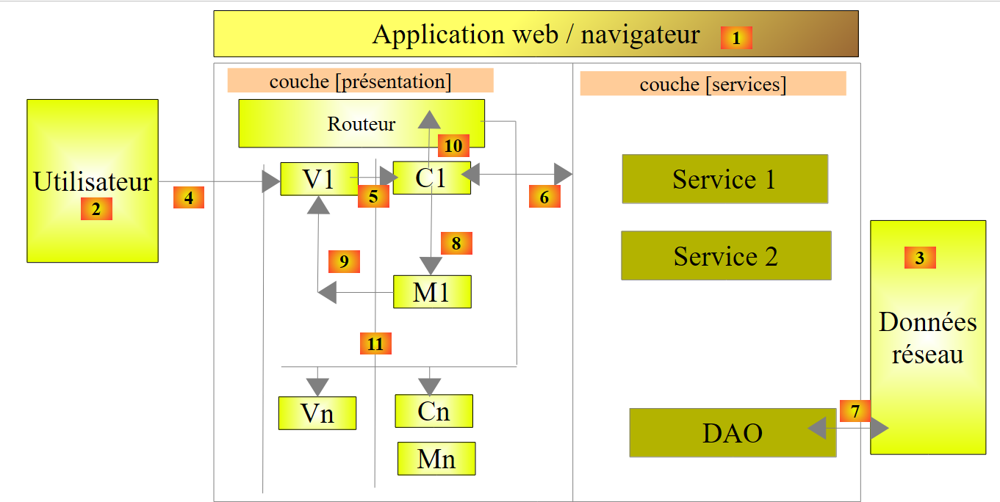 |
Oben enthält der C1-Controller alle Ereignisbehandler für die V1-Ansicht sowie deren M1-Modell. Die Ereignisbehandler benötigen möglicherweise einen oder mehrere Dienste [6], um ihre Aufgaben auszuführen. Wir übergeben all diese als Parameter an die Konstruktorfunktion des Controllers:
Die Si-Dienste sind Singletons. Angular erstellt von jedem eine einzelne Instanz. Sie werden durch einen Si-Namen identifiziert. Warum erscheinen sie in der obigen Tabelle zweimal? In der Produktion werden die JS-Skripte minimiert. Während dieses Minimierungsprozesses sieht die obige Tabelle wie folgt aus:
Die Parameter verlieren ihre Namen. Dabei handelt es sich jedoch um die Namen der Services. Es ist daher wichtig, diese Namen beizubehalten. Aus diesem Grund werden sie als Strings als Parameter vor der Funktion übergeben. Strings werden während des Minifizierungsprozesses nicht verändert. Wenn Angular den Controller unter Verwendung des neuen Arrays erstellt, ersetzt es a1 durch S1, a2 durch S2 und so weiter. Die Reihenfolge der Parameter ist daher wichtig. Sie muss mit der Reihenfolge der Services übereinstimmen, die der Funktionsdefinition vorangehen.
Kehren wir zur Definition des Controllers [rdvMedecinsCtrl] zurück:
// controller
angular.module("rdvmedecins")
.controller('rdvMedecinsCtrl', ['$scope',
function ($scope) {
// minimum date
$scope.minDate = new Date();
}]);
- Zeilen 3–4: Das einzige Objekt, das in den Controller injiziert wird, ist das $scope-Objekt. Dies ist ein vordefiniertes Objekt, das das M-Modell der mit dem Controller verbundenen Ansichten darstellt. Um das Modell einer Ansicht zu erweitern, fügen Sie einfach Felder zum $scope-Objekt hinzu;
- was in Zeile 6 geschieht. Wir erstellen das Feld [minDate] mit dem aktuellen Datum als Wert;
Die V-Ansicht verwendet dieses M-Modell wie folgt:
<body ng-controller="rdvMedecinsCtrl">
<div class="container">
...
<div style="display:inline-block; min-height:290px;">
<datepicker ng-model="jour" show-weeks="true" class="well" min-date="minDate"></datepicker>
</div>
...
</div>
...
- Zeile 1: Der Hauptteil der Seite ist über das Attribut [ng-controller] mit dem Controller [rdvMedecinsCtrl] verknüpft. Das bedeutet, dass alles innerhalb des Tags <body> den Controller [rdvMedecinsCtrl] verwendet, um seine Ereignisse zu verwalten und sein M-Modell abzurufen. Eine HTML-Seite kann von mehreren Controllern abhängen, unabhängig davon, ob diese ineinander verschachtelt sind oder nicht:
Oben:
- Der Inhalt von [div1] (Zeilen 1–10) zeigt die von Controller c1 verwaltete Vorlage M1 an. Tags in diesem Bereich können auf Ereignisbehandler von Controller c1 verweisen;
- Der Inhalt von [div11] (Zeilen 3–4) zeigt sowohl das von Controller c11 verwaltete Modell M11 als auch das Modell M1 an. Es liegt eine Modellvererbung vor. Die Tags in diesem Bereich können sowohl auf Ereignisbehandler des Controllers c11 als auch auf Ereignisbehandler des Controllers c1 verweisen. Sie können weder auf das M12-Modell des Controllers c12 noch auf dessen Ereignisbehandler verweisen. Der Controller c12 ist zwischen den Zeilen 3–5 nicht definiert;
- Zeilen 7–9: Wir können eine ähnliche Argumentationskette wie zuvor anwenden;
Kehren wir zum Kalender-Code zurück:
<datepicker ng-model="jour" show-weeks="true" class="well" min-date="minDate"></datepicker>
Das Attribut [min-date] wird mit dem Wert [minDate] aus dem Modell initialisiert. Implizit ist dies [$scope.minDate]. Das Feld wird immer im $scope-Objekt nachgeschlagen.
3.7.2. Beispiel 2: Lokalisierung von Datumsangaben
Derzeit ist der Kalender für uns nicht sehr nützlich, da er auf Englisch ist. Es ist möglich, ihn zu lokalisieren:
 |
- In [1] haben wir einen Kalender auf Französisch;
- in [2] stellen wir ihn auf Englisch um;
- in [3] den englischen Kalender;
Wir duplizieren die Seite [app-11.html] in [app-12.html] und ändern letztere dann wie folgt:
<!DOCTYPE html>
<html ng-app="rdvmedecins">
<head>
...
</head>
<body ng-controller="rdvMedecinsCtrl">
<div class="container">
<h1>Rdvmedecins - v1</h1>
<pre>Date <em>{{jour | date:'fullDate' }}</em></pre>
<div class="row">
<!-- the calendar-->
<div class="col-md-4">
<h4>Calendrier</h4>
<div style="display:inline-block; min-height:290px;">
<datepicker ng-model="jour" show-weeks="true" class="well" min-date="minDate"></datepicker>
</div>
</div>
<!-- languages -->
<div class="col-md-2">
<div class="btn-group" dropdown is-open="isopen">
<button type="button" class="btn btn-primary dropdown-toggle" style="margin-top: 30px">
Langues<span class="caret"></span>
</button>
<ul class="dropdown-menu" role="menu">
<li><a href="" ng-click="setLang('fr')">Français</a></li>
<li><a href="" ng-click="setLang('en')">English</a></li>
</ul>
</div>
</div>
</div>
</div>
...
<script type="text/javascript" src="rdvmedecins.js"></script>
</body>
</html>
Es gibt nur wenige Änderungen. Die einzige Ergänzung sind die Zeilen 21–31, die die Sprachauswahlliste enthalten. Zum ersten Mal begegnen wir in den Zeilen 27–28 einem Ereignis-Handler:
- Zeile 27: Das Attribut [ng-click] ist ein Angular-Attribut, das den Ereignis-Handler angibt, der ausgeführt werden soll, wenn auf das Element mit diesem Attribut geklickt wird. Hier wird die Funktion [$scope.setLang('fr')] ausgeführt. Sie stellt den Kalender auf Französisch ein;
- Zeile 28: Hier stellen wir den Kalender auf Englisch ein;
- Zeile 35: Da das JavaScript des Controllers recht umfangreich ist, speichern wir es in einer Datei namens [rdvmedecins.js];
Angular verwaltet die Lokalisierung der Ansicht mit einem Modul namens [ngLocale]. Die Definition unseres Moduls [rdvmedecins] lautet daher wie folgt:
// --------------------- Angular module
angular.module("rdvmedecins", ['ui.bootstrap', 'ngLocale']);
Zeile 2: Vergessen Sie die Abhängigkeiten nicht, da die Fehlermeldungen von Angular manchmal vage sein können. Das Weglassen einer Abhängigkeit ist besonders schwer zu erkennen. Hier haben wir eine neue Abhängigkeit vom Modul [ngLocale].
Standardmäßig übernimmt Angular nur die Lokalisierung von Datumsangaben, Zahlen usw., für die es lokale Varianten gibt. Die Internationalisierung von Text wird nicht unterstützt. Hierfür verwenden wir die Bibliothek [angular-translate]. Die Lokalisierung wird von der Bibliothek [angular-i18n] übernommen. Diese Bibliothek enthält so viele Dateien, wie es Varianten für Datumsangaben, Zahlen usw. gibt.
 |
Für den französischen Kalender verwenden wir die Datei [angular-locale_fr-fr.js] und für den englischen Kalender die Datei [angular-locale_en-us.js]. Schauen wir uns zum Beispiel einmal an, was in der Datei [angular-locale_fr-fr.js] steht:
'use strict';
angular.module("ngLocale", [], ["$provide", function($provide) {
var PLURAL_CATEGORY = {ZERO: "zero", ONE: "one", TWO: "two", FEW: "few", MANY: "many", OTHER: "other"};
$provide.value("$locale", {
"DATETIME_FORMATS": {
"AMPMS": [
"AM",
"PM"
],
"DAY": [
"dimanche",
"lundi",
"mardi",
"mercredi",
"jeudi",
"vendredi",
"samedi"
],
"MONTH": [
"janvier",
"f\u00e9vrier",
"mars",
"avril",
"mai",
"juin",
"juillet",
"ao\u00fbt",
"septembre",
"octobre",
"novembre",
"d\u00e9cembre"
],
"SHORTDAY": [
"dim.",
"lun.",
"mar.",
"mer.",
"jeu.",
"ven.",
"sam."
],
"SHORTMONTH": [
"janv.",
"f\u00e9vr.",
"mars",
"avr.",
"mai",
"juin",
"juil.",
"ao\u00fbt",
"sept.",
"oct.",
"nov.",
"d\u00e9c."
],
"fullDate": "EEEE d MMMM y",
"longDate": "d MMMM y",
"medium": "d MMM y HH:mm:ss",
"mediumDate": "d MMM y",
"mediumTime": "HH:mm:ss",
"short": "dd/MM/yy HH:mm",
"shortDate": "dd/MM/yy",
"shortTime": "HH:mm"
},
"NUMBER_FORMATS": {
"CURRENCY_SYM": "\u20ac",
"DECIMAL_SEP": ",",
"GROUP_SEP": "\u00a0",
"PATTERNS": [
{
"gSize": 3,
"lgSize": 3,
"macFrac": 0,
"maxFrac": 3,
"minFrac": 0,
"minInt": 1,
"negPre": "-",
"negSuf": "",
"posPre": "",
"posSuf": ""
},
{
"gSize": 3,
"lgSize": 3,
"macFrac": 0,
"maxFrac": 2,
"minFrac": 2,
"minInt": 1,
"negPre": "(",
"negSuf": "\u00a0\u00a4)",
"posPre": "",
"posSuf": "\u00a0\u00a4"
}
]
},
"id": "fr-fr",
"pluralCat": function (n) { if (n >= 0 && n <= 2 && n != 2) { return PLURAL_CATEGORY.ONE; } return PLURAL_CATEGORY.OTHER;}
});
}]);
Hier sind die Elemente, die zur Erstellung eines französischen Kalenders verwendet werden:
- Zeilen 10–18: das Array der Wochentage;
- Zeilen 19–32: das Array der Monate des Jahres;
- Zeilen 33–41: die Tabelle mit den abgekürzten Wochentagen;
- Zeilen 42–55: die Tabelle der abgekürzten Monate des Jahres;
- Zeilen 56–63: Datums- und Zeitformate. Zeile 62 zeigt das für französische Datumsangaben verwendete Format „dd/mm/yy“;
- Zeilen 65–95: Informationen zur Zahlenformatierung. Dies ist hier nicht relevant;
- Zeile 96: die Kennung „fr-fr“ für die Sprachumgebung der Datei (fr-fr: Französisch aus Frankreich, fr-ca: Französisch aus Kanada, ...)
In der Datei [angular-locale_en-us.js] finden wir genau dasselbe, diesmal jedoch für US-Englisch (en-us).
Der obige Code ist nicht besonders leicht zu lesen. Wenn Sie ihn sorgfältig lesen, werden Sie feststellen, dass dieser gesamte Code die Variable [$locale] in Zeile 4 definiert. Durch Ändern des Werts dieser Variable erreichen wir die Internationalisierung von Datumsangaben, Zahlen, Währungen usw. Interessanterweise erlaubt Angular es nicht, die Variable [$locale] zur Laufzeit zu ändern. Man definiert sie ein für alle Mal, indem man die Datei für die gewünschte Locale importiert:
<script type="text/javascript" src="bower_components/angular-i18n/angular-locale_fr-fr.js"></script>
Es macht keinen Sinn, alle Dateien für die gewünschten Sprachumgebungen zu importieren, da, wie wir gesehen haben, jede Datei nur eine einzige Aufgabe erfüllt: die Variable [$locale] zu definieren. Die zuletzt importierte Datei hat Vorrang, und es gibt keine Möglichkeit, die Sprachumgebung nachträglich zu ändern.
Als ich im Internet nach einer Lösung für dieses Problem gesucht habe, konnte ich keine finden. Ich schlage hier eine vor [https://github.com/stahe/angular-ui-bootstrap-datepicker-with-locale-updated-on-the-fly]. Die Idee ist, die verschiedenen benötigten Locales in ein Dictionary zu packen. Dort holen wir sie dann ab, wenn wir sie ändern müssen. Der JavaScript-Code in [rdvmedecins.js] hat folgende Struktur:
 |
Wenn wir die Ländereinstellungen entfernen, die 200 Zeilen einnehmen (Zeilen 15–215 oben), ist der Code einfach:
- Zeile 6: definiert das Modul [rdvmedecins] und seine Abhängigkeiten;
- Zeilen 8–10: definieren den Controller [rdvMedecinsCtrl] der Seite;
- Zeile 9: Der Controller-Konstruktor nimmt zwei Parameter entgegen:
- $scope: zum Erstellen der View-Vorlage;
- $locale: Dies ist die Variable, die die Ländereinstellung des Kalenders verwaltet. Diese müssen Sie ändern, wenn Sie die Sprache wechseln;
- Zeile 13: Die Modellvariable [minDate] wird mit dem heutigen Datum initialisiert;
- Zeile 15: definiert das Wörterbuch [locales]. Beachten Sie, dass wir nicht [$scope.locales] geschrieben haben. Die Variable [locales] ist nicht Teil des Modells, das der Ansicht zur Verfügung gestellt wird;
- Zeilen 15–215: definieren ein Wörterbuch {'fr':locale-fr-fr, 'en':locale-en-us}. Die Werte [locale-fr-fr] und [locale-en-us] stammen aus den JS-Dateien [angular-locale_fr-fr.js] bzw. [angular-locale_en-us.js]. Das Schwierigste ist, bei den zahlreichen Klammern in diesem Wörterbuch keinen Fehler zu machen...
- Zeile 217: Wir initialisieren die Variable $locale mit locales['fr'], d. h. der französischen Version der Locale. Wir können nicht einfach [$locale=locales['fr']] schreiben, da dies die Adresse von locales['fr'] an $locale zuweisen würde. Wir müssen eine Wertkopie durchführen. Dies kann mit der vordefinierten Funktion [angular.copy] erfolgen;
- Zeile 219: Die Variable [day] im Modell wird mit dem heutigen Datum initialisiert. Dadurch wird sichergestellt, dass der Kalender mit dem heutigen Datum angezeigt wird;
- Zeilen 223–230: Definieren Sie den Ereignis-Handler, der aufgerufen wird, wenn sich die Sprache ändert. Beachten Sie die Syntax:
um einen Ereignis-Handler namens [function_name] zu definieren, der die Parameter [param1, param2, ...] akzeptiert;
Sehen wir uns den HTML-Code für die Dropdown-Liste an:
<!-- languages -->
<div class="col-md-2">
<div class="btn-group" dropdown is-open="isopen">
<button type="button" class="btn btn-primary dropdown-toggle" style="margin-top: 30px">
Langues<span class="caret"></span>
</button>
<ul class="dropdown-menu" role="menu">
<li><a href="" ng-click="setLang('fr')">Français</a></li>
<li><a href="" ng-click="setLang('en')">English</a></li>
</ul>
</div>
</div>
- Zeile 8: Die Auswahl von Französisch löst den Aufruf von [setLang('fr')] aus;
- Zeile 9: Die Auswahl von „Englisch“ löst den Aufruf von [setLang('en')] aus;
- Zeile 3: Das Attribut [is-open] ist ein boolescher Wert, der steuert, ob die Dropdown-Liste geöffnet (true) oder geschlossen (false) ist. Es wird mit der Variablen [isopen] aus dem View-Modell initialisiert;
Kehren wir zum Code in [rdvmedecins.js] zurück:
- Zeile 225: Wir ändern den Wert der Variablen [$locale] auf den entsprechenden Wert aus dem Wörterbuch [locales];
- Zeile 227: Wir haben erwähnt, dass die Ansicht V automatisch mit dem neuen Modell aktualisiert wird, wenn sich das Modell M einer Ansicht V ändert. In Zeile 225 haben wir den Wert der Variablen [$locale] geändert, die nicht Teil des von der Ansicht V angezeigten Modells M ist. Wir müssen einen Weg finden, dieses Modell M zu aktualisieren, damit der Kalender aktualisiert wird und die neue Ländereinstellung verwendet. Hier ändern wir die Variable [day] im Kalendermodell. Wir initialisieren sie mit einem neuen Zeiger (new), der auf ein Datum verweist, das mit dem aktuell angezeigten identisch ist. [$scope.day.getTime()] ist die Anzahl der Millisekunden, die zwischen dem 1. Januar 1970 und dem vom Kalender angezeigten Datum verstrichen sind. Mit dieser Zahl rekonstruieren wir ein neues Datum. Natürlich erhalten wir dasselbe Datum, und der Kalender bleibt auf dem Datum stehen, das er gerade anzeigte. Aber der Wert von [$scope.day], der eigentlich ein Zeiger ist, hat sich geändert, und der Kalender wird aktualisiert;
- Zeile 229: Wir setzen den Wert der Variablen [isopen] in der Vorlage auf false. Diese Variable steuert eines der Attribute der Dropdown-Liste:
<div class="btn-group" dropdown is-open="isopen">
<button type="button" class="btn btn-primary dropdown-toggle" style="margin-top: 30px">
Langues<span class="caret"></span>
</button>
...
</div>
In Zeile 1 oben wird das Attribut [is-open] auf „false“ gesetzt, wodurch die Dropdown-Liste geschlossen wird.
3.7.3. Beispiel 3: Internationalisierung von Text
Werfen wir noch einmal einen Blick auf die Lokalisierung des Kalenders:
 |
In [3] sehen wir, dass der Kalender auf Englisch ist, die Texte unter [Calendar, Languages] jedoch nicht. Standardmäßig bietet Angular kein Tool zur Internationalisierung von Meldungen. Hier verwenden wir die Bibliothek [angular-translate] (https://github.com/angular-translate/angular-translate).
Wir werden das folgende Beispiel entwickeln:
 |
- in [1], die Ansicht auf Französisch;
- in [2], die Ansicht auf Englisch;
Sehen wir uns die für die Internationalisierung erforderliche Konfiguration an. Das Skript [rdvmedecins.js] wird wie folgt geändert:
// --------------------- Angular module
angular.module("rdvmedecins", ['ui.bootstrap', 'ngLocale', 'pascalprecht.translate']);
// configuration i18n
angular.module("rdvmedecins")
.config(['$translateProvider', function ($translateProvider) {
// messages français
$translateProvider.translations("fr", {
'msg_header': 'Cabinet Médical<br/>Les Médecins Associés',
'msg_langues': 'Langues',
'msg_agenda': 'Agenda de {{titre}} {{prenom}} {{nom}}<br/>le {{jour}}',
'msg_calendrier': 'Calendrier',
'msg_jour': 'Jour sélectionné : ',
'msg_meteo': "Aujourd'hui, il va pleuvoir..."
});
// messages anglais
$translateProvider.translations("en", {
'msg_header': 'The Associated Doctors',
'msg_langues': 'Languages',
'msg_agenda': "{{titre}} {{prenom}} {{nom}}'s Diary<br/> on {{jour}}",
'msg_calendrier': 'Calendar',
'msg_jour': 'Selected day: ',
'msg_meteo': 'Today, it will be raining...'
});
// langue par défaut
$translateProvider.preferredLanguage("fr");
}]);
- Zeile 2: Die erste Änderung ist das Hinzufügen einer neuen Abhängigkeit. Die Internationalisierung der Anwendung erfordert das Angular-Modul [pascalprecht.translate];
- Zeilen 5–26: Definieren Sie die [config]-Funktion des Moduls [rdvmedecins]. Wenn eine Angular-Anwendung startet, instanziiert das Framework alle von der Anwendung benötigten Dienste, einschließlich der vordefinierten Dienste von Angular und der benutzerdefinierten Dienste. Bislang haben wir noch keine Services definiert. Die [config]-Funktion des Moduls einer Anwendung wird ausgeführt, bevor ein Service instanziiert wird. Sie kann verwendet werden, um Konfigurationsinformationen für die Services zu definieren, die anschließend instanziiert werden. Hier wird die [config]-Funktion verwendet, um die internationalisierten Meldungen der Anwendung zu definieren;
- Zeile 5: Der Parameter der [config]-Funktion ist ein Array ['O1', 'O2', ..., 'On', function(O1, O2, ..., On)], wobei Oi ein bekanntes, von Angular bereitgestelltes Objekt ist. Hier wird das Objekt [$translateProvider] vom Modul [pascalprecht.translate] bereitgestellt. [function] ist die Funktion, die zur Konfiguration der Anwendung ausgeführt wird;
- Zeilen 7–14: Die Funktion [$translateProvider.translations] nimmt zwei Parameter entgegen:
- Der erste Parameter ist der Schlüssel für eine Sprache. Du kannst einen beliebigen Namen verwenden. Hier haben wir „fr“ für französische Übersetzungen (Zeile 7) und „en“ für englische Übersetzungen (Zeile 16) verwendet,
- der zweite ist die Liste der Übersetzungen in Form eines Wörterbuchs {'key1':'msg1', 'key2':'msg2', ...};
- Zeilen 7–14: die französischen Meldungen;
- Zeilen 16–23: die englischen Meldungen;
- Zeile 25: Die Methode [preferredLanguage] legt die Standardsprache fest. Ihr Parameter ist eines der Argumente, die als erster Parameter der Funktion [$translateProvider.translations] verwendet werden, also ist es hier entweder „fr“ (Zeile 7) oder „en“ (Zeile 16);
- Beachten Sie, dass es drei Arten von Meldungen gibt:
- Meldungen ohne Parameter oder HTML-Elemente (Zeilen 9, 11, 12, ...),
- Meldungen mit HTML-Elementen (Zeilen 8, 10, ...),
- Meldungen mit Parametern (Zeilen 10, 19);
Wir duplizieren nun [app-11.html] in [app-12.html] und nehmen folgende Änderungen vor:
<div class="container">
<!-- a first text with HTML elements in it -->
<h3 class="alert alert-info" translate="{{'msg_header'}}"></h3>
<!-- a second text with parameters -->
<h3 class="alert alert-warning" translate="{{msg.text}}" translate-values="{{msg.model}}"></h3>
<!-- a third text translated by the controller -->
<h3 class="alert alert-danger">{{msg2}}</h3>
<pre>{{'msg_jour'|translate}}<em>{{jour | date:'fullDate' }}</em></pre>
<div class="row">
<!-- the calendar-->
<div class="col-md-4">
<h4>{{'msg_calendrier'|translate}}</h4>
<div style="display:inline-block; min-height:290px;">
<datepicker ng-model="jour" show-weeks="true" class="well" min-date="minDate"></datepicker>
</div>
</div>
<!-- languages -->
<div class="col-md-2">
<div class="btn-group" dropdown is-open="isopen">
<button type="button" class="btn btn-primary dropdown-toggle" style="margin-top: 30px">
{{'msg_langues'|translate}}<span class="caret"></span>
</button>
<ul class="dropdown-menu" role="menu">
<li><a href="" ng-click="setLang('fr')">Français</a></li>
<li><a href="" ng-click="setLang('en')">English</a></li>
</ul>
</div>
</div>
</div>
</div>
- Übersetzungen finden in den Zeilen 3, 5, 9, 13 und 23 statt;
- es gibt drei verschiedene Syntaxen:
- die Syntax [translate={{'msg_key'}}] (Zeile 3), wobei [msg_key] einer der Schlüssel in einem Übersetzungswörterbuch ist. Diese Syntax eignet sich für Meldungen mit oder ohne HTML-Elemente, jedoch nicht für solche mit Parametern;
- die Syntax [translate={{'msg_key'}} translate-values={{dictionary]}}] (Zeile 5), die für Meldungen mit oder ohne HTML-Elemente und mit Parametern geeignet ist;
- die Syntax [{{'msg_key'|translate}}] (Zeilen 9, 13, 23) eignet sich für Meldungen ohne Parameter und ohne HTML-Elemente;
Sehen wir uns die verschiedenen Meldungen in dieser Ansicht an:
Arztpraxis<br/>The Associated Doctors | The Associated Doctors | |
Kalender | Kalender | |
Sprachen | Sprachen | |
Ausgewählter Tag: | Ausgewählter Tag: |
Betrachten wir nun Zeile 5:
<h3 class="alert alert-warning" translate="{{msg.text}}" translate-values="{{msg.model}}"></h3>
Beachten Sie, dass [msg.text] und [msg.model] nicht in einfache Anführungszeichen gesetzt sind. Es handelt sich hierbei nicht um Zeichenfolgen, sondern um Modellelemente:
- msg.text: definiert den Schlüssel der zu verwendenden konfigurierten Meldung;
- msg.model: ist das Wörterbuch, das die Parameterwerte bereitstellt;
Die Feldnamen [text, model] können beliebig gewählt werden. Im Controller [rdvMedecinsCtrl] der Ansicht ist das Objekt [msg] wie folgt definiert:

- Zeile 245: die Definition des Objekts [msg];
- Zeile 245: Das Feld [text] hat den Wert [msg_agenda], der mit zwei Werten verknüpft ist:
- {{title}} {{first_name}} {{last_name}}'s Diary<br/>on {{day}} im französischen Wörterbuch;
- {{title}} {{first_name}} {{last_name}}s Tagebuch<br/> am {{day}} im englischen Wörterbuch;
Die anzuzeigende Nachricht hat daher vier Parameter [title, first_name, last_name, day];
- Zeile 245: Das Feld [model] ist ein Wörterbuch, das diesen vier Parametern Werte zuweist. Es gibt ein Problem mit dem Parameter [day]. Wir möchten den vollständigen Namen des Tages anzeigen. Dieser variiert je nachdem, ob die Sprache Französisch oder Englisch ist. Wir verwenden daher den Filter [date], der bereits in der Ansicht verwendet wurde, in der Form {{ day | date:'fullDate'}}. Jeder Filter kann im JavaScript-Code in der Form $filter('filter')(value, options) verwendet werden, wobei $filter ein vordefiniertes Angular-Objekt und 'filter' der Name des Filters ist;
- Zeilen 33–34: Das vordefinierte $filter-Objekt wird als Parameter an den Controller übergeben, sodass es in Zeile 245 verwendet werden kann;
Kehren wir zu einer anderen Zeile in der angezeigten Ansicht zurück:
<!-- un troisième texte traduit par le contrôleur -->
<h3 class="alert alert-danger">{{msg2}}</h3>
Alle bisherigen Übersetzungen wurden in der Ansicht unter Verwendung von Attributen aus dem Modul [pascalprecht.translate] durchgeführt. Wir können diese Übersetzung auch serverseitig durchführen. Genau das geschieht hier. Im Controller (Zeile 247 im obigen Screenshot) finden wir folgenden Code:
$scope.msg2 = $filter('translate')('msg_meteo');
Wir verwenden dieselbe Syntax wie für den Filter „date“, da „translate“ ebenfalls ein Filter ist. Hier fordern wir die Nachricht mit dem Schlüssel „msg_meteo“ an.
Betrachten wir nun den Mechanismus für Sprachwechsel. Wir haben gesehen, dass die Funktion [config] im Modul [rdvmedecins] Französisch als Standardsprache festgelegt hatte (Zeile 9 unten):
// i18n configuration
angular.module("rdvmedecins")
.config(['$translateProvider', function ($translateProvider) {
// french messages
$translateProvider.translations("fr", {...});
// english messages
$translateProvider.translations("en", {...});
// default language
$translateProvider.preferredLanguage("fr");
}]);
Beachten Sie, dass die Standard-Lokalisierung ebenfalls Französisch war. Bei der Initialisierung des [rdvmedecins]-Controllers haben wir geschrieben:
// we put the locale in French
angular.copy(locales['fr'], $locale);
- Zeile 2: [locales] ist ein von uns erstelltes Wörterbuch;
Es besteht kein Zusammenhang zwischen der vom Modul [pascalprecht.translate] bereitgestellten Internationalisierung von Meldungen und der von uns implementierten Lokalisierung von Datumsangaben. Letztere verwendet eine Variable $locale, die vom Modul [pascalprecht.translate] nicht verwendet wird. Es handelt sich um zwei voneinander unabhängige Prozesse.
Nun wollen wir uns ansehen, was passiert, wenn der Benutzer die Sprache wechselt:

- Zeile 251: Wenn sich die Sprache ändert, wird die Funktion [setLang] mit einem der beiden Parameter ['fr','en'] aufgerufen;
- Zeilen 252–257: wurden bereits erläutert – sie ändern die Variable [$locale] des Kalenders. Dies hat keine Auswirkungen auf die Sprache der Übersetzungen;
- Zeile 259: Wir ändern die Übersetzungssprache. Wir verwenden das vom Modul [pascalprecht.translate] bereitgestellte Objekt [$translate]. Dazu müssen wir es in den Controller einbinden:
// controller
angular.module("rdvmedecins")
.controller('rdvMedecinsCtrl', ['$scope', '$locale', '$translate', '$filter',
function ($scope, $locale, $translate, $filter) {
In den Zeilen 3 und 4 oben wird das $translate-Objekt eingefügt;
- der Parameter „lang“ der Funktion [$translate.use(lang)] muss auf einen der Schlüssel gesetzt werden, die in der Konfiguration als erster Parameter der Funktion [$translateProvider.translations] verwendet werden, d. h. entweder „fr“ oder „en“. Dies ist tatsächlich der Fall;
- Zeile 261: Wir berechnen den Wert von msg2 neu. Warum? In der Ansicht werden nach der in Zeile 259 durchgeführten Sprachänderung alle vorhandenen [translate]-Attribute neu ausgewertet. Dies gilt nicht für den Ausdruck {{msg2}}, der dieses Attribut nicht besitzt. Daher wird sein neuer Wert im Controller berechnet. Dies muss nach der Sprachänderung in Zeile 259 erfolgen, damit die neue Sprache für die Berechnung von [msg2] verwendet wird;
Wenn wir an dieser Stelle innehalten, stellen wir zwei Unregelmäßigkeiten fest:
 |
- In [1] bleibt der Tag auf Französisch, während der Rest der Ansicht auf Englisch ist;
- in [2] und [3] ist der 24. Juni als Datum ausgewählt, während in [1] das Datum weiterhin auf den 20. Juni eingestellt ist;
Versuchen wir, diese Probleme zu erklären, bevor wir nach Lösungen suchen. Die Meldung [1] wird im Controller mit dem folgenden Code erstellt:
$scope.msg = {'text': 'msg_agenda', 'model': {'titre': 'Mme', 'prenom': 'Laure', 'nom': 'PELISSIER', 'jour': $filter('date')($scope.jour, 'fullDate')}};
und wird in der Ansicht mit dem folgenden Code angezeigt:
<h3 class="alert alert-warning" translate="{{msg.text}}" translate-values="{{msg.model}}"></h3>
Die Anomalie [1] (der Tag blieb auf Französisch, während der Rest der Ansicht auf Englisch ist) scheint darauf hinzudeuten, dass das [translate]-Attribut zwar bei einem Sprachwechsel neu ausgewertet wird, dies jedoch nicht für das [translate-values]-Attribut gilt. Wir können diese Auswertung dann im Controller erzwingen:
// ------------------- evts manager
// language change
$scope.setLang = function (lang) {
...
// update msg2
$scope.msg2 = $filter('translate')('msg_meteo');
// and msg day
$scope.msg.model.jour = $filter('date')($scope.jour, 'fullDate');
};
Jedes Mal, wenn die Sprache wechselt, berechnet Zeile 8 oben den angezeigten Tag neu. Dies löst zwar das erste Problem, nicht jedoch das zweite (der in der Meldung angezeigte Tag ändert sich nicht, wenn im Kalender ein anderer Tag ausgewählt wird). Der Grund für dieses Verhalten ist folgender: Die Meldung wird in der Ansicht mit dem folgenden Code angezeigt:
<h3 class="alert alert-warning" translate="{{msg.text}}" translate-values="{{msg.model}}"></h3>
Die angezeigte Ansicht V ändert sich nur, wenn sich ihr Modell M ändert. In diesem Fall löst jedoch die Auswahl eines neuen Tages im Kalender ein Ereignis aus, das nicht behandelt wird, was bedeutet, dass sich das [msg]-Modell nicht ändert und sich daher auch die Ansicht nicht ändert. Wir aktualisieren die Kalenderdefinition in der Ansicht:
<datepicker ng-model="jour" show-weeks="true" class="well" min-date="minDate"
ng-click="calendarClick()"></datepicker>
Oben legen wir fest, dass der Kalenderklick von der Funktion [$scope.calendarClick] verarbeitet werden soll. Diese Funktion sieht wie folgt aus:

- Zeile 267: der Kalender-Klick-Handler;
- Zeile 269: Wir erzwingen die Aktualisierung des angezeigten Tages mithilfe der Nachricht [msg];
3.7.4. Beispiel 4: Ein Konfigurationsdienst
Werfen wir noch einmal einen Blick auf die Architektur einer AngularJS-Anwendung:
 |
Hier konzentrieren wir uns auf das Konzept eines Dienstes. Es handelt sich um ein recht weit gefasstes Konzept. Während die obige [DAO]-Schicht eindeutig ein Dienst ist, kann jedes Angular-Objekt zu einem Dienst werden:
- Ein Service folgt einer bestimmten Syntax. Er hat einen Namen, und Angular identifiziert ihn anhand dieses Namens;
- ein Service kann von Angular in Controller und andere Services injiziert werden;
Einige der Dienste, die wir im Modul [rdvmedecins] konfigurieren werden, müssen eingerichtet werden. Da ein Dienst in einen anderen Dienst injiziert werden kann, liegt es nahe, die Konfiguration in einem Dienst vorzunehmen, den wir [config] nennen werden, und diesen in die zu konfigurierenden Dienste und Controller zu injizieren. Wir werden diesen Prozess nun beschreiben.
Wir duplizieren [app-13.html] in [app-14.html] und nehmen folgende Änderungen vor:
<div class="container">
<!-- waiting msg control -->
<label>
<input type="checkbox" ng-model="waiting.visible">
<span>Voir le message d'attente</span>
</label>
<!-- the waiting message -->
<div class="alert alert-warning" ng-show="waiting.visible">
<h1>{{ waiting.text | translate}}
<button class="btn btn-primary pull-right" ng-click="waiting.cancel()">
{{'msg_cancel'|translate}}</button>
<img src="assets/images/waiting.gif" alt=""/>
</h1>
</div>
...
</div>
...
<script type="text/javascript" src="rdvmedecins-02.js"></script>
- Zeilen 3–6: Ein Kontrollkästchen, das steuert, ob die Wartemeldung in den Zeilen 9–15 angezeigt wird. Der Wert des Kontrollkästchens wird in der Variablen [waiting.visible] des M-Modells der V-Ansicht gespeichert. Dieser Wert ist „true“, wenn das Kontrollkästchen aktiviert ist, und andernfalls „false“. Dies funktioniert in beide Richtungen. Wenn wir die Variable [waiting.visible] auf „true“ setzen, wird das Kontrollkästchen aktiviert. Zwischen der Ansicht V und ihrem Modell M besteht eine bidirektionale Assoziation;
- Zeilen 9–15: eine Wartemeldung mit einer Schaltfläche zum Abbrechen des Wartens (Zeile 11);
- Zeile 9: Die Meldung ist nur sichtbar, wenn die Variable [waiting.visible] den Wert „true“ hat. Wenn wir also das Kontrollkästchen in Zeile 4 aktivieren:
- wird der Variablen [waiting.visible] der Wert „true“ zugewiesen (ng-model, Zeile 4);
- da eine Änderung am Modell M vorgenommen wurde, wird die Ansicht V automatisch neu berechnet. Die Wartemeldung wird dann sichtbar gemacht (ng-show, Zeile 9);
- Ähnlich verhält es sich beim Deaktivieren des Kontrollkästchens in Zeile 4: Die „Warten“-Meldung wird ausgeblendet;
- Zeile 10: Die Wartemeldung wird übersetzt (translate-Filter);
- Zeile 11: Wenn die Schaltfläche angeklickt wird, wird die Methode [waiting.cancel()] ausgeführt (ng-click-Attribut);
- Zeile 12: Die Beschriftung der Schaltfläche wird übersetzt;
- Zeile 19: Wir legen den JavaScript-Code der Anwendung in einer neuen JS-Datei [rdvmedecins-02] ab, um den bereits geschriebenen und nun neu zu ordnenden Code nicht zu verlieren;
Dies führt zu folgender Ansicht:
 |
- in [1], Kontrollkästchen nicht markiert;
- in [2], Kontrollkästchen aktiviert;
Das Skript [rdvmedecins-02] ist eine Überarbeitung des Skripts [rdvmedecins]:

- Zeile 6: das Modul [rdvmedecins] der Anwendung;
- Zeilen 9–10: die Konfigurationsfunktion der Anwendung;
- Zeilen 38–39: der Dienst [config];
- Zeilen 283–284: der Controller [rdvMedecinsCtrl];
Zuvor hatten wir das Wörterbuch locales={'fr':..., 'en': ...} im Controller definiert, der 200 Zeilen lang war. Dieses Wörterbuch ist eindeutig ein Konfigurationselement, daher verschieben wir es in den Zeilen 38–39 in den [config]-Dienst. Dieser Dienst ist wie folgt definiert:

- Zeilen 38–39: Ein Service wird mithilfe der [factory]-Funktion des [angular.module]-Objekts erstellt. Die Syntax dieser Funktion entspricht der der vorherigen: factory('service_name', ['O1', 'O2', ..., 'On', function (O1, O2, ..., On){...}]), wobei die Oi Objektnamen sind, die Angular bekannt sind (vordefiniert oder vom Entwickler erstellt) und die Angular als Parameter in die Factory-Funktion einfügt. Da die Funktion hier keine Parameter hat, haben wir eine kürzere, ebenso gültige Syntax verwendet: factory('service_name', function (){...}]);
- Zeile 40: Die [factory]-Funktion muss den Service mithilfe eines Objekts implementieren, das sie zurückgibt. Dieses Objekt ist der Service. Deshalb wird die Funktion „factory“ (Objekt-Erstellungsfabrik) genannt;
Im Allgemeinen hat der Service-Code folgende Form:
Angular.module('nom_module')
.factory('nom_service',['O1','O2', ...., 'On', function (O1, O2, ..., On){
// service preparation
...
// render the object implementing the service
return {
// fields
...
// methods
...
}
});
- Zeile 6: Wir geben ein JavaScript-Objekt zurück, das sowohl Felder als auch Methoden enthalten kann. Es sind die Methoden, die den Dienst abwickeln;
Hier definiert der [config]-Dienst nur Felder und keine Methoden. Wir werden hier alles unterbringen, was in der Anwendung konfiguriert werden kann:
- Zeilen 42–47: die Schlüssel für die zu übersetzenden Meldungen;
- Zeilen 59–62: die URLs der Anwendung;
- Zeilen 64–69: die URLs des Remote-Webdienstes;
- Zeile 71: Ein HTTP-Aufruf an einen Webdienst, der nicht antwortet, kann lange dauern. Hier legen wir die maximale Wartezeit für die Antwort des Webdienstes auf 1 Sekunde fest. Nach Ablauf dieser Zeit schlägt der HTTP-Aufruf fehl und es wird eine JavaScript-Ausnahme ausgelöst;
- Zeile 73: Vor jedem Aufruf des Servers simulieren wir eine Wartezeit, deren Dauer hier in Millisekunden festgelegt wird. Eine Wartezeit von 0 bedeutet, dass keine Wartezeit vorhanden ist. Die Anwendung wird so gestaltet, dass der Benutzer einen von ihm initiierten Vorgang abbrechen kann. Damit dieser abbrechbar ist, muss er mindestens einige Sekunden dauern. Wir nutzen diese künstliche Wartezeit, um lang andauernde Vorgänge zu simulieren;
- Zeile 75: Im Modus [debug=true] werden zusätzliche Informationen in der aktuellen Ansicht angezeigt. Standardmäßig ist dieser Modus aktiviert. In der Produktion würden wir dieses Feld auf „false“ setzen;
- Zeilen 77–278: das Wörterbuch für die beiden Sprachumgebungen „fr“ und „en“. Es befand sich zuvor im Controller [rdvMedecinsCtrl];
Mit diesem Dienst entwickelt sich der Controller [rdvMedecinsCtrl] wie folgt weiter:
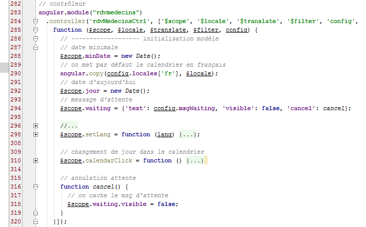
- Zeilen 284–285: Der [config]-Dienst wird in den Controller injiziert;
- Zeile 290: Das [locales]-Wörterbuch befindet sich nun im [config]-Dienst und nicht mehr im Controller;
- Zeile 294: das [waiting]-Objekt, das die Anzeige der Wartemeldung steuert. Der Schlüssel für die Wartemeldung befindet sich im [config]-Dienst (Textfeld). Standardmäßig ist die Wartemeldung ausgeblendet (sichtbares Feld). Das Feld „cancel“ hat als Wert den Namen der Funktion in Zeile 316. Dieses Feld ist daher eine Methode oder Funktion;
- Zeile 316: Die Funktion [cancel] ist privat (wir haben nicht $scope.cancel=function(){} geschrieben). Schauen wir uns den Code für die Schaltfläche „Abbrechen“ noch einmal an:
<button class="btn btn-primary pull-right" ng-click="waiting.cancel()">
Wenn der Benutzer auf die Schaltfläche „Abbrechen“ klickt, wird die Methode [$scope.waiting.cancel()] aufgerufen. Letztendlich wird die private Funktion „cancel“ aus Zeile 316 ausgeführt. Sie blendet die Wartemeldung einfach aus, indem sie die Modellvariable [waiting.visible] auf „false“ setzt (Zeile 318);
3.7.5. Beispiel 5: Asynchrone Programmierung
Wir stellen nun einen neuen Dienst mit einem neuen Konzept vor: die asynchrone Programmierung.
 |
Unsere Anwendung wird drei Dienste umfassen:
- [config]: der soeben vorgestellte Konfigurationsdienst;
- [utils]: ein Dienst mit Hilfsmethoden. Wir werden zwei davon vorstellen;
- [dao]: der Dienst für den Zugriff auf den Webdienst zur Terminplanung. Wir werden ihn in Kürze vorstellen;
Wir werden die folgende Anwendung schreiben:
 |
 |
- Das Ziel ist es, das Banner [2] für eine durch [1] festgelegte Dauer anzuzeigen. Die Wartezeit kann durch [3] abgebrochen werden.
Wir duplizieren [app-01.html] als [app-15.html] und ändern den Code wie folgt:
<!DOCTYPE html>
<html ng-app="rdvmedecins">
<head>
<title>RdvMedecins</title>
...
</head>
<body ng-controller="rdvMedecinsCtrl">
<div class="container">
<!-- the waiting message -->
<div class="alert alert-warning" ng-show="waiting.visible" ng-cloak="">
<h1>{{ waiting.text | translate}}
<button class="btn btn-primary pull-right" ng-click="waiting.cancel()">{{'msg_cancel'|translate}}</button>
<img src="assets/images/waiting.gif" alt=""/>
</h1>
</div>
<!-- the form -->
<div class="alert alert-info" ng-hide="waiting.visible">
<div class="form-group">
<label for="waitingTime">{{waitingTimeText | translate}}</label>
<input type="text" id="waitingTime" ng-model="waiting.time"/>
</div>
<button class="btn btn-primary" ng-click="execute()">Exécuter</button>
</div>
</div>
..
<script type="text/javascript" src="rdvmedecins-03.js"></script>
</body>
</html>
- Zeile 11: Das Attribut [ng-cloak] verhindert, dass der Bereich angezeigt wird, bis seine Angular-Ausdrücke ausgewertet wurden. Dadurch wird verhindert, dass der Bereich kurzzeitig erscheint, bevor das Attribut [ng-show] ausgewertet wird, wodurch er tatsächlich ausgeblendet wird;
- Zeile 22: Die Eingabe des Benutzers (Wartezeit) wird im Modell [waiting.time] (ng-model-Attribut) gespeichert;
- Zeile 28: Die Seite verwendet ein neues Skript [rdvmedecins-03];
Das Skript [rdvmedecins-03] lautet wie folgt:

- Zeile 6: das Angular-Modul, das die Anwendung verwaltet;
- Zeile 10: die Funktion [config], die zur Internationalisierung von Meldungen verwendet wird;
- Zeile 41: der von uns beschriebene [config]-Dienst;
- Zeile 286: der [utils]-Dienst, den wir erstellen werden;
- Zeile 315: der [rdvmedecinsCtrl]-Controller, den wir erstellen werden;
Wir fügen der [config]-Funktion einen neuen Meldungsschlüssel hinzu (Zeilen 6, 11):
angular.module("rdvmedecins")
.config(['$translateProvider', function ($translateProvider) {
// french messages
$translateProvider.translations("fr", {
...
'msg_waiting_time_text': "Temps d'attente : "
});
// english messages
$translateProvider.translations("en", {
...
'msg_waiting_time_text': "Waiting time:"
});
// default language
$translateProvider.preferredLanguage("fr");
}]);
Wir fügen dem [config]-Dienst für diesen Nachrichten-Schlüssel eine neue Zeile (Zeile 6) hinzu:
angular.module("rdvmedecins")
.factory('config', function () {
return {
// messages to be internationalized
...
waitingTimeText: 'msg_waiting_time_text',
Der Dienst [utils] enthält zwei Methoden (Zeilen 4, 12):
angular.module("rdvmedecins")
.factory('utils', ['config', '$timeout', '$q', function (config, $timeout, $q) {
// display the Json representation of an object
function debug(message, data) {
if (config.debug) {
var text = data ? message + " : " + angular.toJson(data) : message;
console.log(text);
}
}
// waiting
function waitForSomeTime(milliseconds) {
// asynchronous waiting milliseconds milliseconds
var task = $q.defer();
$timeout(function () {
task.resolve();
}, milliseconds);
// we return the task
return task;
};
// service authority
return {
debug: debug,
waitForSomeTime: waitForSomeTime
}
}]);
- Zeile 2: Der Dienst heißt [utils] (erster Parameter). Er hängt von drei Diensten ab: zwei vordefinierten Angular-Diensten, $timeout und $q, sowie dem Config-Dienst. Der Dienst [$timeout] ermöglicht die Ausführung einer Funktion nach Ablauf einer bestimmten Zeit. Der Dienst [$q] ermöglicht die Erstellung asynchroner Aufgaben;
- Zeile 4: eine lokale Funktion [debug];
- Zeile 12: eine lokale Funktion [waitForSomeTime];
- Zeilen 23–26: die Instanz des [utils]-Dienstes. Dies ist ein Objekt, das zwei Methoden bereitstellt, nämlich die in den Zeilen 4 und 12. Beachten Sie, dass die Felder des Objekts beliebige Namen haben können. Aus Gründen der Konsistenz haben wir ihnen die Namen der Funktionen gegeben, auf die sie verweisen;
- Zeilen 4–9: Die Methode [debug] schreibt eine Meldung [message] in die Konsole und, falls zutreffend, die JSON-Darstellung eines Objekts [data]. Dadurch können Objekte beliebiger Komplexität angezeigt werden;
- Zeilen 12–20: Die Methode [waitForSomeTime] erstellt eine asynchrone Aufgabe, die [milliseconds] Millisekunden dauert;
- Zeile 14: Erstellung einer Aufgabe unter Verwendung des vordefinierten Objekts [$q] (https://docs.angularjs.org/api/ng/service/$q). Nachfolgend finden Sie die API für die Aufgabe namens [deferred] aus der Angular-Dokumentation:

- Eine asynchrone Aufgabe [task] wird durch die Anweisung [$q.defer()] erstellt;
- sie wird mit einer von zwei Methoden abgeschlossen:
- [task.resolve(value)]: Diese Methode schließt die Aufgabe erfolgreich ab und gibt den Wert [value] an diejenigen zurück, die auf den Abschluss der Aufgabe warten;
- [task.reject(value)]: beendet die Aufgabe mit einem Fehler und gibt den Wert [value] an diejenigen zurück, die auf den Abschluss der Aufgabe warten;
Die Aufgabe [task] kann denjenigen, die auf ihren Abschluss warten, in regelmäßigen Abständen Informationen bereitstellen:
- [task.notify(value)]: sendet den Wert [value] an diejenigen, die auf den Abschluss der Aufgabe warten. Die Aufgabe läuft weiter;
Wer auf den Abschluss der Aufgabe warten möchte, nutzt deren Feld [promise]:
Das [promise]-Objekt verfügt über die folgende API (http://www.frangular.com/2012/12/api-promise-angularjs.html):

Um sowohl den Erfolg als auch das Scheitern der Aufgabe zu behandeln, schreiben wir:
- Zeile 1: Wir rufen das Promise der Aufgabe ab;
- Zeile 2: Wir definieren die Funktionen, die im Erfolgs- oder Fehlerfall ausgeführt werden sollen. Wir können darauf verzichten, eine Fehlerfunktion anzugeben. Die Funktion [successCallback] wird nur ausgeführt, wenn die [Aufgabe] erfolgreich abgeschlossen wird [task.resolve()]. Die Funktion [errorCallback] wird nur ausgeführt, wenn die [Aufgabe] fehlschlägt [task.reject()].
- Zeile 3: Wir definieren die Funktion, die ausgeführt werden soll, nachdem eine der beiden vorherigen Funktionen ausgeführt wurde. Hier platzieren wir den Code, der beiden Funktionen [successCallback, errorCallback] gemeinsam ist.
Kehren wir zum Code für die Funktion [waitForSomeTime] zurück:
// attente
function waitForSomeTime(milliseconds) {
// attente asynchrone de milliseconds millisecondes
var task = $q.defer();
$timeout(function () {
task.resolve();
}, milliseconds);
// on retourne la tâche
return task;
};
- Zeile 4: Eine Aufgabe wird erstellt;
- Zeilen 5–7: Mit dem Objekt [$timeout] können Sie eine Funktion (erster Parameter) definieren, die nach einer bestimmten Verzögerung in Millisekunden (zweiter Parameter) ausgeführt wird. Hier ist der zweite Parameter der Funktion [$timeout] der Parameter der Methode (Zeile 1);
- Zeile 6: Nach der Verzögerung von [Millisekunden] wird die Aufgabe erfolgreich abgeschlossen;
- Zeile 9: Die Aufgabe [task] wird zurückgegeben. Es ist wichtig zu beachten, dass Zeile 9 unmittelbar nach der Definition des Objekts [$timeout] ausgeführt wird. Wir warten nicht, bis die Verzögerung von [milliseconds] abgelaufen ist. Der Code in den Zeilen 2–10 wird daher zu zwei verschiedenen Zeitpunkten ausgeführt:
- das erste Mal, wenn das Objekt [$timeout] definiert wird;
- ein zweites Mal, wenn die Zeitüberschreitung [Millisekunden] abgelaufen ist;
Dies ist eine asynchrone Funktion: Ihr Ergebnis wird zu einem späteren Zeitpunkt als ihre Ausführung erhalten.
Der Controller-Code, der den Dienst [config] verwendet, lautet wie folgt:
// controller
angular.module("rdvmedecins")
.controller('rdvMedecinsCtrl', ['$scope', 'utils', 'config', '$filter',
function ($scope, utils, config, $filter) {
// ------------------- model initialization
// waiting message
$scope.waiting = {text: config.msgWaiting, visible: false, cancel: cancel, time: undefined};
$scope.waitingTimeText = config.waitingTimeText;
// waiting task
var task;
// logs
utils.debug("libellé temps d'attente", $filter('translate')($scope.waitingTimeText));
utils.debug("locales['fr']=", config.locales['fr']);
// execution action
$scope.execute = function () {
// log
utils.debug('début', new Date());
// the waiting msg is displayed
$scope.waiting.visible = true;
// simulated waiting
task = utils.waitForSomeTime($scope.waiting.time);
// end of wait
task.promise.then(function () {
// success
utils.debug('fin', new Date());
}, function () {
// failure
utils.debug('Opération annulée')
});
task.promise['finally'](function () {
// end of wait in all cases
$scope.waiting.visible = false;
});
};
// cancel wait
function cancel() {
// complete the task
task.reject();
}
}]);
- Zeile 3: Der Controller nutzt den [config]-Dienst;
- Zeile 7: Wir haben das Feld [time] zum Objekt [$scope.waiting] hinzugefügt. Das Objekt [$scope.waiting.time] erhält den Wert der vom Benutzer festgelegten Wartezeit;
- Zeile 8: Der Schlüssel für die von der Ansicht angezeigte Wartemeldung wird im Modell [$scope.waitingTimeText] abgelegt. Generell muss alles, was von einer V-Ansicht angezeigt wird, im Objekt [$scope] abgelegt werden;
- Zeile 10: eine lokale Variable. Sie wird der V-Ansicht nicht zugänglich gemacht;
- Zeilen 12–13: Verwendung der Methode [debug] des Dienstes [config]. Das folgende Ergebnis wird auf der Konsole angezeigt:
Zeile 2: Wir erhalten die JSON-Darstellung des Objekts locales['fr'].
- Zeile 16: Die Methode, die ausgeführt wird, wenn der Benutzer auf die Schaltfläche [Execute] klickt;
- Zeile 18: Zeigt den Startzeitpunkt der Methodenausführung an;
- Zeile 22: Die Aufgabe [waitForSomeTime] wird gestartet. Wir warten nicht auf deren Abschluss. Die Ausführung wird mit der folgenden Zeile 24 fortgesetzt;
- Zeilen 24–30: Definieren die Funktionen, die ausgeführt werden sollen, wenn die Aufgabe erfolgreich abgeschlossen wurde (Zeile 26) und im Falle eines Fehlers (Zeile 29);
- Zeile 26: Zeigt die Endzeit der Methodenausführung an;
- Zeile 29: Zeigt an, dass der Vorgang abgebrochen wurde. Dies geschieht nur, wenn der Benutzer auf die Schaltfläche [Abbrechen] klickt. Die Anweisung in Zeile 41 beendet dann die asynchrone Aufgabe mit einem Fehlercode;
- Zeilen 31–34: definieren die Funktion, die ausgeführt werden soll, nachdem eine der beiden vorangehenden Funktionen ausgeführt wurde;
Es ist wichtig, die Ausführungsreihenfolge dieses Codes zu verstehen. Wenn der Benutzer eine Verzögerung von 3 Sekunden festlegt und die Wartezeit nicht abbricht:
- wird beim Klicken auf die Schaltfläche [Ausführen] die Funktion [$scope.execute] ausgeführt. Die Zeilen 16–34 werden ausgeführt, ohne die 3 Sekunden abzuwarten. Am Ende dieser Ausführung wird die Ansicht V mit dem Modell M synchronisiert. Die Wartemeldung wird angezeigt (ng-show=$scope.waiting.visible=true, Zeile 20) und das Formular wird ausgeblendet (ng-hide=$scope.waiting.visible=true, Zeile 20);
- ab diesem Zeitpunkt kann der Benutzer wieder mit der Ansicht interagieren. Insbesondere kann er auf die Schaltfläche [Abbrechen] klicken;
- tut er dies nicht, wird nach 3 Sekunden die Funktion [$timeout] (siehe Zeilen 5–7 unten) ausgeführt:
// attente
function waitForSomeTime(milliseconds) {
// attente asynchrone de milliseconds millisecondes
var task = $q.defer();
$timeout(function () {
task.resolve();
}, milliseconds);
// on retourne la tâche
return task;
};
- Nach 3 Sekunden wird der Code ausgeführt. Dieser Code schließt die Aufgabe [task] mit einem Erfolgscode (resolve) ab. Dies löst die Ausführung des gesamten Codes aus, der auf diesen Abschluss gewartet hat (Zeile 4 unten):
// simulated waiting
task = utils.waitForSomeTime($scope.waiting.time);
// end of wait
task.promise.then(function () {
// success
utils.debug('fin', new Date());
}, function () {
// failure
utils.debug('Opération annulée')
});
task.promise['finally'](function () {
// end of wait in all cases
$scope.waiting.visible = false;
});
- Die Zeile 6 oben (erfolgreich abgeschlossen) wird daher ausgeführt. Anschließend werden die Zeilen 11–14 ausgeführt. Sobald dieser Code ausgeführt wurde, kehren wir zur V-Ansicht zurück, die dann mit ihrem M-Modell synchronisiert wird. Die Wartemeldung wird ausgeblendet (ng-show=$scope.waiting.visible=false, Zeile 13) und das Formular wird angezeigt (ng-hide=$scope.waiting.visible=false, Zeile 13);
Die Bildschirmanzeigen sehen dann wie folgt aus:
Wie oben gezeigt, besteht eine Verzögerung von 3 Sekunden (06:01–05:58) zwischen Beginn und Ende der Wartezeit. Umgekehrt wird Folgendes angezeigt, wenn der Benutzer die Wartezeit vor Ablauf der 3 Sekunden abbricht:
Schließlich ist es wichtig zu verstehen, dass es zu jedem Zeitpunkt nur einen Ausführungsthread gibt, den sogenannten UI-Thread (User Interface). Der Abschluss einer asynchronen Aufgabe wird durch ein Ereignis signalisiert, genau wie ein Klick auf eine Schaltfläche. Dieses Ereignis wird nicht sofort verarbeitet. Es wird in die Warteschlange der zur Ausführung anstehenden Ereignisse gestellt. Wenn es an der Reihe ist, wird es verarbeitet. Diese Verarbeitung nutzt den UI-Thread, sodass die Benutzeroberfläche während dieser Zeit einfriert. Sie reagiert nicht auf Benutzereingaben. Aus diesem Grund ist es wichtig, dass die Ereignisverarbeitung schnell erfolgt. Da jedes Ereignis vom UI-Thread verarbeitet wird, müssen niemals Synchronisationsprobleme zwischen gleichzeitig laufenden Threads gelöst werden. Zu jedem Zeitpunkt wird nur der UI-Thread ausgeführt.
3.7.6. Beispiel 6: HTTP-Dienste
Wir stellen nun den [dao]-Dienst vor, der mit dem Webserver kommuniziert:
 |
3.7.6.1. Die V-Ansicht
 |
Wir werden ein Formular erstellen, um die Liste der Ärzte abzufragen:

Wir kopieren [app-01.html] nach [app-16.html] und ändern diese Datei dann wie folgt:
<div class="container" ng-cloak="">
<h1>Rdvmedecins - v1</h1>
<!-- the waiting message -->
<div class="alert alert-warning" ng-show="waiting.visible" ng-cloak="">
<h1>{{ waiting.text | translate}}
<button class="btn btn-primary pull-right" ng-click="waiting.cancel()">{{'msg_cancel'|translate}}</button>
<img src="assets/images/waiting.gif" alt=""/>
</h1>
</div>
<!-- the request -->
<div class="alert alert-info" ng-hide="waiting.visible">
<div class="form-group">
<label for="waitingTime">{{waitingTimeText | translate}}</label>
<input type="text" id="waitingTime" ng-model="waiting.time"/>
</div>
<div class="form-group">
<label for="urlServer">{{urlServerLabel | translate}}</label>
<input type="text" id="urlServer" ng-model="server.url"/>
</div>
<div class="form-group">
<label for="login">{{loginLabel | translate}}</label>
<input type="text" id="login" ng-model="server.login"/>
</div>
<div class="form-group">
<label for="password">{{passwordLabel | translate}}</label>
<input type="password" id="password" ng-model="server.password"/>
</div>
<button class="btn btn-primary" ng-click="execute()">{{medecins.title|translate:medecins.model}}</button>
</div>
<!-- list of doctors -->
<div class="alert alert-success" ng-show="medecins.show">
{{medecins.title|translate:medecins.model}}
<ul>
<li ng-repeat="medecin in medecins.data">{{medecin.titre}}{{medecin.prenom}} {{medecin.nom}}</li>
</ul>
</div>
<!-- the error list -->
<div class="alert alert-danger" ng-show="errors.show">
{{errors.title|translate:errors.model}}
<ul>
<li ng-repeat="message in errors.messages">{{message|translate}}</li>
</ul>
</div>
</div>
...
<script type="text/javascript" src="rdvmedecins-04.js"></script>
- Zeilen 13–31: Implementieren Sie das Formular. Dieses Formular ist nicht sichtbar, wenn die Wartemeldung angezeigt wird (ng-hide="waiting.visible"). Beachten Sie, dass die vier Eingaben in (ng-model-Attributen) gespeichert werden [waiting.time (Zeile 16), server.url (Zeile 20), server.login (Zeile 24), server.password (Zeile 28)];
- Zeilen 34–39: Zeige die Liste der Ärzte an. Diese Liste ist nicht immer sichtbar (ng-show="medecins.show").
- Zeile 35: eine Alternative zur bereits bekannten Syntax <div ... translate="{{medecins.title}}" translate-values="{{medecins.model}}">;
- Zeile 36: eine ungeordnete Liste;
- Zeile 37: Die Liste der Ärzte befindet sich im Modell [medecins.data]. Die Angular-Direktive [ng-repeat] ermöglicht es, eine Liste zu durchlaufen. Die Syntax ng-repeat="doctor in medecins.data" weist das <li>-Tag an, für jedes Element in der Liste [medecins.data] wiederholt zu werden. Das aktuelle Element in der Liste wird als [medecin] bezeichnet;
- Zeile 37: Für jedes <li> zeigen wir den Titel, den Vornamen und den Nachnamen des aktuellen Arztes an, der durch die Variable [medecin] bezeichnet wird;
- Zeilen 42–47: Anzeige der Fehlerliste. Diese Liste ist nicht immer sichtbar (ng-show="errors.show"). Diese Anzeige folgt dem gleichen Muster wie die Anzeige der Ärzte-Liste. Im Allgemeinen verwenden wir zur Anzeige einer Liste von Objekten die Angular-Direktive [ng-repeat];
- Zeile 51: Der JavaScript-Code befindet sich nun in der Datei [rdvmedecins-04]
3.7.6.2. Der C-Controller und das M-Modell
 |
Der JavaScript-Code ändert sich wie folgt:

- Zeilen 6–9: Das Modul [rdvmedecins] deklariert eine Abhängigkeit vom Modul [base64], das von der Bibliothek [angular-base64] bereitgestellt wird, die eine der Abhängigkeiten des Projekts ist. Dieses Modul wird verwendet, um die an den Webdienst zur Authentifizierung gesendete Zeichenfolge [login:password] in Base64 zu kodieren;
- Zeilen 12–13: Die Initialisierungsfunktion, die unsere internationalisierten Meldungen enthält. Es erscheinen neue Meldungen. Wir werden nicht näher darauf eingehen;
- Zeilen 69–70: Der [config]-Dienst, der unsere Anwendung konfiguriert. Hier wurden neue Meldungsschlüssel hinzugefügt. Wir werden nicht weiter darauf eingehen;
- Zeilen 318–319: der [utils]-Dienst, der Hilfsmethoden enthält. Es wurden neue hinzugefügt. Wir werden sie vorstellen;
- Zeilen 385–386: der [dao]-Dienst, der für die Kommunikation mit dem Webdienst zuständig ist. Darauf werden wir uns konzentrieren;
- Zeilen 467–468: der C-Controller für die soeben besprochene V-Ansicht. Wir werden ihn jetzt behandeln, da er als Koordinator fungiert, der auf Benutzeranfragen reagiert;
3.7.6.3. Der C-Controller
Der Controller-Code lautet wie folgt:
angular.module("rdvmedecins")
.controller('rdvMedecinsCtrl', ['$scope', 'utils', 'config', 'dao', '$translate',
function ($scope, utils, config, dao, $translate) {
// ------------------- model initialization
// model
$scope.waiting = {text: config.msgWaiting, visible: false, cancel: cancel, time: undefined};
$scope.waitingTimeText = config.waitingTimeText;
$scope.server = {url: undefined, login: undefined, password: undefined};
$scope.medecins = {title: config.listMedecins, show: false, model: {}};
$scope.errors = {show: false, model: {}};
$scope.urlServerLabel = config.urlServerLabel;
$scope.loginLabel = config.loginLabel;
$scope.passwordLabel = config.passwordLabel;
// asynchronous task
var task;
// execution action
$scope.execute = function () {
// the UI is updated
$scope.waiting.visible = true;
$scope.medecins.show = false;
$scope.errors.show = false;
// simulated waiting
task = utils.waitForSomeTime($scope.waiting.time);
var promise = task.promise;
// waiting
promise = promise.then(function () {
// we ask for the list of doctors;
task = dao.getData($scope.server.url, $scope.server.login, $scope.server.password, config.urlSvrMedecins);
return task.promise;
});
// analyze the result of the previous call
promise.then(function (result) {
// result={err: 0, data: [med1, med2, ...]}
// result={err: n, messages: [msg1, msg2, ...]}
if (result.err == 0) {
// we put the acquired data into the model
$scope.medecins.data = result.data;
// the UI is updated
$scope.medecins.show = true;
$scope.waiting.visible = false;
} else {
// there were errors in obtaining the list of doctors
$scope.errors = { title: config.getMedecinsErrors, messages: utils.getErrors(result), show: true, model: {}};
// the UI is updated
$scope.waiting.visible = false;
}
});
};
// cancel wait
function cancel() {
// complete the task
task.reject();
// the UI is updated
$scope.waiting.visible = false;
$scope.medecins.show = false;
$scope.errors.show = false;
}
}
])
;
- Zeile 2: Der Controller hat eine neue Abhängigkeit, nämlich den [dao]-Dienst;
- Zeilen 6–13: Das M-Modell der V-Ansicht wird initialisiert, sobald die Ansicht zum ersten Mal angezeigt wird;
- Zeile 8: [$scope.server] wird verwendet, um drei der vier Informationen aus dem Formular V abzurufen; die vierte ist in [$scope.waiting.time] gespeichert (Zeile 6);
- Zeile 9: [$scope.doctors] sammelt die Informationen, die zur Anzeige der Ärzte-Liste benötigt werden:
<!-- list of doctors -->
<div class="alert alert-success" ng-show="medecins.show">
{{medecins.title|translate:medecins.model}}
<ul>
<li ng-repeat="medecin in medecins.data">{{medecin.titre}}{{medecin.prenom}} {{medecin.nom}}</li>
</ul>
</div>
Das Attribut [medecins.title] ist der Titel des Banners. Es wird im Dienst [config] definiert. Das Attribut [medecins.show] steuert, ob das Banner angezeigt wird oder nicht (Attribut ng-show="medecins.show"). Das Attribut [medecins.model] ist ein leeres Wörterbuch und bleibt dies auch. Es dient lediglich dazu, die Verwendung der in Zeile 3 verwendeten Übersetzungsvariante zu veranschaulichen. Das noch nicht definierte Attribut [medecins.data] wird die Liste der Ärzte enthalten (Zeile 5).
- Zeile 10: [$scope.errors] sammelt die Informationen, die zur Anzeige der Fehlerliste benötigt werden:
<!-- the error list -->
<div class="alert alert-danger" ng-show="errors.show">
{{errors.title|translate:errors.model}}
<ul>
<li ng-repeat="message in errors.messages">{{message|translate}}</li>
</ul>
</div>
Das Attribut [errors.title] ist der Titel des Banners. Es wird im Dienst [config] definiert. Das Attribut [errors.show] steuert, ob das Banner angezeigt wird oder nicht (Attribut ng-show="errors.show"). Das Attribut [errors.model] ist ein leeres Wörterbuch und bleibt dies auch. Es dient lediglich dazu, die Verwendung der in Zeile 3 verwendeten Übersetzungsvariante zu veranschaulichen. Das noch nicht definierte Attribut [errors.messages] wird die Liste der anzuzeigenden Fehlermeldungen enthalten (Zeile 5).
- Zeile 16: die asynchrone Aufgabe. Der Controller startet nacheinander zwei asynchrone Aufgaben. Verweise auf diese aufeinanderfolgenden Aufgaben werden in der Variablen [task] abgelegt. Dadurch können sie abgebrochen werden (Zeile 55);
- Zeile 19: Die Methode, die ausgeführt wird, wenn der Benutzer auf die Schaltfläche [Liste der Ärzte] klickt:
<button class="btn btn-primary" ng-click="execute()">Liste des médecins</button>
- Zeilen 21–23: Die Benutzeroberfläche wird aktualisiert: Die Lademeldung wird angezeigt, und alles andere wird ausgeblendet;
- Zeile 25: Die asynchrone Warteaufgabe wird erstellt. Ein Signal (Aufgabe abgeschlossen) wird empfangen, nachdem die vom Benutzer im Formular eingegebene Zeit abgelaufen ist;
- Zeile 26: Wir rufen das Promise der asynchronen Aufgabe ab. Das Programm, das die Aufgabe startet, arbeitet mit diesem Promise. Wir benötigen jedoch die Referenz auf die Aufgabe selbst, um sie abbrechen zu können (Zeile 55);
- Zeilen 28–32: Wir definieren die Arbeit, die nach Abschluss des Wartens ausgeführt werden soll;
- Zeile 30: Wir verwenden die Methode [dao.getData], um eine neue asynchrone Aufgabe zu starten. Wir übergeben ihr die benötigten Informationen:
- die Stamm-URL des Webdienstes [$scope.server.url], zum Beispiel [http://localhost:8080];
- den Login [$scope.server.login] zur Authentifizierung, zum Beispiel [admin];
- das Passwort [$scope.server.password] zur Authentifizierung, zum Beispiel [admin];
- die URL, die den angeforderten Dienst zurückgibt [config.urlSvrMedecins], hier [/getAllMedecins]. Insgesamt lautet die vollständige URL [http://localhost:8080/getAllMedecins];
Die Methode [dao.getData] gibt ein Ergebnis zurück, das zwei Formen annehmen kann:
- (Fortsetzung)
- {err: 0, data: [med1, med2, ...]}, wobei [medi] ein Objekt ist, das einen Arzt darstellt (Titel, Vorname, Nachname),
- {err: n, messages: [msg1, msg2, ...]}, wobei [msg] eine Fehlermeldung ist und n ungleich 0 ist;
- Zeile 31: Wir geben das Promise der Aufgabe zurück. Hier gibt es etwas zu beachten. Wir haben zwei Promises:
- promise.then(): gibt ein erstes Promise [promise1] zurück;
- return task.promise: gibt ein zweites Promise [promise2] zurück;
- Letztendlich ist promise = promise.then(...; return task.promise) eine Kette aus zwei Promises [promise2.promise1]. [promise1] wird erst ausgewertet, wenn das Promise [promise2] aufgelöst ist, d. h. wenn die Aufgabe [dao.getData] abgeschlossen ist. Das Promise [promise1] hängt von keiner asynchronen Aufgabe ab. Es wird daher sofort aufgelöst;
- Zeilen 34–50: Aus der vorangegangenen Erklärung folgt, dass diese Zeilen erst ausgeführt werden, sobald die Aufgabe [dao.getData] abgeschlossen ist. Der in Zeile 34 an die Funktion übergebene Parameter [result] wird von der Methode [dao.getData] erstellt und über die Operation [task.resolve(result)] an den aufrufenden Code übergeben, wobei [result] die folgende Form hat:
- {err: 0, data: [med1, med2, ...]}, wobei [med1] ein Objekt ist, das einen Arzt repräsentiert (Titel, Vorname, Nachname),
- {err: n, messages: [msg1, msg2, ...]} wobei [msg1] eine Fehlermeldung ist und n ungleich 0 ist;
- Zeile 37: Wir überprüfen den Fehlercode [result.err];
- Zeilen 38–42: Wenn kein Fehler vorliegt (result.err == 0), rufen wir die Liste der Ärzte ab und zeigen sie an;
- Zeilen 44–47: Wenn hingegen ein Fehler vorliegt (result.err != 0), rufen wir die Liste der Fehlermeldungen ab und zeigen sie an;
- Zeilen 53–56: Die Lademeldung mit ihrer Abbrechen-Schaltfläche bleibt sichtbar, bis beide asynchronen Vorgänge abgeschlossen sind. Schauen wir uns an, was passiert, je nachdem, wann der Abbruch erfolgt:
- Zunächst ist es wichtig zu verstehen, dass die Zeilen 19–50 alle auf einmal ausgeführt werden. Zu diesem Zeitpunkt wurde nur eine asynchrone Aufgabe gestartet, nämlich die in Zeile 25.
- Nach dieser ersten Ausführung wird Ansicht V aktualisiert, sodass das Wartebanner und die Abbrechen-Schaltfläche sichtbar sind. Wenn der Benutzer das Warten abbricht, bevor die Aufgabe in Zeile 25 abgeschlossen ist, wird die Methode in Zeile 53 ausgeführt und die Aufgabe mit einem Fehler abgebrochen (Zeile 55);
- Zeilen 56–59: Die Benutzeroberfläche wird aktualisiert: Das Formular wird erneut angezeigt und alles andere wird ausgeblendet,
- Anschließend kehrt das Programm zur V-Ansicht zurück, und der Browser verarbeitet das nächste Ereignis. Da die Aufgabe abgeschlossen ist, wird das Promise für diese Aufgabe aufgelöst, was ein Ereignis auslöst. Dieses wird dann verarbeitet;
- anschließend werden die Zeilen 28–32 ausgeführt. Da für den Fehlerfall keine Funktion definiert ist, wird kein Code ausgeführt. Es wird ein neues Promise abgerufen, dasjenige, das immer von [promise.then] zurückgegeben und immer aufgelöst wird;
- Nachdem das Ereignis behandelt wurde, kehrt die Steuerung zur Ansicht V zurück und der Browser fährt mit der Behandlung des nächsten Ereignisses fort. Da das [Promise] in Zeile 28 aufgelöst wurde, wird das in Zeile 34 aufgelöst, was ein neues Ereignis auslöst. Dieses wird dann behandelt;
- die Zeilen 34–49 werden dann nacheinander ausgeführt, da das in Zeile 34 verwendete Promise erfüllt wurde. Da auch hier keine Funktion für den Fehlerfall definiert ist, wird kein Code ausgeführt,
- und wir gelangen somit zu Zeile 50. Es wartet keine Aufgabe mehr, und die neue Ansicht V wird angezeigt;
- Nehmen wir nun an, dass eine Abbruchaktion erfolgt, während die zweite asynchrone Aufgabe [dao.getData] läuft. Die vorherige Argumentation gilt erneut. Das Ende der Aufgabe löst die Ausführung der Zeilen 34–50 mit einem Aufgabenfehler aus. Wir werden bald feststellen, dass die Methode [dao.getData] einen asynchronen HTTP-Aufruf an den Webdienst sendet. Dieser Aufruf wird nicht abgebrochen, aber sein Ergebnis wird nicht verwendet.
Es ist wichtig, dieses ständige Hin und Her zwischen der Darstellung der Ansicht V und der Verarbeitung von Browser-Ereignissen zu verstehen. Ereignisse werden durch den Benutzer (einen Klick) oder durch Systemvorgänge wie den Abschluss einer asynchronen Operation ausgelöst. Der Ruhezustand des Browsers ist die Darstellung der Ansicht V. Er wird durch ein auftretendes Ereignis aus diesem Ruhezustand herausgeholt, das er dann verarbeitet. Sobald das Ereignis verarbeitet wurde, kehrt er in seinen Ruhezustand zurück. Die Ansicht V wird dann aktualisiert, wenn das verarbeitete Ereignis ihr M-Modell verändert hat. Der Browser wird durch das nächste Ereignis aus seinem Ruhezustand herausgeholt.
Alles geschieht in einem einzigen Thread. Zwei Ereignisse werden niemals gleichzeitig verarbeitet. Ihre Ausführung erfolgt sequenziell. Der Browser fährt erst dann mit dem nächsten Ereignis fort, wenn das vorherige die Kontrolle freigibt, in der Regel weil es vollständig verarbeitet wurde.
Es gibt noch einen weiteren Punkt zu erklären. Um Fehlermeldungen anzuzeigen, schreiben wir:
$scope.errors = { title: config.getMedecinsErrors, messages: utils.getErrors(result), show: true, model: {}};
Die Liste der Meldungen wird von der Methode [utils.getErrors] bereitgestellt, die im Dienst [utils] definiert ist. Diese Methode sieht wie folgt aus:
// error analysis in server response JSON
function getErrors(data) {
// data {err:n, messages:[]}, err!=0
// errors
var errors = [];
// error code
var err = data.err;
switch (err) {
case 2 :
// not authorized
errors.push('not_authorized');
break;
case 3 :
// forbidden
errors.push('forbidden');
break;
case 4 :
// local error
errors.push('not_http_error');
break;
case 6 :
// document not found
errors.push('not_found');
break;
default :
// other cases
errors = data.messages;
break;
}
// if no msg, we put one
if (! errors || errors.length == 0) {
errors=['error_unknown'];
}
// return the list of errors
return errors;
}
- Zeilen 2–3: Der empfangene Parameter [data] ist ein Objekt mit zwei Attributen:
- [err]: ein Fehlercode;
- [messages]: eine Liste von Meldungen;
- Zeile 5: Wir erstellen ein Array mit Fehlermeldungen. Diese Meldungen sind internationalisiert. Aus diesem Grund fügen wir nicht die Meldungen selbst in das Array ein, sondern ihre Internationalisierungsschlüssel, außer in Zeile 27. In diesem Fall verwenden wir das Attribut [messages] des Parameters [data]. Diese Meldungen sind tatsächliche Meldungen und keine Meldungsschlüssel. Die Ansicht V behandelt sie jedoch als Meldungsschlüssel, die dann nicht gefunden werden. In diesem Fall zeigt das Modul [translate] den nicht gefundenen Meldungsschlüssel an – in diesem Fall eine tatsächliche Meldung. Dies ist das gewünschte Ergebnis;
- Zeilen 32–34: Behandeln den Fall, in dem [data.messages] in Zeile 27 null ist. Dies tritt bei dem geschriebenen Webdienst auf. Dieses Szenario hätte vermieden werden sollen.
3.7.6.4. Der [dao]-Dienst
 |
Der [dao]-Dienst wickelt den HTTP-Austausch mit dem Webdienst / JSON ab. Sein Code lautet wie folgt:
angular.module("rdvmedecins")
.factory('dao', ['$http', '$q', 'config', '$base64', 'utils',
function ($http, $q, config, $base64, utils) {
// logs
utils.debug("[dao] init");
// ----------------------------------méthodes privées
// obtain data from the web service
function getData(serverUrl, username, password, urlAction, info) {
// asynchronous operation
var task = $q.defer();
// url request HTTP
var url = serverUrl + urlAction;
// basic authentication
var basic = "Basic " + $base64.encode(username + ":" + password);
// the answer
var réponse;
// all http requests must be authenticated
var headers = $http.defaults.headers.common;
headers.Authorization = basic;
// query HTTP
var promise;
if (info) {
promise = $http.post(url, info, {timeout: config.timeout});
} else {
promise = $http.get(url, {timeout: config.timeout});
}
promise.then(success, failure);
// the task itself is returned so that it can be cancelled
return task;
// success
function success(response) {
// response.data={status:0, data:[med1, med2, ...]} or {status:x, data:[msg1, msg2, ...]
utils.debug("[dao] getData[" + urlAction + "] success réponse", response);
// answer
var payLoad = response.data;
réponse = payLoad.status == 0 ? {err: 0, data: payLoad.data} : {err: 1, messages: payLoad.data};
// we return the answer
task.resolve(réponse);
}
// failure
function failure(response) {
utils.debug("[dao] getData[" + urlAction + "] error réponse", response);
// status analysis
var status = response.status;
var error;
switch (status) {
case 401 :
// unauthorized
error = 2;
break;
case 403:
// forbidden
error = 3;
break;
case 404:
// not found
error = 6;
break;
case 0:
// local error
error = 4;
break;
default:
// something else
error = 5;
}
// we return the answer
task.resolve({err: error, messages: [response.statusText]});
}
}
// --------------------- service instance [dao]
return {
getData: getData
}
}]);
- Zeilen 77–79: Der Service hat nur ein Feld: die Methode [getData], die Informationen vom Webservice / JSON abruft;
- Zeile 2: Es taucht eine [$http]-Abhängigkeit auf, die wir bisher noch nicht gesehen haben. Dies ist ein vordefinierter Angular-Dienst, der die HTTP-Kommunikation mit einer Remote-Entität ermöglicht;
- Zeile 6: Ein Log, um zu sehen, an welchem Punkt im Lebenszyklus der Anwendung der Code ausgeführt wird;
- Zeile 10: Die Methode [getData] akzeptiert fünf Parameter:
- [serverUrl]: die Stamm-URL des Webdienstes (http://localhost:8080);
- [urlAction]: die URL des spezifischen angeforderten Dienstes (/getAllMedecins);
- [username]: der Benutzername des Anwenders;
- [password]: das Passwort des Benutzers;
- [info]: ein Objekt, das zusätzliche Informationen enthält, wenn über eine POST-Operation auf die URL des angeforderten Dienstes zugegriffen wird. Im Fall der URL (/getAllMedecins) wurde dieser Parameter nicht übergeben. Er ist daher [undefined];
- Zeile 12: Es wird eine asynchrone Aufgabe erstellt;
- Zeile 14: die vollständige URL des angeforderten Dienstes (http://localhost:8080/getAllMedecins);
- Zeile 16: Die Authentifizierung erfolgt durch Senden des folgenden HTTP-Headers:
wobei [code] die Base64-kodierte Zeichenfolge [Benutzername:Passwort] ist;
Zeile 16 erstellt den Teil [Basic-Code] des HTTP-Headers;
- Zeile 18: die Antwort des Webdienstes;
- Zeile 20: Die von Angular standardmäßig in einer HTTP-Anfrage gesendeten HTTP-Header sind im Objekt [$http.defaults.headers.common] definiert. Der Header [Authorization:Basic code] ist nicht enthalten;
- Zeile 21: Wir fügen ihn den HTTP-Headern hinzu, die systematisch gesendet werden sollen. Auf der linken Seite der Zuweisung steht der zu initialisierende [Authorization]-Header, auf der rechten Seite der Wert des Headers – in diesem Fall der in Zeile 16 definierte Wert. Wenn wir also schreiben:
sendet Angular den HTTP-Header:
- Zeile 23: Die Methoden des [$http]-Dienstes geben Promises zurück. Diese werden in der Variablen [promise] gespeichert;
- Zeile 27: Da der Parameter [info] hier den Wert [undefined] hat, wird Zeile 27 ausgeführt. Die URL (http://localhost:8080/getAllMedecins) wird mit einer GET-Anfrage abgerufen. Um zu lange Wartezeiten zu vermeiden, legen wir ein maximales Zeitlimit für den Empfang der Serverantwort fest. Standardmäßig beträgt dieses Zeitlimit eine Sekunde;
- Zeile 29: Wir definieren die beiden Methoden, die ausgeführt werden sollen, wenn das Promise erfüllt ist:
- [success]: definiert in Zeile 34, ist die Methode, die ausgeführt wird, wenn das Promise nach erfolgreichem Abschluss der Aufgabe aufgelöst wird;
- [failure]: definiert in Zeile 45, ist die Methode, die ausgeführt wird, wenn das Promise aufgrund eines Fehlers bei der Aufgabe aufgelöst wird;
- Beide Methoden (besser gesagt: Funktionen) sind innerhalb der Funktion [getData] definiert. Dies ist in JavaScript möglich. Die in [getData] definierten Variablen sind innerhalb der beiden internen Funktionen [success] und [failure] zugänglich;
- Zeile 31: Wir geben die in Zeile 12 erstellte Aufgabe zurück. Hier müssen wir uns den aufrufenden Code in Erinnerung rufen:
promise = promise.then(function () {
// we ask for the list of doctors;
task = dao.getData($scope.server.url, $scope.server.login, $scope.server.password, config.urlSvrMedecins);
return task.promise;
});
Zeile 3 oben ruft eine Aufgabe ab.
- Zeile 34: Die Funktion [success] wird später ausgeführt, sobald die HTTP-Anfrage erfolgreich abgeschlossen ist. Dieser Begriff des Erfolgs ist an die erste Zeile einer HTTP-Antwort gebunden. Sie hat folgende Form:
Der Code ist eine dreistellige Zahl, die angibt, ob die Anfrage erfolgreich war oder nicht. Im Allgemeinen sind 2xx- und 3xx-Codes Erfolgscodes, während die anderen Fehlercodes sind. Der Text ist eine kurze Erläuterung. Hier sind zwei mögliche Antworten, eine für den Erfolg und eine für den Fehler:
- Zeile 36: Die Antwort des Servers wird auf der Konsole angezeigt. Beim Fehler [404 Nicht gefunden] erhalten wir etwa Folgendes:
[dao] getData[/getAllMedecins] error réponse : {"data":"...","status":404,"config":{...},"statusText":"Not Found"}
In dieser Antwort verwenden wir nur die Felder [data], [status] und [statusText].
- Zeile 38: Wir extrahieren das Feld [data] aus der Antwort. Es kann eine der folgenden Formen annehmen:
- {status: 0, data: [med1, med2, ...]}, wobei [med1] ein Objekt ist, das einen Arzt repräsentiert (Titel, Vorname, Nachname),
- {status: n, data: [msg1, msg2, ...]}, wobei [msg1] eine Fehlermeldung ist und n ungleich 0 ist;
 |

- Zeile 39: Wir erstellen die Antwort {0,data} oder {n,messages}. Die erste Antwort enthält die Ärzte im Feld [data]. Die zweite weist auf einen Fehler hin, der auf der Serverseite aufgetreten ist. Der Server hat diesen Fehler behandelt, einen Fehlercode in [err] generiert und eine Liste von Fehlermeldungen in [data]. In beiden Fällen wird ein HTTP-Statuscode 200 zurückgegeben, der angibt, dass die HTTP-Anfrage vollständig verarbeitet wurde. Deshalb werden beide Fälle in derselben Funktion [success] behandelt;
- Zeile 41: Die Aufgabe ist abgeschlossen [task.resolve] und eine der beiden Antworten wird zurückgegeben:
- {err: 0, data: [med1, med2, ...]}, wobei [medi] ein Objekt ist, das einen Arzt darstellt (Titel, Vorname, Nachname),
- {err: n, messages: [msg1, msg2, ...]}, wobei [msgi] eine Fehlermeldung ist und n ungleich 0 ist;
Dieser Code muss mit der Art und Weise verknüpft werden, wie diese Antwort im aufrufenden Code des Controllers abgerufen wird:
// analyze the result of the previous call
promise.then(function (result) {
// result={err: 0, data: [med1, med2, ...]}
// result={err: n, messages: [msg1, msg2, ...]}
...
}
Die Antwort von [task.resolve(response)] wird in der obigen Variablen [result] gespeichert.
- Zeile 45: Die Funktion [failure], wenn die asynchrone Aufgabe fehlschlägt. Es gibt zwei mögliche Fälle:
- Der Server signalisiert diesen Fehler durch die Rückgabe eines Statuscodes, der weder 2xx noch 3xx ist,
- Angular bricht die HTTP-Anfrage ab. In diesem Fall wird keine Anfrage gestellt. Es tritt eine Angular-Ausnahme auf, aber der Server gibt keinen HTTP-Fehlercode zurück. Dies geschieht beispielsweise, wenn eine ungültige URL angegeben wird, auf die nicht zugegriffen werden kann;
- Zeile 46: Wir zeigen die Antwort in der Konsole an;
- Zeile 48: Wir erinnern uns, dass die Antwort des Servers das folgende Format hat:
{"data":"...","status":404,"config":{...},"statusText":"Not Found"}
Zeile 48: Wir rufen das oben genannte [status]-Attribut ab;
- Zeilen 50–70: Basierend auf dem HTTP-Fehlercode generieren wir einen neuen Fehlercode, um die HTTP-Natur der Methode [dao.getData] vor dem aufrufenden Code zu verbergen. Wir können im Controller, der diese Methode verwendet, überprüfen, dass nichts darauf hindeutet, dass innerhalb der Methode ein HTTP-Aufruf stattfindet;
- Zeile 51: Der Fehler [401] entspricht einer fehlgeschlagenen Authentifizierung (z. B. falsches Passwort);
- Zeile 55: Der Fehler [403] entspricht einer nicht autorisierten Anfrage. Der Benutzer hat sich korrekt authentifiziert, verfügt jedoch nicht über ausreichende Berechtigungen, um die angeforderte URL abzurufen. Dies tritt beim Benutzer [user / user] auf. Dieser Benutzer ist zwar in der Datenbank vorhanden, hat jedoch keine Berechtigung zur Nutzung der Anwendung. Nur der Benutzer [admin / admin] verfügt über diese Berechtigung;
- Zeile 59: Der Fehler [404] weist darauf hin, dass die URL nicht gefunden wurde. Der Fehler kann mehrere Ursachen haben:
- Der Benutzer hat sich bei der Service-URL vertippt;
- der Webdienst wurde nicht gestartet;
- der Webdienst hat nicht schnell genug geantwortet (Standard-Timeout von einer Sekunde);
- Zeile 63: Der HTTP-Fehlercode 0 existiert nicht. Dies tritt auf, wenn Angular den angeforderten HTTP-Aufruf nicht ausgeführt hat, da die vom Benutzer eingegebene URL ungültig ist und nicht aufgerufen werden kann. Wir werden später auf weitere Fälle stoßen, in denen Angular den angeforderten HTTP-Aufruf nicht ausführt;
- Zeile 72: Wir schließen die Aufgabe erfolgreich ab (task.resolve), indem wir eine Antwort vom Typ {err, messages} zurückgeben, wobei das Array [messages] ausschließlich aus der Nachricht [response.statusText] besteht. Wenn Angular den angeforderten HTTP-Aufruf nicht durchgeführt hat, erhalten wir eine leere Zeichenfolge;
Nachdem wir nun sowohl einen allgemeinen als auch einen detaillierten Überblick über die Anwendung haben, können wir mit dem Testen beginnen.
3.7.6.5. Anwendungstests – 1
Beginnen wir mit gültigen Eingaben:

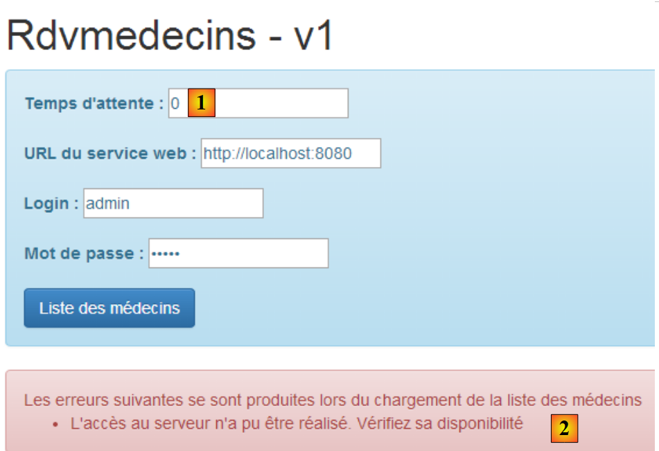 |
- In [1] geben wir 0 ein, um Verzögerungen zu vermeiden;
- in [2] erhalten wir eine Fehlermeldung, obwohl die Eingaben korrekt sind. Wir haben die verschiedenen Fehlermeldungen noch nicht behandelt. Die in [2] angezeigte Meldung ist eine allgemeine Meldung, die mit dem Fehler 0 verbunden ist, was einer Angular-Ausnahme entspricht. Angular ist auf ein Problem gestoßen, das es daran hinderte, eine HTTP-Anfrage zu stellen. In solchen Fällen müssen Sie die JavaScript-Konsolenprotokolle überprüfen. Dazu gibt es zwei Möglichkeiten:
- Drücken Sie [F12] im Chrome-Browser;
- verwenden Sie die WebStorm-Konsole;
In der WebStorm-Konsole finden wir verschiedene Meldungen, darunter diese:
- Zeile 1: Angular meldet einen Fehler, auf den wir noch zurückkommen werden;
- Zeile 2: das Protokoll für die Methode [dao.getData]. Hier gibt es einige interessante Details:
- [status] ist 0, was darauf hinweist, dass keine HTTP-Anfrage gestellt wurde. Folglich ist [statusText] leer,
- [url] entspricht [http://localhost:8080/getAllMedecins], was korrekt ist;
- der HTTP-Authentifizierungsheader [Authorization":"Basic YWRtaW46YWRtaW4=] ist ebenfalls korrekt;
Warum hat es also nicht funktioniert? Der entscheidende Satz in den Protokollen lautet [Es ist kein 'Access-Control-Allow-Origin'-Header vorhanden]. Um dies zu verstehen, bedarf es einer ausführlichen Erklärung. Beginnen wir mit einem Überblick über die allgemeine Architektur der Client/Server-Anwendung:

- Die HTML/CSS/JS-Seiten der Angular-Anwendung stammen von Server [1];
- in [2] sendet der [dao]-Dienst eine Anfrage an einen anderen Server, Server [2]. Nun, dies wird vom Browser, auf dem die Angular-Anwendung läuft, blockiert, da es sich um eine Sicherheitslücke handelt. Die Anwendung kann nur den Server abfragen, von dem sie stammt, d. h. Server [1];
Tatsächlich ist es unzutreffend zu sagen, dass der Browser die Angular-Anwendung daran hindert, Server [2] abzufragen. Er fragt diesen vielmehr an, ob er es einem Client erlaubt, der nicht aus seiner eigenen Domäne stammt, ihn abzufragen. Diese Technik der gemeinsamen Nutzung wird als CORS (Cross-Origin Resource Sharing) bezeichnet. Server [2] erteilt die Erlaubnis, indem er bestimmte HTTP-Header sendet. Da unser Server [2] diese hier nicht gesendet hat, hat der Browser die von der Anwendung angeforderte HTTP-Anfrage abgelehnt.
Kommen wir nun zu den Details. Betrachten wir den Netzwerkverkehr, der während der HTTP-Anfrage stattfand. Dazu drücken wir im Chrome-Browser [F12], um die Entwicklertools zu öffnen, und wählen die Registerkarte [Netzwerk], um den Netzwerkverkehr anzuzeigen:
 |
- In [1] wählen wir die Registerkarte [Netzwerk] aus;
- in [2] fordern wir die Liste der Ärzte an;
Auf der Registerkarte [Netzwerk] erhalten wir folgende Informationen:
 |
- in [1] die an den Server gesendeten Informationen;
- unter [2] die Antwort des Servers;
In [1] sehen wir, dass der Browser eine HTTP-[OPTIONS]-Anfrage an die angeforderte URL gesendet hat. [OPTIONS] ist neben den bekannteren Methoden [GET] und [POST] eine der HTTP-Methoden. Sie ermöglicht es, Informationen von einem Server anzufordern, insbesondere bezüglich der von ihm unterstützten HTTP-Optionen – daher der Name der Methode. Der Server antwortet in [2]. Um anzuzeigen, dass er Anfragen von Clients außerhalb seiner Domäne akzeptiert, muss er einen bestimmten Header namens [Access-Control-Allow-Origin] zurückgeben. Da er diesen Header nicht zurückgegeben hat, hat Angular den angeforderten HTTP-Aufruf nicht ausgeführt und den Fehler zurückgegeben:
XMLHttpRequest cannot load http://localhost:8080/getAllMedecins. No 'Access-Control-Allow-Origin' header is present on the requested resource. Origin 'http://localhost:63342' is therefore not allowed access.
Wir müssen daher unseren Server so anpassen, dass er den erwarteten HTTP-Header sendet.
3.7.6.6. Anpassen des Web/JSON-Servers
Wir kehren zu Eclipse zurück. Um unseren Fortschritt zu sichern, duplizieren wir die aktuelle Version des Web-/JSON-Servers [rdvmedecins-webapi-v2] in [rdvmedecins-webapi-v3] [1]:
 |
Wir nehmen eine erste Änderung in [ApplicationModel] vor, einem der Konfigurationselemente des Webdienstes:
package rdvmedecins.web.models;
...
@Component
public class ApplicationModel implements IMetier {
// the [business] layer
@Autowired
private IMetier métier;
// data from the [business] layer
private List<Medecin> médecins;
private List<Client> clients;
private List<String> messages;
// configuration data
private boolean CORSneeded = true;
...
public boolean isCORSneeded() {
return CORSneeded;
}
}
- Zeile 17: Wir erstellen eine boolesche Variable, die angibt, ob Clients von außerhalb der Serverdomäne akzeptiert werden oder nicht;
- Zeilen 21–23: die Methode zum Abrufen dieser Informationen;
Anschließend erstellen wir einen neuen Spring-MVC-Controller [3]:
 |
Die Klasse [RdvMedecinsCorsController] sieht wie folgt aus:
package rdvmedecins.web.controllers;
import javax.servlet.http.HttpServletResponse;
import org.springframework.beans.factory.annotation.Autowired;
import org.springframework.stereotype.Controller;
import org.springframework.web.bind.annotation.RequestMapping;
import org.springframework.web.bind.annotation.RequestMethod;
import rdvmedecins.web.models.ApplicationModel;
@Controller
public class RdvMedecinsCorsController {
@Autowired
private ApplicationModel application;
// sending options to the customer
private void sendOptions(HttpServletResponse response) {
if (application.isCORSneeded()) {
// set header CORS
response.addHeader("Access-Control-Allow-Origin", "*");
}
}
// list of doctors
@RequestMapping(value = "/getAllMedecins", method = RequestMethod.OPTIONS)
public void getAllMedecins(HttpServletResponse response) {
sendOptions(response);
}
}
- Zeilen 28–31: Definieren Sie einen Controller für die URL [/getAllMedecins], wenn diese mit der HTTP-Methode [OPTIONS] angefordert wird;
- Zeile 29: Die Methode [getAllMedecins] nimmt das Objekt [HttpServletResponse] als Parameter entgegen, das an den Client gesendet wird, der die Anfrage gestellt hat. Dieses Objekt wird von Spring injiziert;
- Zeile 30: Die Bearbeitung der Anfrage wird an die private Methode in den Zeilen 19–25 delegiert;
- Zeilen 15–16: Das [ApplicationModel]-Objekt wird injiziert;
- Zeilen 20–23: Wenn der Server so konfiguriert ist, dass er Clients von außerhalb seiner Domäne akzeptiert, wird der HTTP-Header gesendet:
Access-Control-Allow-Origin: *
was bedeutet, dass der Server Clients aus jeder beliebigen Domäne (*) akzeptiert.
Wir sind nun bereit für weitere Tests. Wir starten die neue Version des Webdienstes und stellen fest, dass das Problem unverändert besteht. Es hat sich nichts geändert. Wenn wir in Zeile 30 oben eine Konsolenausgabe hinzufügen, wird diese nie angezeigt, was darauf hindeutet, dass die Methode [getAllMedecins] in Zeile 29 nie aufgerufen wird.
Nach einigen Recherchen stellen wir fest, dass Spring MVC [OPTIONS]-HTTP-Anfragen selbst mit einer Standardverarbeitung behandelt. Daher antwortet immer Spring und niemals die Methode [getAllMedecins] in Zeile 29. Dieses Standardverhalten von Spring MVC kann geändert werden. Wir führen eine neue Konfigurationsklasse ein, um das neue Verhalten zu konfigurieren:
 |
Die neue Konfigurationsklasse [WebConfig] sieht wie folgt aus:
package rdvmedecins.web.config;
import org.springframework.boot.autoconfigure.EnableAutoConfiguration;
import org.springframework.context.annotation.Bean;
import org.springframework.web.servlet.DispatcherServlet;
import org.springframework.web.servlet.config.annotation.WebMvcConfigurerAdapter;
@Configuration
public class WebConfig extends WebMvcConfigurerAdapter {
// dispatcherservlet configuration for CORS headers
@Bean
public DispatcherServlet dispatcherServlet() {
DispatcherServlet servlet = new DispatcherServlet();
servlet.setDispatchOptionsRequest(true);
return servlet;
}
}
- Zeile 8: Die Klasse ist eine Spring-Konfigurationsklasse. Sie deklariert Beans, die in den Spring-Kontext aufgenommen werden;
- Zeile 12: Die Bean [dispatcherServlet] dient zur Definition des Servlets, das Client-Anfragen verarbeitet. Sie ist vom Typ [DispatcherServlet]. Dieses Servlet wird normalerweise standardmäßig erstellt. Wenn wir es selbst erstellen, können wir es anschließend konfigurieren;
- Zeile 14: Wir erstellen eine Instanz vom Typ [DispatcherServlet];
- Zeile 15: Wir weisen das Servlet an, [OPTIONS]-HTTP-Befehle an die Anwendung weiterzuleiten;
- Zeile 16: Wir geben das so konfigurierte Servlet zurück;
Wir müssen noch die Klasse [AppConfig] ändern:
package rdvmedecins.web.config;
import org.springframework.boot.autoconfigure.EnableAutoConfiguration;
import org.springframework.context.annotation.ComponentScan;
import org.springframework.context.annotation.Import;
import rdvmedecins.config.DomainAndPersistenceConfig;
@EnableAutoConfiguration
@ComponentScan(basePackages = { "rdvmedecins.web" })
@Import({ DomainAndPersistenceConfig.class, SecurityConfig.class, WebConfig.class })
public class AppConfig {
}
- Zeile 11: Die neue Konfigurationsklasse [WebConfig] wird importiert;
3.7.6.7. Anwendungstests – 2
Wir starten die neue Version des Webdienstes / JSON und versuchen, die Liste der Ärzte mit unserem Angular-Client abzurufen. Wir untersuchen den Netzwerkverkehr auf der Registerkarte [Netzwerk]:
 |
- In [1] sehen wir, dass der HTTP-Header [Access-Control-Allow-Origin: *] nun in der Antwort des Servers enthalten ist. Und doch funktioniert es immer noch nicht. Wir untersuchen die Konsolenprotokolle in [2]. Dort finden wir das folgende Protokoll:
XMLHttpRequest cannot load http://localhost:8080/getAllMedecins. Request header field Authorization is not allowed by Access-Control-Allow-Headers
Wir sehen, dass der Browser einen neuen HTTP-Header [Access-Control-Allow-Headers] erwartet, der ihm mitteilt, dass wir die Berechtigung zum Senden des Authentifizierungs-Headers haben:
Das könnte ein gutes Zeichen sein. Angular hat möglicherweise versucht, die HTTP-GET-Anfrage zu senden. Da diese Anfrage jedoch einen Authentifizierungsheader enthält, prüft es, ob der Server diesen akzeptiert.
Wir passen unseren Webserver bzw. die JSON-Datei an, um diesen Header zu senden. Die Klasse [RdvMedecinsCorsController] ändert sich wie folgt:
// sending options to the customer
private void sendOptions(HttpServletResponse response) {
if (application.isCORSneeded()) {
// set header CORS
response.addHeader("Access-Control-Allow-Origin", "*");
// we authorize the header [Authorization]
response.addHeader("Access-Control-Allow-Headers", "Authorization");
}
- In den Zeilen 6–7 wird der fehlende Header hinzugefügt.
Wir starten den Server neu und fordern die Liste der Ärzte erneut über den Angular-Client an:
 |
Diesmal hat es funktioniert. Die Konsolenprotokolle zeigen die von der Methode [dao.getData] empfangene Antwort an:
[dao] getData[/getAllMedecins] success réponse : {"data":{"status":0,"data":[{"id":1,"version":1,"titre":"Mme","nom":"PELISSIER","prenom":"Marie"},{"id":2,"version":1,"titre":"Mr","nom":"BROMARD","prenom":"Jacques"},{"id":3,"version":1,"titre":"Mr","nom":"JANDOT","prenom":"Philippe"},{"id":4,"version":1,"titre":"Melle","nom":"JACQUEMOT","prenom":"Justine"}]},"status":200,"config":{"method":"GET","transformRequest":[null],"transformResponse":[null],"timeout":1000,"url":"http://localhost:8080/getAllMedecins","headers":{"Accept":"application/json, text/plain, */*","Authorization":"Basic YWRtaW46YWRtaW4="}},"statusText":"OK"}
Wir sehen, dass:
- der Server einen Fehlercode [status=200] mit der Meldung [statusText=OK] zurückgegeben hat. Deshalb befinden wir uns in der Funktion [success];
- der Server ein [data]-Objekt mit zwei Feldern zurückgegeben hat:
- [status]: (nicht zu verwechseln mit dem HTTP-Fehlercode [status]). Hier zeigt [status=0] an, dass die URL [/getAllMedecins] fehlerfrei verarbeitet wurde;
- [data]: enthält die JSON-Liste der Ärzte;
Sehen wir uns nun einige weitere interessante Fälle an:
Wir geben falsche Anmeldedaten [login, password] ein:
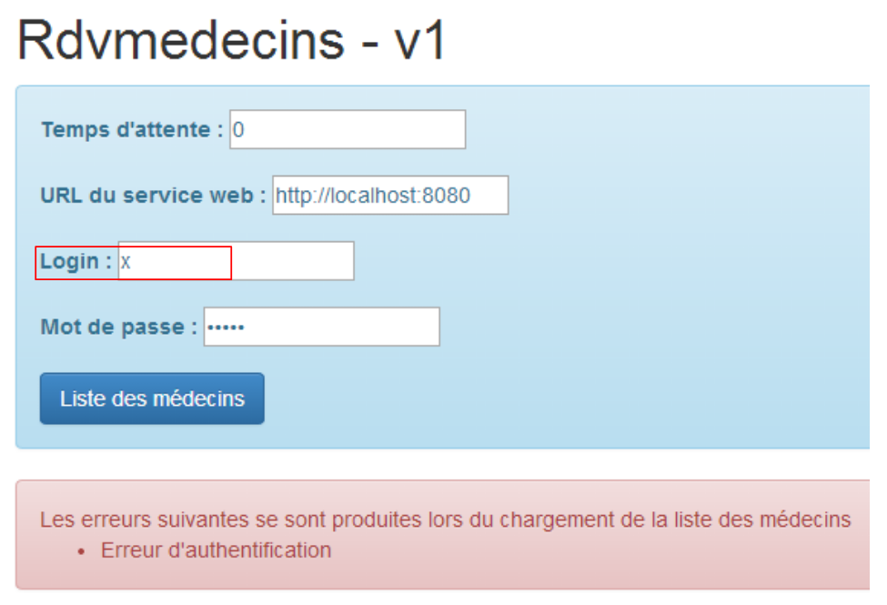 |
Wir melden uns als [user / user] an, der keinen Zugriff auf die Anwendung hat (nur [admin] hat Zugriff):
 |
Diesmal lautet die Fehlermeldung nicht mehr [Authentifizierungsfehler], sondern [Zugriff verweigert].
3.7.7. Beispiel 7: Liste der Clients
Wir verwenden die vorherige Anwendung, um die Liste der Clients in einem Dropdown-Menü vom Typ [Bootstrap select] anzuzeigen (siehe Abschnitt 3.6.6).
3.7.7.1. Ansicht V
Die anfängliche Ansicht sieht wie folgt aus:
 |
Um die Ansicht V zu erhalten, kopieren wir den Code aus [app-16.html] in [app-17.html] und ändern ihn wie folgt:
<div class="container" >
<h1>Rdvmedecins - v1</h1>
<!-- the waiting message -->
<div class="alert alert-warning" ng-show="waiting.visible" >
...
</div>
<!-- the request -->
<div class="alert alert-info" ng-hide="waiting.visible" >
...
<button class="btn btn-primary" ng-click="execute()">{{clients.title|translate}}</button>
</div>
<!-- customer list -->
<div class="row" style="margin-top: 20px" ng-show="clients.show">
<div class="col-md-3">
<h2 translate="{{clients.title}}"></h2>
<select data-style="btn-primary" class="selectpicker">
<option ng-repeat="client in clients.data" value="{{client.id}}">
{{client.titre}} {{client.prenom}} {{client.nom}}
</option>
</select>
</div>
</div>
<!-- the error list -->
<div class="alert alert-danger" ng-show="errors.show">
...
</div>
</div>
....
<script type="text/javascript" src="rdvmedecins-05.js"></script>
- Zeilen 5–7: Das Ladebanner ändert sich nicht;
- Zeilen 10–13: Das Formular ändert sich nicht, mit Ausnahme der Beschriftung der Schaltfläche (Zeile 12);
- Zeilen 28–30: Das Fehlerbanner ändert sich nicht;
- Zeilen 16–25: Kunden werden in einer Dropdown-Liste angezeigt, deren Stil durch die Komponente [Bootstrap-selectpicker] vorgegeben wird (Attribute „data-style“ und „class“, Zeile 19);
- Zeile 20: Die [ng-repeat]-Direktive wird verwendet, um die verschiedenen Optionen in der Dropdown-Liste zu generieren. Beachten Sie, dass die Bezeichnung einer Option vom Typ [Mme Julienne Tatou] ist und der Wert der Option vom Typ [100], wobei 100 die ID des angezeigten Kunden ist;
- Zeile 34: Der JavaScript-Code wird in eine neue Datei [rdvmedecins-05] verschoben;
3.7.7.2. Der C-Controller und das M-Modell
Der JavaScript-Code in der Datei [rdvmedecins-05] wird aus der Datei [rdvmedecins-04] kopiert:

Es hat sich fast nichts geändert, außer im Controller, der nun so angepasst wurde, dass er die Liste der Kunden bereitstellt:
angular.module("rdvmedecins")
.controller('rdvMedecinsCtrl', ['$scope', 'utils', 'config', 'dao', '$translate',
function ($scope, utils, config, dao, $translate) {
// ------------------- model initialization
// model
$scope.waiting = {text: config.msgWaiting, visible: false, cancel: cancel, time: undefined};
$scope.waitingTimeText = config.waitingTimeText;
$scope.server = {url: undefined, login: undefined, password: undefined};
$scope.clients = {title: config.listClients, show: false, model: {}};
$scope.errors = {show: false, model: {}};
$scope.urlServerLabel = config.urlServerLabel;
$scope.loginLabel = config.loginLabel;
$scope.passwordLabel = config.passwordLabel;
// asynchronous task
var task;
// execution action
$scope.execute = function () {
// the UI is updated
$scope.waiting.visible = true;
$scope.clients.show = false;
$scope.errors.show = false;
// simulated waiting
task = utils.waitForSomeTime($scope.waiting.time);
var promise = task.promise;
// waiting
promise = promise.then(function () {
// we ask for the customer list;
task = dao.getData($scope.server.url, $scope.server.login, $scope.server.password, config.urlSvrClients);
return task.promise;
});
// analyze the result of the previous call
promise.then(function (result) {
// result={err: 0, data: [client1, client2, ...]}
// result={err: n, messages: [msg1, msg2, ...]}
if (result.err == 0) {
// we put the acquired data into the model
$scope.clients.data = result.data;
// the UI is updated
$scope.clients.show = true;
$scope.waiting.visible = false;
// style the drop-down list
$('.selectpicker').selectpicker();
} else {
// there were errors in obtaining the customer list
$scope.errors = { title: config.getClientsErrors, messages: utils.getErrors(result), show: true, model: {}};
// the UI is updated
$scope.waiting.visible = false;
}
});
};
// cancel wait
function cancel() {
// complete the task
task.reject();
// the UI is updated
$scope.waiting.visible = false;
$scope.clients.show = false;
$scope.errors.show = false;
}
}
])
;
- Am Controller hat sich kaum etwas geändert. Früher lieferte er eine Liste von Ärzten. Jetzt liefert er eine Liste von Kunden;
- Zeile 9: [$scope.clients] wird das Modell für das Kundenbanner in der V-Ansicht sein;
- Zeile 30: Die URL [/getAllClients] wird nun verwendet;
- Zeilen 35–36: die beiden Antwortformate, die von der Methode [dao.getData] zurückgegeben werden. Wir haben nun Kunden statt Ärzte;
- Zeile 44: eine in Angular-Code eher seltene Anweisung. Wir manipulieren das DOM (Document Object Model) direkt. Hier wollen wir die Methode [selectpicker] (Teil von [bootstrap-select.min.js]) auf die DOM-Elemente anwenden, die die Klasse [selectpicker] haben [$('.selectpicker)']. Es gibt nur eines: die Dropdown-Liste:
<select data-style="btn-primary" class="selectpicker" select-enable="">
....
</select>
In Abschnitt 3.6.6 haben wir gesehen, dass dies die Dropdown-Liste wie folgt formatiert hat:
 |  |
Wie bei den Ärzten müssen wir auch hier den Webdienst anpassen.
3.7.7.3. Anpassung des Webdienstes – 1
 |
Die Klasse [RdvMedecinsController] wurde um eine neue Methode erweitert:
package rdvmedecins.web.controllers;
...
@Controller
public class RdvMedecinsCorsController {
@Autowired
private ApplicationModel application;
// sending options to the customer
private void sendOptions(HttpServletResponse response) {
if (application.isCORSneeded()) {
// set header CORS
response.addHeader("Access-Control-Allow-Origin", "*");
// we authorize the header [Authorization]
response.addHeader("Access-Control-Allow-Headers", "Authorization");
}
}
// list of doctors
@RequestMapping(value = "/getAllMedecins", method = RequestMethod.OPTIONS)
public void getAllMedecins(HttpServletResponse response) {
sendOptions(response);
}
// customer list
@RequestMapping(value = "/getAllClients", method = RequestMethod.OPTIONS)
public void getAllClients(HttpServletResponse response) {
sendOptions(response);
}
}
- Zeilen 29–32: Die Methode [getAllClients] verarbeitet die vom Browser an sie gesendete [OPTIONS]-HTTP-Anfrage;
3.7.7.4. Anwendungstests – 1
Wir sind nun bereit für den Test. Wir starten den Webserver und geben dann gültige Werte in das Angular-Formular ein. Wir erhalten die folgende Antwort:
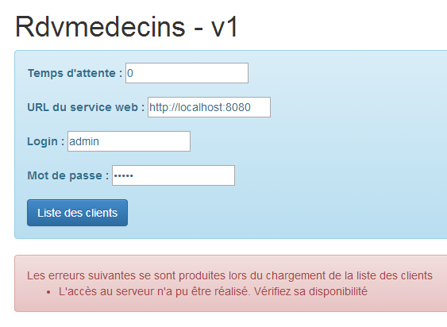
Diese Fehlermeldung wird angezeigt, wenn Angular die angeforderte HTTP-Anfrage nicht ausführen konnte. Wir müssen dann in den Konsolenprotokollen nach den Ursachen suchen. Dort finden wir folgende Meldung:
XMLHttpRequest cannot load http://localhost:8080/getAllClients. No 'Access-Control-Allow-Origin' header is present on the requested resource. Origin 'http://localhost:63342' is therefore not allowed access.
Ein Problem, von dem wir dachten, es sei gelöst. Schauen wir uns nun den aufgetretenen Netzwerkverkehr an:

Wir sehen, dass der [getAllClients]-Vorgang mit der HTTP-Methode [OPTIONS] erfolgreich war, der [getAllClients]-Vorgang mit der HTTP-Methode [GET] jedoch abgebrochen wurde. Die Antwort auf die [OPTIONS]-Anfrage lautete wie folgt:

Die CORS-HTTP-Header sind tatsächlich vorhanden. Sehen wir uns nun den HTTP-Austausch während der GET-Anfrage an:

Die HTTP-Anfrage scheint korrekt zu sein. Insbesondere können wir den Authentifizierungs-Header erkennen.
Zusätzlich zur vorherigen Fehlermeldung erscheint folgende Meldung in den Konsolenprotokollen:
[dao] getData[/getAllClients] error réponse : {"data":"","status":0,"config":{"method":"GET","transformRequest":[null],"transformResponse":[null],"timeout":1000,"url":"http://localhost:8080/getAllClients","headers":{"Accept":"application/json, text/plain, */*","Authorization":"Basic YWRtaW46YWRtaW4="}},"statusText":""}
Dies ist das Protokoll, das die Methode [dao.getData] systematisch generiert, sobald sie die Antwort auf ihre HTTP-Anfrage erhält. Zwei Dinge fallen dabei besonders auf:
- [status=0]: Das bedeutet, dass Angular die HTTP-Anfrage abgebrochen hat;
- [method=GET]: und es war die GET-Anfrage, die abgebrochen wurde;
In Verbindung mit der ersten Meldung bedeutet dies, dass Angular auch für die GET-Anfrage CORS-Header erwartet. Derzeit sendet unser Webservice diese jedoch nur für die [OPTIONS]-HTTP-Anfrage. Es ist sehr seltsam, dass dieser Fehler jetzt auftritt und nicht bei der Liste der Ärzte. Ich habe keine Erklärung dafür.
Wir müssen den Webservice daher erneut anpassen.
3.7.7.5. Änderung des Webdienstes – 2
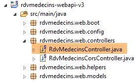 |
Die Methoden [GET] und [POST] werden in der Klasse [RdvMedecinsController] verarbeitet. Wir müssen diese so anpassen, dass diese Methoden die CORS-Header senden. Dazu gehen wir wie folgt vor:
@RestController
public class RdvMedecinsController {
@Autowired
private ApplicationModel application;
@Autowired
private RdvMedecinsCorsController rdvMedecinsCorsController;
...
// customer list
@RequestMapping(value = "/getAllClients", method = RequestMethod.GET)
public Reponse getAllClients(HttpServletResponse response) {
// headers CORS
rdvMedecinsCorsController.getAllClients(response);
// application status
if (messages != null) {
return new Reponse(-1, messages);
}
// customer list
try {
return new Reponse(0, application.getAllClients());
} catch (Exception e) {
return new Reponse(1, Static.getErreursForException(e));
}
}
...
- Zeile 8: Wir möchten den Code wiederverwenden, den wir im Controller [RdvMedecinsCorsController] platziert haben. Deshalb injizieren wir ihn hier;
- Zeile 14: Die Methode, die die Anfrage [GET /getAllClients] verarbeitet. Wir nehmen zwei Änderungen vor:
- Zeile 14: Wir injizieren das [HttpServletResponse]-Objekt in die Methodenparameter,
- Zeile 16: Wir verwenden die Methoden der Klasse [RdvMedecinsCorsController], um die CORS-Header in diesem Objekt zu setzen;
3.7.7.6. Anwendungstests – 2
Wir starten die neue Version des Webdienstes und fordern erneut die Liste der Kunden an. Wir erhalten folgende Antwort:
 |
- in [1] erhalten wir zwar eine Antwort, diese ist jedoch leer [2];
- in [3]: Der Datenaustausch verlief reibungslos;
In den Konsolenprotokollen zeigte die Methode [dao.getData] die empfangene Antwort an:
[dao] getData[/getAllClients] success réponse : {"data":{"status":0,"data":[{"id":1,"version":1,"titre":"Mr","nom":"MARTIN","prenom":"Jules"},{"id":2,"version":1,"titre":"Mme","nom":"GERMAN","prenom":"Christine"},{"id":3,"version":1,"titre":"Mr","nom":"JACQUARD","prenom":"Jules"},{"id":4,"version":1,"titre":"Melle","nom":"BISTROU","prenom":"Brigitte"}]},"status":200,"config":{"method":"GET","transformRequest":[null],"transformResponse":[null],"timeout":1000,"url":"http://localhost:8080/getAllClients","headers":{"Accept":"application/json, text/plain, */*","Authorization":"Basic YWRtaW46YWRtaW4="}},"statusText":"OK"}
Die Methode hat also tatsächlich die Liste der Kunden erhalten. Nachdem der Code überprüft wurde, kommen wir zu dem Verdacht, dass die folgende Anweisung, die wir nicht ganz verstehen, die Ursache sein könnte:
// on style la liste déroulante
$('.selectpicker').selectpicker();
Wir kommentieren Zeile 2 aus und versuchen es erneut. Daraufhin erhalten wir folgende Antwort:
 |
Wir haben das Problem somit lokalisiert. Es ist die Anwendung der [selectpicker]-Methode auf die Dropdown-Liste, die das Problem verursacht. Wenn wir uns den Quellcode der Seite mit dem Fehler ansehen, sehen wir Folgendes:
 |
- Wir stellen fest, dass an [1] die Dropdown-Liste zwar mit ihren Elementen vorhanden ist, aber nicht angezeigt wird [style='display:none'];
- An [2] wird die Schaltfläche [bootstrap select] angezeigt. Die Elemente der Dropdown-Liste sollten in der Liste <ul role='menu'> erscheinen. Da sie dort nicht vorhanden sind, haben wir eine leere Liste. Es scheint, dass der Inhalt der Dropdown-Liste zu dem Zeitpunkt, als die Methode [selectpicker] auf sie angewendet wurde, leer war;
Bei der Suche im Internet nach einer Lösung sind wir auf diese hier gestoßen. Wir ersetzen den Code:
// on style la liste déroulante
$('.selectpicker').selectpicker();
mit folgendem:
// on style la liste déroulante
$timeout(function(){
$('.selectpicker').selectpicker();
});
Der Stil [bootstrap-select] wird über eine [$timeout]-Funktion angewendet. Wir sind dieser Funktion bereits begegnet; sie ermöglicht die Ausführung einer Funktion nach einer bestimmten Verzögerung. Hier bedeutet das Fehlen einer Verzögerung eine Verzögerung von Null. Die vorangehenden Zeilen fügen ein Ereignis in die Ereigniswarteschlange des Browsers ein. Sobald die Verarbeitung des aktuellen Ereignisses (Klick auf die Schaltfläche [Client List]) abgeschlossen ist, wird die V-Ansicht angezeigt. Unmittelbar danach überprüft der Browser seine Ereignisliste. Aufgrund der Verzögerung von Null steht das [$timeout]-Ereignis ganz oben in der Liste und wird verarbeitet. Der Stil [bootstrap-select] wird dann auf eine gefüllte Dropdown-Liste angewendet. Sehen wir uns das Ergebnis an:
 |
Wenn wir uns den Quellcode der angezeigten Seite noch einmal ansehen, sehen wir Folgendes:
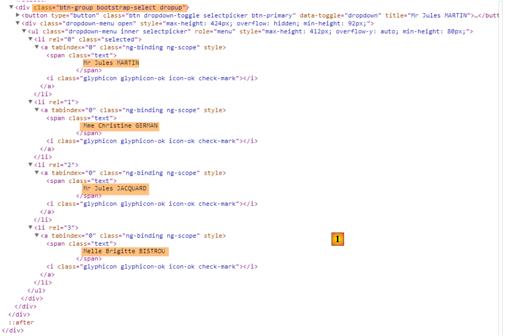 |
Die Schaltfläche [bootstrap-select], die zuvor leer war, enthält nun die Liste der Clients.
3.7.7.7. Verwendung einer Direktive
Im C-Controller der V-Ansicht stießen wir auf den folgenden Code:
// on style la liste déroulante
$('.selectpicker').selectpicker();
Wir manipulieren ein DOM-Objekt. Viele Angular-Entwickler scheuen sich davor, das DOM innerhalb des Controller-Codes zu manipulieren. Für sie sollte dies in einer Direktive erfolgen. Eine Angular-Direktive kann als Erweiterung der HTML-Sprache betrachtet werden. Dies ermöglicht es, neue HTML-Elemente oder -Attribute zu erstellen. Schauen wir uns ein erstes Beispiel an:
Wir erstellen die folgende JS-Datei [selectEnable]:
angular.module("rdvmedecins").directive('selectEnable', ['$timeout', function ($timeout) {
return {
link: function (scope, element, attrs) {
$timeout(function () {
var selectpicker = $('.selectpicker');
selectpicker.selectpicker();
});
}
};
}]);
- Die Anweisung folgt der uns mittlerweile vertrauten Controller-Syntax:
angular.module("rdvmedecins").directive('selectEnable', ['$timeout', function ($timeout)
Die Direktive gehört zum Modul [rvmedecins]. Es handelt sich um eine Funktion, die zwei Parameter akzeptiert:
- (Fortsetzung)
- Der erste ist der Name der Direktive [selectEnable];
- der zweite ist ein Array ['obj1','obj2',..., function(obj1, obj2,...)], wobei die [obj] die Objekte sind, die in die Funktion injiziert werden sollen. Hier ist das einzige injizierte Objekt das vordefinierte Objekt [$timeout];
- Die Funktion [directive] gibt ein Objekt zurück, das verschiedene Attribute haben kann. Hier ist das einzige Attribut das Attribut [link] (Zeile 3). Sein Wert ist hier eine Funktion, die drei Parameter entgegennimmt:
- scope: das Modell der Ansicht, in der die Direktive verwendet wird;
- element: das View-Element, das Ziel der Direktive;
- attrs: die Attribute dieses Elements;
Schauen wir uns ein Beispiel an. Die [selectEnable]-Direktive könnte im folgenden Kontext verwendet werden:
Im obigen Beispiel wendet das Attribut [select-enable] die Direktive [selectEnable] auf das HTML-Element <div> an. Eine [doSomething]-Direktive kann auf jedes HTML-Element angewendet werden, indem man ihm das Attribut [do-something] hinzufügt. Beachten Sie den Unterschied in der Schreibweise zwischen dem Namen der Direktive und dem zugehörigen Attribut. Wir wechseln von [camelCase] zu [camel-case].
Die Direktive [selectEnable] könnte auch wie folgt verwendet werden:
Hier wird die [doSomething]-Direktive in Form eines HTML-Tags <do-something> angewendet.
Kehren wir zur Syntax zurück
und zu den drei Parametern der [link]-Funktion der Direktive, [scope, element, attrs]:
- scope: ist das Modell der Ansicht, in der sich das <div> befindet;
- element: ist das <div> selbst;
- attrs: ist das Array der Attribute für das <div>. Diese können verwendet werden, um Informationen an die Direktive zu übergeben. Im obigen Beispiel schreiben wir attrs['selectEnable'], um die [data]-Informationen abzurufen. Beachten Sie die Änderung in der Notation [selectEnable], um auf das Attribut [select-enable] zu verweisen;
Kehren wir zum Code der Direktive zurück:
angular.module("rdvmedecins").directive('selectEnable', ['$timeout', function ($timeout) {
return {
link: function (scope, element, attrs) {
$timeout(function () {
$('.selectpicker').selectpicker();
});
}
};
}]);
- Zeilen 14–16: Hier sehen wir den Code, den wir zuvor im Controller platziert haben. Dieser Code wird ausgeführt, wenn beim Rendern der V-Ansicht auf die Anweisung [select-enable] (als Element oder Attribut) gestoßen wird.
Um diese Direktive zu implementieren, kopieren wir die Datei [app-17.html] in [app-17B.html] und ändern sie wie folgt:
<select data-style="btn-primary" class="selectpicker" select-enable="">
<option ng-repeat="client in clients.data" value="{{client.id}}">
{{client.titre}} {{client.prenom}} {{client.nom}}
</option>
</select>
- Zeile 1: Wir wenden die Direktive [selectEnable] auf das HTML-Element [select] an. Da keine Informationen an die Direktive übergeben werden müssen, schreiben wir einfach [select-enable=""] ;
Außerdem ändern wir den Controller, indem wir die JS-Datei [rdvmedecins-05.js] in [rdvmedecins-05B.js] duplizieren und in der Datei [app-17B.html] sowie in der Direktivendatei [selectEnable.js] auf die neue JS-Datei verweisen. Vergessen Sie diesen letzten Punkt nicht. Wenn die Direktivendatei fehlt, wird das Attribut [select-enable=""] nicht verarbeitet, aber Angular meldet keine Fehler.
<script type="text/javascript" src="rdvmedecins-05B.js"></script>
<script type="text/javascript" src="selectEnable.js"></script>
In der JS-Datei [rdvmedecins-05B.js] entfernen wir die folgenden Zeilen aus dem Controller:
// on style la liste déroulante
$timeout(function(){
$('.selectpicker').selectpicker();
});
Dieser Vorgang wird nun von der Direktive übernommen.
3.7.7.8. Anwendungstests – 3
Beim Testen der neuen Anwendung [app-17B.html] wird das folgende Ergebnis erzielt:
 |
- In [1] erhalten wir eine leere Liste.
Die Konsolenausgaben zeigen Folgendes an:
- Zeile 1: Initialisierung des [dao]-Dienstes;
- Zeile 2: Bei der ersten Anzeige der Ansicht V wird die Anweisung [selectEnable] ausgeführt;
- Zeile 3: Diese Zeile erscheint, wenn der Benutzer auf die Schaltfläche [Client List] klickt. Wir sehen, dass die Anweisung [selectEnable] kein zweites Mal ausgeführt wird. Letztendlich wurde sie ausgeführt, als die Client-Liste leer war, daher haben wir eine leere Dropdown-Liste;
Mit anderen Worten: „ “ ist die Operation:
$('.selectpicker').selectpicker();
nicht zum richtigen Zeitpunkt ausgeführt wurde. Wir können versuchen, das Problem auf verschiedene Weise zu lösen. Nach zahlreichen erfolglosen Tests stellen wir fest, dass der oben genannte Vorgang nur einmal und nur dann ausgeführt werden darf, wenn die Dropdown-Liste bereits gefüllt ist. Um dieses Ergebnis zu erzielen, schreiben wir das <select>-Tag wie folgt um:
<select data-style="btn-primary" class="selectpicker" select-enable="" ng-if="clients.data">
<option ng-repeat="client in clients.data" value="{{client.id}}">
{{client.titre}} {{client.prenom}} {{client.nom}}
</option>
</select>
Zeile 1: Das <select>-Tag wird nur generiert, wenn [clients.data] vorhanden ist. Dies ist nicht der Fall, wenn die Ansicht V zunächst angezeigt wird. Daher wird das <select>-Tag nicht generiert und die [selectEnable]-Direktive nicht ausgewertet. Wenn der Benutzer auf die Schaltfläche [Client-Liste] klickt, erhält [clients.data] einen neuen Wert im M-Modell. Da sich das M-Modell geändert hat, wird das <select>-Tag hier neu ausgewertet und generiert. Die [selectEnable]-Direktive wird daher ebenfalls ausgewertet. Zum Zeitpunkt der Auswertung sind die Zeilen 2–4 des <select>-Tags noch nicht ausgewertet worden. Wir haben daher eine leere Liste von Clients. Wenn wir die [selectEnable]-Direktive wie folgt schreiben:
angular.module("rdvmedecins").directive('selectEnable', ['$timeout', 'utils', function ($timeout, utils) {
return {
link: function (scope, element, attrs) {
utils.debug("directive selectEnable");
$('.selectpicker').selectpicker();
}
}
}]);
Zeile 5 wird mit einer leeren Liste ausgeführt, und wir sehen dann eine leere Dropdown-Liste auf dem Bildschirm. Wir müssen daher schreiben:
angular.module("rdvmedecins").directive('selectEnable', ['$timeout', 'utils', function ($timeout, utils) {
return {
link: function (scope, element, attrs) {
utils.debug("directive selectEnable");
$timeout(function () {
$('.selectpicker').selectpicker();
})
}
}
}]);
um das erwartete Ergebnis zu erhalten. Aufgrund des [$timeout] in Zeile 5 wird Zeile 6 erst ausgeführt, nachdem die V-Ansicht vollständig gerendert wurde, d. h. zu einem Zeitpunkt, zu dem das <select>-Tag über alle seine Elemente verfügt.
3.7.8. Beispiel 8: Der Terminplan eines Arztes
Wir stellen nun eine Anwendung vor, die den Terminplan eines Arztes anzeigt.
3.7.8.1. Die Ansicht V der Anwendung
Wir stellen das folgende Formular vor:
 |
- In [1] fragen wir den Terminplan von Frau PELISSIER [2] für den 25. Juni 2014 [3] ab;
Es ergibt sich folgendes Ergebnis [4]:
 |
Wir werden die beiden Ansichten getrennt betrachten.
3.7.8.2. Das Formular
Wir duplizieren die Datei [app-17.html] als [app-18.html] und ändern den Code dann wie folgt:
<div class="container">
<h1>Rdvmedecins - v1</h1>
<!-- the waiting message -->
<div class="alert alert-warning" ng-show="waiting.visible">
...
</div>
<!-- the request -->
<div class="alert alert-info" ng-hide="waiting.visible">
<div class="row" style="margin-bottom: 20px">
<div class="col-md-3">
<h2 translate="{{medecins.title}}"></h2>
<select data-style="btn-primary" class="selectpicker">
<option ng-repeat="medecin in medecins.data" value="{{medecin.id}}">
{{medecin.titre}} {{medecin.prenom}} {{medecin.nom}}
</option>
</select>
</div>
<div class="col-md-3">
<h2 translate="{{calendar.title}}"></h2>
<div style="display:inline-block; min-height:290px;">
<datepicker ng-model="calendar.jour" min-date="calendar.minDate" show-weeks="true"
class="well well-sm"></datepicker>
</div>
</div>
</div>
<button class="btn btn-primary" ng-click="execute()">{{agenda.title|translate}}</button>
</div>
<!-- the error list -->
<div class="alert alert-danger" ng-show="errors.show">
...
</div>
<!-- the diary -->
<div id="agenda" ng-show="agenda.show">
...
</div>
</div>
...
<script type="text/javascript" src="rdvmedecins-06.js"></script>
- Zeilen 5–7: Die Lademeldung ändert sich nicht;
- Zeilen 12–19: die Liste der Ärzte unter Verwendung der [bootstrap select]-Komponente;
- Zeilen 20–26: der [ui-bootstrap]-Kalender, den wir bereits vorgestellt haben. Beachten Sie, dass der ausgewählte Tag im [calendar.day]-Modell (ng-model-Attribut) abgelegt wird;
- Zeile 28: die Schaltfläche, die den Kalender anfordert;
- Zeilen 32–34: Die Fehlerliste bleibt unverändert;
- Zeilen 37–39: der Kalender, den wir später vorstellen werden;
- Zeile 42: Der JS-Code wird durch Kopieren der Datei [rdvmedecins-05.js] in die Datei [rdvmedecins-06.js] übertragen;
3.7.8.3. Der C-Controller
Der JS-Code der Anwendung sieht nun wie folgt aus:

Von den Änderungen sind nur der [utils]-Dienst und der [rdvMedecinsCtrl]-Controller betroffen.
Der [rdvMedecinsCtrl]-Controller sieht nun wie folgt aus:
// controller
angular.module("rdvmedecins")
.controller('rdvMedecinsCtrl', ['$scope', 'utils', 'config', 'dao', '$translate', '$timeout', '$filter', '$locale',
function ($scope, utils, config, dao, $translate, $timeout, $filter, $locale) {
// ------------------- model initialization
// model
$scope.waiting = {text: config.msgWaiting, visible: false, cancel: cancel, time: 3000};
$scope.server = {url: 'http://localhost:8080', login: 'admin', password: 'admin'};
$scope.errors = {show: false, model: {}};
$scope.medecins = {
data: [
{id: 1, version: 1, titre: "Mme", nom: "PELISSIER", prenom: "Marie"},
{id: 2, version: 1, titre: "Mr", nom: "BROMARD", prenom: "Jacques"},
{id: 3, version: 1, titre: "Mr", nom: "JANDOT", prenom: "Philippe"},
{id: 4, version: 1, titre: "Melle", nom: "JACQUEMOT", prenom: "Justine"}
],
title: config.listMedecins};
$scope.agenda = {title: config.getAgendaTitle, data: undefined, show: false};
$scope.calendar = {title: config.getCalendarTitle, minDate: new Date(), jour: new Date()};
// style the drop-down list
$timeout(function () {
$('.selectpicker').selectpicker();
});
// for the French local calendar
angular.copy(config.locales['fr'], $locale);
...
}
])
;
- Zeile 7: Wir legen eine Zeitüberschreitung von 3 Sekunden fest, bevor die HTTP-Anfrage gestellt wird;
- Zeile 8: Die für die HTTP-Verbindung erforderlichen Elemente sind fest codiert;
- Zeilen 10–17: Die Liste der Ärzte ist fest codiert;
- Zeile 18: Das Modell [agenda] konfiguriert die Darstellung des Kalenders in der Ansicht;
- Zeile 19: Das [calendar]-Modell konfiguriert die Kalenderanzeige in der Ansicht. Wir setzen das Mindestdatum [minDate] auf heute und das aktuelle Datum ebenfalls auf heute;
- Zeilen 21–23: Die Dropdown-Liste wird mit der zuvor beschriebenen Methode gestaltet;
- Zeile 25: Wir setzen die Anwendungssprache auf „fr“. Standardmäßig ist sie „en“;
Die Methode, die bei der Abfrage des Kalenders ausgeführt wird, lautet wie folgt:
// exécution action
$scope.execute = function () {
// les infos du formulaire
var idMedecin = $('.selectpicker').selectpicker('val');
// vérification
utils.debug("[homeCtrl] idMedecin", idMedecin);
utils.debug("[homeCtrl] jour", $scope.calendar.jour);
// on met le jour au format yyyy-MM-dd
var formattedJour = $filter('date')($scope.calendar.jour, 'yyyy-MM-dd');
// mise à jour de la vue
$scope.waiting.visible = true;
$scope.errors.show = false;
$scope.agenda.show = false;
...
};
- Zeile 4: Wir rufen das Attribut [value] des ausgewählten Arztes ab. Auch hier verwenden wir wieder die Methode [selectpicker] aus der Datei [bootstrap-select.min.js]. Beachten Sie das Format der Optionen in der Dropdown-Liste:
<option ng-repeat="medecin in medecins.data" value="{{medecin.id}}">
{{medecin.titre}} {{medecin.prenom}} {{medecin.nom}}
Der Wert (value-Attribut) der Option ist somit die [id] des Arztes.
- Zeile 11: Wir formatieren das vom Benutzer ausgewählte Datum als [yyyy-mm-dd], was dem vom Webserver erwarteten Datumsformat entspricht;
- Zeilen 13–15: Wenn die Methode [execute] beendet ist, wird der Ladebanner angezeigt und alles andere ausgeblendet;
Der Code setzt sich wie folgt fort:
// simulated waiting
var task = utils.waitForSomeTime($scope.waiting.time);
// we ask for the doctor's diary
var promise = task.promise.then(function () {
// the URL service path
var path = config.urlSvrAgenda + "/" + idMedecin + "/" + formattedJour;
// we ask for the agenda
task = dao.getData($scope.server.url, $scope.server.login, $scope.server.password, path);
// we return the promise of task completion
return task.promise;
});
// we analyze the result of the call to service [dao]
promise.then(function (result) {
// end of wait
$scope.waiting.visible = false;
// mistake?
if (result.err == 0) {
// we prepare the agenda model
$scope.agenda.data = result.data;
$scope.agenda.show = true;
// timetable display formatting
angular.forEach($scope.agenda.data.creneauxMedecin, function (creneauMedecin) {
creneauMedecin.creneau.text = utils.getTextForCreneau(creneauMedecin.creneau);
});
// we create an evt to style the table after the view is displayed
$timeout(function () {
$("#creneaux").footable();
});
} else {
// mistakes were made in obtaining the agenda
$scope.errors = {
title: config.getAgendaErrors,
messages: utils.getErrors(result),
show: true
};
}
- Zeile 2: die asynchrone Aufgabe, die 3 Sekunden lang wartet;
- Zeilen 5–10: der Code, der ausgeführt wird, wenn diese Wartezeit abgelaufen ist;
- Zeile 6: Die angeforderte URL wird aufgebaut [/getAgendaMedecinJour/1/2014-06-25];
- Zeile 8: Die URL wird abgefragt. Eine asynchrone Aufgabe wird gestartet;
- Zeile 10: Wir machen diese Aufgabe asynchron;
- Zeilen 14–38: Der Code, der ausgeführt wird, sobald die HTTP-Anfrage ihre Antwort zurückgegeben hat;
- Zeile 13: [result] ist die von der Methode [dao.getData] gesendete Antwort. Hier müssen wir das Format der Antwort des Webservers beachten:
 |
Der Parameter [result.data] in Zeile 19 ist das oben erwähnte Attribut [data] [1]. Dieses Attribut enthält wiederum das oben erwähnte Attribut [creneauxMedecin] [2]. Dabei handelt es sich um ein Array von Zeitfenstern, von denen jedes zwei Informationen enthält:
- [rv]: die JSON-Darstellung eines Termins oder [null], wenn für diesen Zeitblock kein Termin geplant wurde;
- [hDeb, mDeb, hFin, mFin]: die Zeitangaben für den Zeitblock;
Kehren wir zum Controller-Code zurück:
- Zeile 15: Das Warten hat ein Ende;
- Zeile 19: Wir füllen das Modell [$scope.agenda], das die Anzeige des Kalenders steuert;
- Zeile 20: Der Kalender wird sichtbar gemacht;
- Zeilen 22–24: Wir durchlaufen jedes C-Element im soeben besprochenen Array [creneauxMedecin];
- Zeile 23: Jedes Element C verfügt über ein Attribut [slot], das den Zeitblock darstellt. Dieses wird durch ein [text]-Attribut ergänzt, das die textuelle Darstellung des Zeitblocks im Format [10:20–10:40] enthält;
- Zeilen 26–28: Wir machen die HTML-Tabelle, die zur Anzeige der Kalender-Slots verwendet wird, responsiv. Dieses Konzept haben wir in Abschnitt 3.6.7 behandelt;
 |
- Zeile 27: Um die Tabelle responsiv zu gestalten, müssen wir die Methode [footable] auf sie anwenden. Hier stoßen wir auf dieselbe Schwierigkeit wie bei der Komponente [bootstrap-select]. Wenn wir einfach Zeile 17 schreiben, sehen wir, dass die Tabelle nicht responsiv ist. Wir lösen dieses Problem auf dieselbe Weise mithilfe der Funktion [$timeout] (Zeile 26);
- Zeilen 31–34: Der Fall, in dem die HTTP-Anfrage fehlgeschlagen ist. In diesem Fall werden Fehlermeldungen angezeigt;
3.7.8.4. Anzeigen des Kalenders
Wir kehren nun zum Kalendercode in der Datei [app-18.html] zurück. Er lautet wie folgt:
<!-- the diary -->
<div id="agenda" ng-show="agenda.show">
<!-- case of a doctor without consultation slots -->
<h4 class="alert alert-danger" ng-if="agenda.data.creneauxMedecin.length==0"
translate="agenda_medecinsanscreneaux"></h4>
<!-- doctor's diary -->
<div class="row tab-content alert alert-warning" ng-if="agenda.data.creneauxMedecin.length!=0">
<div class="tab-pane active col-md-6">
<table creneaux-table id="creneaux" class="table">
<thead>
<tr>
<th data-toggle="true">
<span translate="agenda_creneauhoraire"></span>
</th>
<th>
<span translate="agenda_client">Client</span>
</th>
<th data-hide="phone">
<span translate="agenda_action">Action</span>
</th>
</tr>
</thead>
<tbody>
<tr ng-repeat="creneauMedecin in agenda.data.creneauxMedecin">
<td>
<span
ng-class="! creneauMedecin.rv ? 'status-metro status-active' : 'status-metro status-suspended'">
{{creneauMedecin.creneau.text}}
</span>
</td>
<td>
<span>{{creneauMedecin.rv.client.titre}} {{creneauMedecin.rv.client.prenom}} {{creneauMedecin.rv.client.nom}}</span>
</td>
<td>
<a href="" ng-if="!creneauMedecin.rv" translate="agenda_reserver" class="status-metro status-active">
</a>
<a href="" ng-if="creneauMedecin.rv" translate="agenda_supprimer" class="status-metro status-suspended">
</a>
</td>
</tr>
</tbody>
</table>
</div>
</div>
</div>
- Zeilen 4–5: Zur Erinnerung: [agenda.data] ist der Kalender, und [agenda.data.creneauxMedecin] ist ein Array von Objekten vom Typ [creneauMedecin]. Jedes Element dieses Typs verfügt über ein Attribut [creneauMedecin.creneau], das einen Zeitblock darstellt. Jeder Zeitblock enthält zwei für uns relevante Elemente:
- [doctorSlot.slot.appointment], also der für den Zeitfenster geplante Termin (falls vorhanden; appointment ≠ null);
- [doctorSlot.slot.text], der [start:end]-Text des Zeitfensters;
- Zeile 4: Zeigt eine spezielle Meldung an, wenn der Arzt keine Zeitfenster hat. Dies ist zwar unwahrscheinlich, aber es stellt sich heraus, dass unsere Datenbank unvollständig ist und dieses Szenario tatsächlich auftritt. Ob die Meldung in HTML gerendert wird oder nicht, wird durch die [ng-if]-Direktive gesteuert;

Die [ng-if]-Direktive unterscheidet sich von den [ng-show, ng-hide]-Direktiven. Letztere blenden lediglich einen im Dokument vorhandenen Bereich aus. Wenn [ng-if='false'], wird der Bereich aus dem Dokument entfernt. Wir haben sie hier zu Illustrationszwecken verwendet;
- Zeile 9: Das Attribut [id='creneaux'] ist wichtig. Es wird in der folgenden Anweisung verwendet:
$("#creneaux").footable();
- Zeilen 10–22: Zeigen die Kopfzeilen der Tabelle an [1];
- Zeilen 23–45: Zeigen den Tabelleninhalt an [2];
 |
- Zeile 24: Wir durchlaufen das Array [agenda.data.creneauxMedecin];
- Zeilen 26–29: Der Text wird gerendert [3]. Die [ng-class]-Direktive wird verwendet, um das [class]-Attribut des Elements zu generieren. Wenn hier [creneauMedecin.rv == null] ist, bedeutet dies, dass der Termin verfügbar ist, und der Text erhält einen grünen Hintergrund. Andernfalls erhält er einen roten Hintergrund;
- Zeile 32: Wir schreiben den Namen des Kunden, für den der Termin vereinbart wurde [4]. Wenn [rv==null] ist, existiert diese Information nicht, aber Angular behandelt diesen Fall korrekt und löst keinen Fehler aus;
- Zeilen 34–39: Zeige eine von zwei Schaltflächen an: [Buchen] oder [Löschen]. Ob ein Termin existiert oder nicht, bestimmt, welche Schaltfläche ausgewählt wird;
3.7.8.5. Anpassung des Webservers
Wie in den vorherigen Beispielen muss der Webserver so angepasst werden, dass die URL [/getAgendaMedecinJour] die CORS-Header sendet:
|
Fügen Sie in der Klasse [RdvMedecinsCorsController] eine neue Methode hinzu:
// doctor's diary
@RequestMapping(value = "/getAgendaMedecinJour/{idMedecin}/{jour}", method = RequestMethod.OPTIONS)
public void getAgendaMedecinJour(HttpServletResponse response) {
sendOptions(response);
}
Diese Methode sendet die CORS-Header für die [OPTIONS]-HTTP-Anfrage. Dasselbe müssen wir für die [GET]-HTTP-Anfrage in der Klasse [RdvMedecinsController] tun:
@RequestMapping(value = "/getAgendaMedecinJour/{idMedecin}/{jour}", method = RequestMethod.GET)
public Reponse getAgendaMedecinJour(@PathVariable("idMedecin") long idMedecin, @PathVariable("jour") String jour, HttpServletResponse response) {
// headers CORS
rdvMedecinsCorsController.getAgendaMedecinJour(response);
...
}
3.7.8.6. Verwendung von Direktiven
Wie zuvor werden wir die DOM-Manipulation in Direktiven auslagern. Wir haben zwei DOM-Manipulationen:
- beim ersten Anzeigen der Ansicht:
// on style la liste déroulante
$timeout(function () {
$('.selectpicker').selectpicker();
});
- Wenn der Kalender angezeigt wird:
// we create an evt to style the table after the view is displayed
$timeout(function () {
$("#creneaux").footable();
});
Im ersten Fall verwenden wir die bereits vorgestellte [selectEnable]-Direktive. Im zweiten Fall erstellen wir die [ footable]-Direktive in der folgenden JS-Datei [footable.js]:
angular.module("rdvmedecins").directive('footable', ['$timeout', 'utils', function ($timeout, utils) {
return {
link: function (scope, element, attrs) {
utils.debug("directive footable");
$timeout(function () {
$("#creneaux").footable();
})
}
}
}]);
Wir verwenden daher dieselbe Technik wie bei der [selectEnable]-Direktive.
Der HTML-Code [app-18.html] wird in [app-18B.html] dupliziert. Anschließend ändern wir ihn wie folgt:
<select data-style="btn-primary" class="selectpicker" select-enable="">
<option ng-repeat="medecin in medecins.data" value="{{medecin.id}}">
{{medecin.titre}} {{medecin.prenom}} {{medecin.nom}}
</option>
</select>
- Zeile 1: Wenden Sie die [selectEnable]-Direktive (über das [select-enable]-Attribut) auf das <select>-Tag für Ärzte an;
<div class="row tab-content alert alert-warning" ng-if="agenda.data.creneauxMedecin.length!=0">
<div class="tab-pane active col-md-6">
<table id="creneaux" class="table" footable="">
<thead>
<tr>
- Zeile 3: Die [footable]-Anweisung (über das [footable]-Attribut) wird auf die HTML-Tabelle des Kalenders angewendet;
<script type="text/javascript" src="rdvmedecins-06B.js"></script>
<!-- directives -->
<script type="text/javascript" src="selectEnable.js"></script>
<script type="text/javascript" src="footable.js"></script>
- Zeilen 3–4: Verweisen auf die JS-Dateien für beide Direktiven;
- Zeile 1: Der JS-Code aus [app-18B.html] ist der JS-Code aus [app-18.html], der in der Datei [rdvmedecins-06B.js] dupliziert wurde;
Die Datei [rdvmedecins-06B.js] ist bis auf zwei Details identisch mit der Datei [rdvmedecins-06.js]. Die Zeilen, die das DOM manipulieren, wurden entfernt:
// on style la liste déroulante
$timeout(function () {
$('.selectpicker').selectpicker();
});
// we create an evt to style the table after the view is displayed
$timeout(function () {
$("#creneaux").footable();
});
Sobald dies erledigt ist, liefert die Ausführung der Anwendung [app-18B.html] dieselben Ergebnisse wie die Ausführung von [app-18.html].
3.7.9. Beispiel 9: Reservierungen erstellen und stornieren
Wir stellen nun eine Anwendung vor, mit der Sie Reservierungen erstellen und stornieren können.
3.7.9.1. Ansicht V der Anwendung
Wir stellen das folgende Formular vor:
 |
- Unter [1] können Sie eine Reservierung vornehmen. Die Reservierung wird für einen zufälligen Kunden vorgenommen;
- Unter [2] können Sie die von Ihnen vorgenommenen Reservierungen löschen;
Wir duplizieren die Datei [app-18.html] als [app-19.html] und ändern den Code dann wie folgt:
<div class="container">
<h1>Rdvmedecins - v1</h1>
<!-- the waiting message -->
<div class="alert alert-warning" ng-show="waiting.visible">
...
</div>
<!-- the error list -->
<div class="alert alert-danger" ng-show="errors.show">
...
</div>
<!-- the diary -->
<div id="agenda" ng-show="agenda.show">
..
<!-- doctor's diary -->
<div class="row tab-content alert alert-warning" ng-if="agenda.data.creneauxMedecin.length!=0">
<div class="tab-pane active col-md-6">
<table id="creneaux" class="table" footable="">
...
<tbody>
<tr ng-repeat="creneauMedecin in agenda.data.creneauxMedecin">
...
<td>
<a href="" ng-if="!creneauMedecin.rv" translate="agenda_reserver" class="status-metro status-active" ng-click="reserver(creneauMedecin.creneau.id)">
</a>
<a href="" ng-if="creneauMedecin.rv" translate="agenda_supprimer" class="status-metro status-suspended" ng-click="supprimer(creneauMedecin.rv.id)">
</a>
</td>
</tr>
</tbody>
</table>
</div>
</div>
</div>
</div>
....
<script type="text/javascript" src="rdvmedecins-07.js"></script>
<script type="text/javascript" src="footable.js"></script>
- Zeilen 5–7: Die Lademeldung ist dieselbe wie in der vorherigen Version;
- Zeilen 10–12: Die Fehlermeldung ist dieselbe wie in der vorherigen Version;
- Zeilen 15–36: Der Kalender ist derselbe wie in der vorherigen Version, mit zwei Ausnahmen:
- Zeile 26: Das Klicken auf die Schaltfläche [Buchen] (ng-click-Attribut) wird von der Methode [reserve] des Modells M in der Ansicht V verarbeitet. Dabei wird die Nummer des Buchungszeitfensters übergeben;
- Zeile 26: Das Klicken auf die Schaltfläche [delete] wird von der Methode [reserve] des Modells M in der Ansicht V verarbeitet. Ihr wird die Nummer des zu löschenden Termins übergeben;
- Zeile 39: Der JavaScript-Code, der die Anwendung verwaltet, befindet sich in der Datei [rdvmedecins-07.js];
- Zeile 40: Der JS-Code für die in Zeile 20 angewendete [footable]-Direktive;
3.7.9.2. Der C-Controller
Der JavaScript-Code für [rdvmedecins-07.js] wird zunächst durch Kopieren der Datei [rdvmedecins-06.js] erstellt. Anschließend wird er geändert. Die üblichen großen Code-Blöcke bleiben erhalten. Die Änderungen werden hauptsächlich im Controller vorgenommen:

Wir werden den C-Controller für die Ansicht V in mehreren Schritten beschreiben.
3.7.9.3. Initialisierung des Controllers C
Der Code zur Initialisierung des Controllers lautet wie folgt:
angular.module("rdvmedecins")
.controller('rdvMedecinsCtrl', ['$scope', 'utils', 'config', 'dao', '$translate', '$timeout', '$filter', '$locale',
function ($scope, utils, config, dao, $translate, $timeout, $filter, $locale) {
// ------------------- model initialization
// model
$scope.waiting = {text: config.msgWaiting, visible: false, cancel: cancel, time: 3000};
$scope.server = {url: 'http://localhost:8080', login: 'admin', password: 'admin'};
$scope.errors = {show: false, model: {}};
$scope.medecins = {
data: [
{id: 1, version: 1, titre: "Mme", nom: "PELISSIER", prenom: "Marie"},
{id: 2, version: 1, titre: "Mr", nom: "BROMARD", prenom: "Jacques"},
{id: 3, version: 1, titre: "Mr", nom: "JANDOT", prenom: "Philippe"},
{id: 4, version: 1, titre: "Melle", nom: "JACQUEMOT", prenom: "Justine"}
],
title: config.listMedecins
};
var médecin = $scope.medecins.data[0];
var clients = [
{id: 1, version: 1, titre: "Mr", nom: "MARTIN", prenom: "Jules"},
{id: 2, version: 1, titre: "Mme", nom: "GERMAN", prenom: "Christine"},
{id: 3, version: 1, titre: "Mr", nom: "JACQUARD", prenom: "Maurice"},
{id: 4, version: 1, titre: "Melle", nom: "BISTROU", prenom: "Brigitte"}
];
// for the date
angular.copy(config.locales['fr'], $locale);
var today = new Date();
var formattedDay = $filter('date')(today, 'yyyy-MM-dd');
var fullDay = $filter('date')(today, 'fullDate');
$scope.agenda = {title: config.agendaTitle, data: undefined, show: false, model: {titre: médecin.titre, prenom: médecin.prenom, nom: médecin.nom, jour: fullDay}};
// ---------------------------------------------------------------- agenda initial
// the global asynchronous task
var task;
// we ask for the agenda
getAgenda();
// ------------------------------------------------------------------ réservation
$scope.reserver = function (creneauId) {
....
};
// ------------------------------------------------------------ suppression RV
$scope.supprimer = function (idRv) {
...
};
// obtaining the agenda
function getAgenda() {
...
}
// cancel wait
function cancel() {
...
}
} ]);
- Zeile 6: Konfiguration der Wartezeit. Standardmäßig warten wir 3 Sekunden, bevor wir eine HTTP-Anfrage stellen;
- Zeile 7: Für HTTP-Anfragen erforderliche Informationen;
- Zeile 8: Konfiguration der Fehlermeldung;
- Zeilen 9–17: fest programmierte Ärzte;
- Zeile 18: ein bestimmter Arzt. Für die Zeitfenster dieses Arztes werden Reservierungen vorgenommen;
- Zeilen 19–24: fest programmierte Kunden;
- Zeile 26: Wir möchten französische Datumsangaben verarbeiten;
- Zeile 27: Termine werden für das heutige Datum geplant;
- Zeile 28: Der Online-Buchungsservice erwartet Datumsangaben im Format „JJJJ-MM-TT“;
- Zeile 29: das heutige Datum im Format [Donnerstag, 26. Juni 2014];
- Zeile 30: Kalenderkonfiguration. Das Attribut [model] enthält die Parameter der anzuzeigenden internationalisierten Meldung:
agenda_title: "Agenda de {{titre}} {{prenom}} {{nom}} le {{jour}}"
- Zeile 35: Die globale Variable [task] steht für die asynchrone Aufgabe, die gerade zu einem bestimmten Zeitpunkt ausgeführt wird;
- Zeile 37: Der ursprüngliche Kalender wird angefordert;
Das ist alles, was beim ersten Laden der Seite geschieht. Wenn alles gut läuft, zeigt die Ansicht den Kalender von Frau PELISSIER für den aktuellen Tag an.

3.7.9.4. Abrufen des Kalenders
Der Kalender wird mit der folgenden [getAgenda]-Methode abgerufen:
// obtaining the agenda
function getAgenda() {
// the URL service path
var path = config.urlSvrAgenda + "/" + médecin.id + "/" + formattedDay;
// we ask for the agenda
task = dao.getData($scope.server.url, $scope.server.login, $scope.server.password, path);
// waiting msg
$scope.waiting.visible = true;
// we analyze the result of the call to service [dao]
task.promise.then(function (result) {
// end of wait
$scope.waiting.visible = false;
// mistake?
if (result.err == 0) {
// we prepare the agenda model
$scope.agenda.data = result.data;
$scope.agenda.show = true;
// timetable display formatting
angular.forEach($scope.agenda.data.creneauxMedecin, function (creneauMedecin) {
creneauMedecin.creneau.text = utils.getTextForCreneau(creneauMedecin.creneau);
});
} else {
// mistakes were made in obtaining the agenda
$scope.errors = {title: config.getAgendaErrors, messages: utils.getErrors(result), show: true};
}
});
}
Dieser Code entspricht dem in der vorherigen Anwendung behandelten. Es gibt zwei Änderungen:
- Es gibt keine simulierte Wartezeit vor dem HTTP-Aufruf;
- Zeile 4: Wir verwenden den bei der Initialisierung des Controllers erstellten „doctor“ sowie den formatierten Tag, der konstruiert wurde;
Dieser Code wurde in eine Funktion ausgelagert, da er auch von den Funktionen [reserve] und [delete] verwendet wird.
3.7.9.5. Einen Termin buchen
 | 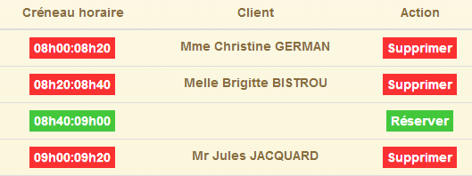 |
Beachten Sie, dass die Kunden nach dem Zufallsprinzip ausgewählt werden.
Der Reservierungscode lautet wie folgt:
$scope.reserver = function (creneauId) {
utils.debug("réservation du créneau", creneauId);
// we create a RV with a random customer in the slot identified by [id]
var idClient = clients[Math.floor(Math.random() * clients.length)].id;
utils.debug("réservation du créneau pour le client", idClient);
// simulated waiting
$scope.waiting.visible = true;
var task = utils.waitForSomeTime($scope.waiting.time);
// we add the
var promise = task.promise.then(function () {
// the URL service path
var path = config.urlSvrResaAdd;
// data to be sent to the service
var post = {jour: formattedDay, idCreneau: creneauId, idClient: idClient};
// start the asynchronous task
task = dao.getData($scope.server.url, $scope.server.login, $scope.server.password, path, post);
// we return the promise of task completion
return task.promise;
});
// task result analysis
promise = promise.then(function (result) {
if (result.err != 0) {
// there were errors in validating the appointment
$scope.errors = {title: config.postResaErrors, messages: utils.getErrors(result, $filter), show: true};
} else {
// we ask for the new agenda
getAgenda();
}
});
};
- Zeile 1: Beachten Sie, dass der Parameter der Funktion [reserve] die Slot-Nummer (id-Attribut) ist;
- Zeile 4: Aus der Liste der Kunden, die im Initialisierungscode fest codiert ist, wird ein Kunde zufällig ausgewählt. Wir speichern seine Kennung [id];
- Zeilen 7–8: die Wartezeit von 3 Sekunden;
- Zeilen 11–18: Diese Zeilen werden erst nach Ablauf der 3 Sekunden ausgeführt;
- Zeile 12: Die URL des Buchungsdienstes [/ajouterRv]. Diese URL unterscheidet sich von den bisher bekannten. Sie ist im Webdienst wie folgt definiert:
@RequestMapping(value = "/ajouterRv", method = RequestMethod.POST, consumes = "application/json; charset=UTF-8")
public Reponse ajouterRv(@RequestBody PostAjouterRv post, HttpServletResponse response) {
- (Fortsetzung)
- Zeile 1: Die URL enthält keine Parameter und wird per POST angefordert;
- Zeile 2: Die übermittelten Parameter liegen in Form eines JSON-Objekts vor. Dieses wird in den Parameter [post] (@RequestBody) deserialisiert;
Wir haben ein Beispiel für diesen POST-Request gesehen (Abschnitt 2.12.2):
 |
- in [0] die URL des Webdienstes;
- in [1] wird die POST-Methode verwendet;
- in [2] der JSON-Text der an den Webdienst gesendeten Informationen in der Form {day, clientId, slotId};
- in [3] teilt der Client dem Webdienst mit, dass er JSON-Daten sendet;
Kehren wir zum JS-Code für die Funktion [reserve] zurück:
- Zeile 14: Wir erstellen den zu sendenden Wert in Form eines JS-Objekts. Angular wird ihn beim Senden in JSON serialisieren;
- Zeile 16: Die HTTP-Anfrage wird gestellt. Der zu sendende Wert ist der letzte Parameter der Funktion [dao.getData]. Wenn dieser Parameter vorhanden ist, führt die Funktion [dao.getData] einen POST- statt eines GET-Aufrufs durch (siehe den Code in Abschnitt 3.7.6.4);
- Zeile 18: Das Promise aus dem HTTP-Aufruf wird zurückgegeben;
- Zeilen 23–29: werden nur ausgeführt, wenn der HTTP-Aufruf seine Antwort zurückgegeben hat;
- Zeile 23: Der Parameter [result] hat die Form [err,data] oder [err,messages], wobei [err] ein Fehlercode ist;
- Zeilen 23–26: Wenn Fehler aufgetreten sind, wird die Fehlermeldung angezeigt;
- Zeile 28: Wenn die Reservierung erfolgreich war, wird der neue Kalender erneut angezeigt;
3.7.9.6. Serveranpassung
 |
In der Klasse [RdvMedecinsCorsController] fügen wir die folgende Methode hinzu:
// sending options to the customer
private void sendOptions(HttpServletResponse response) {
if (application.isCORSneeded()) {
// set header CORS
response.addHeader("Access-Control-Allow-Origin", "*");
// we authorize the header [authorization]
response.addHeader("Access-Control-Allow-Headers", "authorization");
}
@RequestMapping(value = "/ajouterRv", method = RequestMethod.OPTIONS)
public void ajouterRv(HttpServletResponse response) {
sendOptions(response);
}
Die Ergänzung erfolgt in den Zeilen 10–13. Die Header in den Zeilen 2–8 werden für die URL [/addAppt] (Zeile 10) und die HTTP-Methode [OPTIONS] (Zeile 10) gesendet.
Die Klasse [RdvMedecinsController] wird wie folgt geändert:
@RequestMapping(value = "/ajouterRv", method = RequestMethod.POST, consumes = "application/json; charset=UTF-8")
public Reponse ajouterRv(@RequestBody PostAjouterRv post, HttpServletResponse response) {
// headers CORS
rdvMedecinsCorsController.ajouterRv(response);
...
Für die [POST]-Methode (Zeile 1) und die URL [/addAppointment] (Zeile 1) wird die Methode aufgerufen, die wir gerade zu [RdvMedecinsCorsController] hinzugefügt haben (Zeile 4), wodurch dieselben HTTP-Header wie für die [OPTIONS]-HTTP-Methode zurückgegeben werden.
3.7.9.7. Tests
Führen wir einen ersten Test durch, bei dem wir einen beliebigen freien Termin buchen:
 |
Wie immer in solchen Fällen müssen wir die Konsolenprotokolle überprüfen:
[dao] getData[/ajouterRv] error réponse : {"data":"","status":0,"config":{"method":"POST","transformRequest":[null],"transformResponse":[null],"timeout":1000,"url":"http://localhost:8080/ajouterRv","data":{"jour":"2014-06-30","idCreneau":1,"idClient":4},"headers":{"Accept":"application/json, text/plain, */*","Authorization":"Basic YWRtaW46YWRtaW4=","Content-Type":"application/json;charset=utf-8"}},"statusText":""}
Die Methode [dao.getData] ist mit [status=0] fehlgeschlagen, was bedeutet, dass Angular die Anfrage abgebrochen hat. Die Ursache des Fehlers ist in den Protokollen zu finden:
XMLHttpRequest cannot load http://localhost:8080/ajouterRv. Request header field Content-Type is not allowed by Access-Control-Allow-Headers.
Wenn wir uns den Netzwerkverkehr ansehen, sehen wir Folgendes:
 |
- in [1] und [2]: Es gab nur eine HTTP-Anfrage, die [OPTIONS]-Anfrage;
- in [3] fordert der Angular-Client zwei Berechtigungen an:
- die Berechtigung, die HTTP-Header [accept, authorization, content-type] zu senden;
- die Berechtigung, eine POST-Anfrage zu senden;
- in [4]: Der Server autorisiert den [authorization]-Header. Denken Sie daran, dass auf der Serverseite wir diejenigen sind, die diese Autorisierung senden;
Neu ist, dass der Angular-Client für einen POST-Vorgang zusätzliche Autorisierungen vom Server anfordert. Wir müssen daher den Server so anpassen, dass er diese gewährt:
|
In der Klasse [RdvMedecinsCorsController] ändern wir die private Methode, die die HTTP-Header generiert, die für OPTIONS-, GET- und POST-Anfragen gesendet werden:
// sending options to the customer
private void sendOptions(HttpServletResponse response) {
if (application.isCORSneeded()) {
// set header CORS
response.addHeader("Access-Control-Allow-Origin", "*");
// certain headers are allowed
response.addHeader("Access-Control-Allow-Headers", "accept, authorization, content-type");
// the POST is authorized
response.addHeader("Access-Control-Allow-Methods", "POST");
}
}
- Zeile 7: Wir haben eine Autorisierung für die HTTP-Header [accept, content-type] hinzugefügt;
- Zeile 9: Wir haben eine Autorisierung für die POST-Methode hinzugefügt;
Wir führen den Test nach dem Neustart des Servers erneut durch:
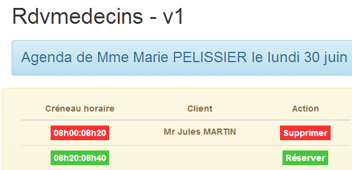 |
Diesmal war die Reservierung erfolgreich.
3.7.9.8. Einen Termin löschen
 |  |
Der Code für die [delete]-Funktion lautet wie folgt:
$scope.supprimer = function (idRv) {
utils.debug("suppression rv n°", idRv);
// simulated waiting
$scope.waiting.visible = true;
task = utils.waitForSomeTime($scope.waiting.time);
// we add the
var promise = task.promise.then(function () {
// the URL service path
var path = config.urlSvrResaRemove;
// data to be sent to the service
var post = {idRv: idRv};
// start the asynchronous task
task = dao.getData($scope.server.url, $scope.server.login, $scope.server.password, path, post);
// we return the promise of task completion
return task.promise;
});
// task result analysis
promise = promise.then(function (result) {
if (result.err != 0) {
// there have been errors deleting the rv
$scope.errors = {title: config.postRemoveErrors, messages: utils.getErrors(result, $filter), show: true};
// the UI is updated
$scope.waiting.visible = false;
} else {
// we ask for the new agenda
getAgenda();
}
});
};
- Zeile 1: Beachten Sie, dass der Funktionsparameter die ID des zu löschenden Termins ist. Dieser Code ist dem Buchungscode sehr ähnlich. Wir werden nur auf die Unterschiede eingehen;
- Zeile 9: Die Service-URL lautet hier [/deleteAppointment] und wird wie zuvor über eine POST-Anfrage aufgerufen:
@RequestMapping(value = "/supprimerRv", method = RequestMethod.POST, consumes = "application/json; charset=UTF-8")
public Reponse supprimerRv(@RequestBody PostSupprimerRv post, HttpServletResponse response) {
Der übermittelte Parameter wird erneut im JSON-Format übertragen. In Abschnitt 2.12.17 haben wir die Funktionsweise des manuell durchgeführten POST-Aufrufs demonstriert:
 |
- in [1] die URL des Webdienstes;
- in [2] wird die POST-Methode verwendet;
- In [3] der JSON-Text der an den Webdienst gesendeten Informationen in der Form {idRv};
- in [4] teilt der Client dem Webdienst mit, dass er JSON-Daten sendet;
Kehren wir zum JS-Code für die Funktion [delete] zurück:
- Zeile 11: Wir erstellen das gesendete Objekt. Angular serialisiert es automatisch in JSON;
Der Rest des Codes ähnelt dem der Reservierung.
3.7.9.9. Änderungen auf der Serverseite
Auf der Serverseite nehmen wir folgende Änderungen vor:
|
In der Klasse [RdvMedecinsCorsController] fügen wir die folgende Methode hinzu:
// sending options to the customer
private void sendOptions(HttpServletResponse response) {
if (application.isCORSneeded()) {
// set header CORS
response.addHeader("Access-Control-Allow-Origin", "*");
// certain headers are allowed
response.addHeader("Access-Control-Allow-Headers", "accept, authorization, content-type");
// the POST is authorized
response.addHeader("Access-Control-Allow-Methods", "POST");
}
}
...
@RequestMapping(value = "/supprimerRv", method = RequestMethod.OPTIONS)
public void supprimerRv(HttpServletResponse response) {
sendOptions(response);
}
Die Ergänzung erfolgt in den Zeilen 13–16. Die Header aus den Zeilen 2–10 werden für die URL [/deleteAppointment] (Zeile 13) und die HTTP-Methode [OPTIONS] (Zeile 13) gesendet.
Die Klasse [RdvMedecinsController] wird wie folgt geändert:
@RequestMapping(value = "/supprimerRv", method = RequestMethod.POST, consumes = "application/json; charset=UTF-8")
public Reponse supprimerRv(@RequestBody PostSupprimerRv post, HttpServletResponse response) {
// headers CORS
rdvMedecinsCorsController.supprimerRv(response);
...
Für die [POST]-Methode (Zeile 1) und die URL [/deleteAppointment] (Zeile 1) wird die Methode aufgerufen, die wir gerade zu [RdvMedecinsCorsController] hinzugefügt haben (Zeile 4), wodurch dieselben HTTP-Header wie bei der [OPTIONS]-HTTP-Methode zurückgegeben werden.
3.7.10. Beispiel 10: Termine erstellen und stornieren – 2
Wir stellen nun dieselbe Anwendung wie zuvor vor, doch anstatt einen Termin für einen zufälligen Kunden zu buchen, wird der Kunde aus einer Dropdown-Liste ausgewählt.
3.7.10.1. Die V-Ansicht der Anwendung
Wir stellen das folgende Formular vor:
 |
Kunden werden in [1] ausgewählt.
Der Code ähnelt dem der vorherigen Anwendung, daher werden wir nur die wichtigsten Unterschiede vorstellen.
Wir duplizieren die Datei [app-19.html] als [app-20.html] und erstellen dann den Code für die Kunden-Dropdown-Liste [1]:
<!-- customer list -->
<div class="alert alert-info">
<h3>{{agenda.title|translate:agenda.model}}</h3>
<div class="row" ng-show="clients.show">
<div class="col-md-3">
<h2 translate="{{clients.title}}"></h2>
<select data-style="btn-primary" class="selectpicker" select-enable="" ng-if="clients.data">
<option ng-repeat="client in clients.data" value="{{client.id}}">
{{client.titre}} {{client.prenom}} {{client.nom}}
</option>
</select>
</div>
</div>
</div>
- Zeilen 8–12: Die Dropdown-Liste wird mithilfe der Komponente [bootstrap-select] implementiert;
- Zeile 1: Die [selectEnable]-Direktive wird über das [select-enable]-Attribut angewendet;
- Zeile 1: Das <select>-Tag wird nur generiert, wenn [clients.data] vorhanden ist (# null, undefined). Dieser Punkt ist wichtig und wurde in Abschnitt 3.7.7.8 erläutert;
Zusätzlich importieren wir neue JS-Dateien:
<script type="text/javascript" src="rdvmedecins-08.js"></script>
<!-- directives -->
<script type="text/javascript" src="selectEnable.js"></script>
<script type="text/javascript" src="footable.js"></script>
- Zeile 1: Die Datei [rdvmedecins-08.js] wird durch Kopieren der Datei [rdvmedecins-0.js] erstellt;
- Zeilen 3–4: Die Dateien für beide Direktiven werden importiert;
3.7.10.2. Controller C
Der Code für den C-Controller entwickelt sich wie folgt:
// controller
angular.module("rdvmedecins")
.controller('rdvMedecinsCtrl', ['$scope', 'utils', 'config', 'dao', '$translate', '$timeout', '$filter', '$locale',
function ($scope, utils, config, dao, $translate, $timeout, $filter, $locale) {
// ------------------- model initialization
...
// our customers
$scope.clients = {title: config.listClients, show: false, model: {}};
//------------------------------------------- initilisation vue
// the global asynchronous task
var task;
// we ask for the customers, then the agenda
getClients().then(function () {
getAgenda();
});
...
// execution action
function getClients() {
....
};
} ]);
- Zeile 8: Das Objekt [$scope.clients] konfiguriert die Dropdown-Liste der Kunden in Ansicht V;
- Zeilen 14–16: Asynchron fordern wir zunächst die Liste der Kunden an; sobald diese vorliegt, fordern wir den Terminplan von Frau PELISSIER für heute an. Die hier verwendete Syntax funktioniert nur, weil die Funktion [getClients] ein Promise zurückgibt;
Die Methode [getClients] ruft die Liste der Kunden ab:
function getClients() {
// the UI is updated
$scope.waiting.visible = true;
$scope.clients.show = false;
$scope.errors.show = false;
// we ask for the customer list;
task = dao.getData($scope.server.url, $scope.server.login, $scope.server.password, config.urlSvrClients);
var promise = task.promise;
// analyze the result of the previous call
promise = promise.then(function (result) {
// result={err: 0, data: [client1, client2, ...]}
// result={err: n, messages: [msg1, msg2, ...]}
if (result.err == 0) {
// we put the acquired data into the model
$scope.clients.data = result.data;
// the UI is updated
$scope.clients.show = true;
$scope.waiting.visible = false;
} else {
// there were errors in obtaining the customer list
$scope.errors = { title: config.getClientsErrors, messages: utils.getErrors(result), show: true, model: {}};
// the UI is updated
$scope.waiting.visible = false;
}
});
// we return the promise
return promise;
};
Dies ist Code, den wir bereits kennengelernt und besprochen haben. Der wichtige Teil ist Zeile 31:
- Zeile 27: Wir geben das Promise aus Zeile 10 zurück, d. h. das zuletzt im Code erhaltene Promise. Dieses Promise wird erst erfüllt, sobald die HTTP-Anfrage ihre Antwort zurückgegeben hat;
Die [reserve]-Methode ändert sich geringfügig:
$scope.reserver = function (creneauId) {
utils.debug("réservation du créneau", creneauId);
// on crée un RV pour le client sélectionné
var idClient = $(".selectpicker").selectpicker('val');
...
});
- Zeile 4: Wir nehmen keine Buchungen mehr für einen beliebigen Kunden vor, sondern für den aus der Kundenliste ausgewählten Kunden.
3.7.11. Beispiel 11: Eine [selectEnable2]-Direktive
Dieses Beispiel greift das Thema Direktiven wieder auf.
3.7.11.1. Die V-Ansicht
Die Anwendung zeigt die folgende Ansicht an:
 |
3.7.11.2. Der HTML-Code für die Ansicht
Der HTML-Code für die Ansicht [app-21.html] lautet wie folgt:
<div class="container">
<h1>Rdvmedecins - v1</h1>
<!-- the waiting message -->
<div class="alert alert-warning" ng-show="waiting.visible">
...
</div>
<!-- the error list -->
<div class="alert alert-danger" ng-show="errors.show">
...
</div>
<!-- customer list -->
<div class="alert alert-info">
<div class="row" ng-show="clients.show">
<div class="col-md-4">
<h2 translate="{{clients.title}}"></h2>
<select data-style="btn-primary" id="selectpickerClients" select-enable2="" ng-if="clients.data">
<option ng-repeat="client in clients.data" value="{{client.id}}">
{{client.titre}} {{client.prenom}} {{client.nom}}
</option>
</select>
</div>
</div>
</div>
<!-- list of doctors -->
<div class="alert alert-info">
<div class="row" ng-show="medecins.show">
<div class="col-md-4">
<h2 translate="{{medecins.title}}"></h2>
<select data-style="btn-primary" id="selectpickerMedecins" select-enable2="" ng-if="medecins.data">
<option ng-repeat="medecin in medecins.data" value="{{medecin.id}}">
{{medecin.titre}} {{medecin.prenom}} {{medecin.nom}}
</option>
</select>
</div>
</div>
</div>
</div>
...
<script type="text/javascript" src="rdvmedecins-09.js"></script>
<!-- guidelines -->
<script type="text/javascript" src="selectEnable2.js"></script>
- Zeilen 19–23: die Client-Dropdown-Liste;
- Zeile 19: Die Anweisung [selectEnable2] (Attribut [select-enable2]) wird angewendet;
- Zeile 19: nur wenn [clients.data] nicht leer ist;
- Zeile 19: Die Dropdown-Liste wird durch das Attribut [id="selectpickerClients"] identifiziert;
- Zeilen 33–37: die Dropdown-Liste der Ärzte;
- Zeile 33: Die Anweisung [selectEnable2] wird angewendet (Attribut [select-enable2]);
- Zeile 33: nur wenn [doctors.data] nicht leer ist;
- Zeile 33: Die Dropdown-Liste wird durch das Attribut [id="selectpickerMedecins"] identifiziert;
- Zeile 43: Eine neue JS-Datei [rdvmedecins-09.js] wird importiert;
- Zeile 45: Die JS-Datei für die neue Direktive wird importiert;
3.7.11.3. Die Direktive [selectEnable2]
Der Code für die Direktive [selectEnable2] lautet wie folgt:
angular.module("rdvmedecins").directive('selectEnable2', ['$timeout', 'utils', function ($timeout, utils) {
return {
link: function (scope, element, attrs) {
utils.debug("directive selectEnable2 attrs", attrs);
$timeout(function () {
$('#' + attrs['id']).selectpicker();
})
}
}
}]);
- Zeile 4: Wir zeigen den Wert des Parameters [attrs] an, um zu verdeutlichen, wie der Code funktioniert. Wir werden sehen, dass attrs['id']='selectpickerClients' für die Kundenliste gilt;
- Zeile 6: Um ein Element mit [id='x'] im DOM zu finden, schreiben wir [$('#x')]. Daher müssen wir [$('#selectpickerClients')] schreiben, um die Kundenliste zu finden. Dies wird mit der Syntax [$('#' + attrs['id'])] erreicht;
Die Direktive [selectEnable2] nutzt also die Informationen, die in einem der Attribute des HTML-Elements enthalten sind, auf das sie angewendet wird.
3.7.11.4. Controller C
Der C-Controller befindet sich in der JS-Datei [rdvmedecins-09.js] und weist folgende Struktur auf:
// controller
angular.module("rdvmedecins")
.controller('rdvMedecinsCtrl', ['$scope', 'utils', 'config', 'dao',
function ($scope, utils, config, dao) {
// ------------------- model initialization
// the waiting msg
$scope.waiting = {text: config.msgWaiting, visible: false, cancel: cancel, time: 3000};
// login information
$scope.server = {url: 'http://localhost:8080', login: 'admin', password: 'admin'};
// errors
$scope.errors = {show: false, model: {}};
// the doctors
$scope.medecins = {title: config.listMedecins, show: false, model: {}};
// our customers
$scope.clients = {title: config.listClients, show: false, model: {}};
// the global asynchronous task
var task;
// ---------------------------------------------------- initialisation vue
// the UI is updated
$scope.waiting.visible = true;
$scope.clients.show = false;
$scope.medecins.show = false;
$scope.errors.show = false;
// we ask for customers, then doctors
getClients().then(function () {
getMedecins();
});
// customer list
function getClients() {
...
}
// list of doctors
function getMedecins() {
...
}
// cancel wait
function cancel() {
...
}
} ]);
- Zeilen 26–28: Zuerst fragen wir die Kunden ab, dann die Ärzte;
3.7.11.5. Tests
Testen Sie diese neue Version.
3.7.12. Beispiel 12: Eine [list]-Direktive
Wir verwenden dasselbe Beispiel wie zuvor, möchten den HTML-Code jedoch mithilfe einer Direktive optimieren. Derzeit haben wir den folgenden HTML-Code:
<!-- customer list -->
<div class="alert alert-info">
<div class="row" ng-show="clients.show">
<div class="col-md-4">
<h2 translate="{{clients.title}}"></h2>
<select data-style="btn-primary" id="selectpickerClients" select-enable2="" ng-if="clients.data">
<option ng-repeat="client in clients.data" value="{{client.id}}">
{{client.titre}} {{client.prenom}} {{client.nom}}
</option>
</select>
</div>
</div>
</div>
<!-- list of doctors -->
<div class="alert alert-info">
<div class="row" ng-show="medecins.show">
<div class="col-md-4">
<h2 translate="{{medecins.title}}"></h2>
<select data-style="btn-primary" id="selectpickerMedecins" select-enable2="" ng-if="medecins.data">
<option ng-repeat="medecin in medecins.data" value="{{medecin.id}}">
{{medecin.titre}} {{medecin.prenom}} {{medecin.nom}}
</option>
</select>
</div>
</div>
</div>
Die Zeilen 14–26 sind identisch mit den Zeilen 1–13. Sie beziehen sich auf Ärzte statt auf Kunden. Wir möchten Folgendes schreiben können:
<!-- la liste des clients -->
<list model="clients" ng-if="clients.show"></list>
<!-- la liste des médecins -->
<list model="medecins" ng-if="medecins.show"></list>
Dieser Code verwendet eine neue [list]-Direktive, die wir nun erstellen werden.
3.7.12.1. Die [list]-Direktive
Die [list]-Direktive befindet sich in der JS-Datei [list.js]. Ihr Code lautet wie folgt:
angular.module("rdvmedecins")
.directive("list", ['utils', '$timeout', function (utils, $timeout) {
// instance de la directive retournée
return {
// élément HTML
restrict: "E",
// url du fragment
templateUrl: "list.html",
// scope unique à chaque instance de la directive
scope: true,
// fonction lien avec le document
link: function (scope, element, attrs) {
utils.debug("directive list attrs", attrs);
scope.model = scope[attrs['model']];
utils.debug("directive list model", scope.model);
$timeout(function () {
$('#' + scope.model.id).selectpicker();
})
}
}
}]);
- Zeile 2: definiert eine Direktive namens „list“;
- Zeile 6: Das Attribut [restrict] legt fest, wie die Direktive verwendet werden kann. [restrict: „E“] bedeutet, dass die Direktive [list] als HTML-Element <list ...>...</list> verwendet werden kann. [restrict: "A"] bedeutet, dass die [list]-Direktive als Attribut verwendet werden kann, zum Beispiel <div ... list='...'>. [restrict: "AE"] bedeutet, dass die [list]-Direktive sowohl als Attribut als auch als Element verwendet werden kann;
- Zeile 8: Das Attribut [templateUrl] gibt den Namen des HTML-Fragments an, das verwendet werden soll, wenn das Tag auftritt. Dieses Fragment bildet den Hauptteil des Tags;
- Zeile 10: Das Attribut [scope] legt den Geltungsbereich der Vorlage der Direktive fest. [scope: true] bedeutet, dass zwei <list>-Elemente jeweils ihre eigene Vorlage haben. Standardmäßig (scope nicht initialisiert) teilen sie sich ihre Vorlagen;
- Zeile 12: die Funktion [link], die wir bereits mehrmals verwendet haben;
Um den obigen Code zu verstehen, müssen Sie sich daran erinnern, wie die Direktive verwendet wird:
<!-- la liste des clients -->
<list model="clients" ng-if="clients.show"></list>
<!-- la liste des médecins -->
<list model="medecins" ng-if="medecins.show"></list>
Die [list]-Direktive wird wie ein HTML-<list>-Element verwendet. Dieses Element hat zwei Attribute:
- [model]: Sein Wert ist das Element des Modells M aus der Ansicht V, in der sich die [list]-Direktive befindet. Dieses Element füllt das Modell der Direktive;
- [ng-if]: stellt sicher, dass der HTML-Code der Direktive nicht generiert wird, wenn nichts anzuzeigen ist;
Kehren wir zum Code für die [link]-Funktion der Direktive zurück:
link: function (scope, element, attrs) {
utils.debug("directive list attrs", attrs);
scope.model = scope[attrs['model']];
utils.debug("directive list model", scope.model);
$timeout(function () {
$('#' + scope.model.id).selectpicker();
})
}
Kombinieren wir diesen JS-Code mit dem HTML-Code, der die Direktive verwendet:
<list model="clients" ng-if="clients.show"></list>
- Zeile 3: attrs['model'] hat hier den Wert 'clients';
- Zeile 3: scope[attrs['model']] hat den Wert scope['clients'] und steht daher für [$scope.clients], d. h. das Feld [clients] des View-Modells. Dieses Feld hat den Wert {id:'...', data:[client1, client2, ...], show:..., title:'...'};
- Zeile 3: Wir fügen dem Modell der Direktive ein [model]-Feld hinzu. Dieses Feld erbt vom Modell der Ansicht, in der es sich befindet. Wir müssen daher Konflikte mit einem [model]-Feld vermeiden, das die Ansicht möglicherweise ebenfalls hat. Hier gibt es keinen Konflikt;
- Zeile 4: Wir zeigen [scope.model] an, um den Code besser zu verstehen;
- Zeilen 5–7: Wir sehen Code, der uns bereits bekannt ist. Der Unterschied besteht darin, dass die ID der Komponente zuvor aus einem attrs['id']-Attribut abgerufen wurde. Hier wird sie aus [scope.model.id] abgerufen;
Sehen wir uns nun den von der Direktive generierten HTML-Code an. Aufgrund des Attributs [templateUrl: "list.html"] der Direktive müssen wir in der Datei [list.html] danach suchen:
<!-- a list of customers or doctors -->
<div class="alert alert-info" ng-show="model.show">
<div class="row">
<div class="col-md-4">
<h2 translate="{{model.title}}"></h2>
<select data-style="btn-primary" id="{{model.id}}" ng-if="model.data">
<option ng-repeat="element in model.data" value="{{element.id}}">
{{element.titre}} {{element.prenom}} {{element.nom}}
</option>
</select>
</div>
</div>
</div>
- Das Erste, was man beim Lesen dieses Codes beachten sollte, ist, dass die Direktive ein Objekt [scope.model] der Form [{id:'...', data:[client1, client2, ...], show:..., title:'...'}] erstellt hat. Dieses [model]-Objekt (scope ist im HTML-Code impliziert) wird vom HTML-Code der Direktive verwendet;
- Zeile 2: Verwendung von [model.show], um die von der Direktive generierte Ansicht ein- bzw. auszublenden;
- Zeile 5: Verwendung von [model.title], um einen Titel festzulegen;
- Zeile 6: Verwendung von [model.id], um dem <select>-Tag eine ID zuzuweisen. Diese ID wird vom JavaScript-Code der Direktive verwendet;
- Zeile 6: Verwendung von [model.data], um das <select>-Element nur dann zu generieren, wenn Daten angezeigt werden sollen;
- Zeilen 7–9: Verwendung von [model.data] zur Generierung der Elemente der Dropdown-Liste;
3.7.12.2. Der HTML-Code
Der HTML-Code für die Anwendung [app-22.html] lautet wie folgt:
<div class="container">
<h1>Rdvmedecins - v1</h1>
<!-- the waiting message -->
<div class="alert alert-warning" ng-show="waiting.visible">
...
</div>
<!-- the error list -->
<div class="alert alert-danger" ng-show="errors.show">
...
</div>
<!-- customer list -->
<list model="clients" ng-if="clients.show"></list>
<!-- list of doctors -->
<list model="medecins" ng-if="medecins.show"></list>
</div>
...
<script type="text/javascript" src="rdvmedecins-10.js"></script>
<!-- guidelines -->
<script type="text/javascript" src="list.js"></script>
- Zeile 22: Vergiss nicht, den JS-Code für die Direktive einzubinden;
3.7.12.3. Der C-Controller
Der C-Controller ändert sich kaum:
angular.module("rdvmedecins")
.controller('rdvMedecinsCtrl', ['$scope', 'utils', 'config', 'dao',
function ($scope, utils, config, dao) {
// ------------------- model initialization
...
// the doctors
$scope.medecins = {title: config.listMedecins, show: false, id: 'medecins'};
// our customers
$scope.clients = {title: config.listClients, show: false, id: 'clients'};
...
- Zeilen 7 und 9: Wir fügen das Attribut [id] zu den Modellen „doctors“ und „clients“ hinzu;
3.7.12.4. Die Tests
Die Tests liefern dieselben Ergebnisse wie im vorherigen Beispiel.
3.7.13. Beispiel 13: Aktualisieren des Modells einer Direktive
Wir setzen unsere Untersuchung von Direktiven fort und bleiben beim Beispiel der Dropdown-Liste. Hier wollen wir das Verhalten der [list]-Direktive untersuchen, wenn sich der Inhalt der Dropdown-Liste ändert.
3.7.13.1. Die V-Ansichten
Die verschiedenen Ansichten sind wie folgt:
 |
- In [1] fordern wir zum ersten Mal die Kundenliste an;
 |
- in [2] fordern wir die Kundenliste ein zweites Mal an. Diese zweite Liste wird dann mit der ersten kombiniert [3]. Es ist die Aktualisierung der [Bootstrap-Select]-Komponente, die wir in diesem Beispiel untersuchen wollen.
3.7.13.2. Die HTML-Seite
Die HTML-Seite [app-23.html] wird durch Kopieren von [app-22.html] erstellt und anschließend wie folgt geändert:
<div class="container">
<h1>Rdvmedecins - v1</h1>
<!-- le message d'attente -->
<div class="alert alert-warning" ng-show="waiting.visible">
...
</div>
<!-- la liste d'erreurs -->
<div class="alert alert-danger" ng-show="errors.show">
...
</div>
<!-- le bouton -->
<div class="alert alert-warning">
<button class="btn btn-primary" ng-click="getClients()">{{clients.title|translate}}</button>
</div>
<!-- la liste des clients -->
<list2 model="clients" ng-if="clients.show"></list2>
</div>
...
<script type="text/javascript" src="rdvmedecins-11.js"></script>
<!-- directives -->
<script type="text/javascript" src="list2.js"></script>
Die Änderungen gegenüber der vorherigen Anwendung sind wie folgt:
- Zeilen 15–17: Hinzufügen einer Schaltfläche;
- Zeile 20: Verwendung einer neuen Direktive [list2];
- Zeile 23: Verwendung einer neuen JS-Datei;
- Zeile 25: Import der JS-Datei aus der [list2]-Direktive;
3.7.13.3. Die [list2]-Direktive
Die [list2]-Direktive in [list2.js] lautet wie folgt:
angular.module("rdvmedecins")
.directive("list2", ['utils', '$timeout', function (utils, $timeout) {
// instance de la directive retournée
return {
// élément HTML
restrict: "E",
// url du fragment
templateUrl: "list.html",
// scope unique à chaque instance de la directive
scope: true,
// fonction lien avec le document
link: function (scope, element, attrs) {
utils.debug('directive list2');
scope.model = scope[attrs['model']];
$timeout(function () {
$('#' + scope.model.id).selectpicker('refresh');
})
}
}
}]);
Der einzige Unterschied zur [list]-Direktive besteht in Zeile 16: Mit der Methode [selectpicker('refresh')] weisen wir die [Bootstrap-select]-Komponente an, sich zu aktualisieren. Dahinter steht die Idee, dass die Dropdown-Liste jedes Mal aktualisiert wird, wenn der Benutzer eine neue Kundenliste anfordert. Es wird zwar nicht funktionieren, aber das ist die Grundidee.
3.7.13.4. Der C-Controller
Der Controller befindet sich in der Datei [rdvmedecins-11.js], die durch Kopieren der Datei [rdvmedecins-10.js] erstellt wurde:
// our customers
$scope.clients = {title: config.listClients, show: false, id: 'clients', data: []};
...
// customer list
$scope.getClients = function getClients() {
// the UI is updated
$scope.waiting.visible = true;
$scope.errors.show = false;
// we ask for the customer list;
task = dao.getData($scope.server.url, $scope.server.login, $scope.server.password, config.urlSvrClients);
var promise = task.promise;
// analyze the result of the previous call
promise = promise.then(function (result) {
// result={err: 0, data: [client1, client2, ...]}
// result={err: n, messages: [msg1, msg2, ...]}
if (result.err == 0) {
// put the acquired data into a new model to force the view to refresh
$scope.clients = {title: $scope.clients.title, data: $scope.clients.data.concat(result.data), show: $scope.clients.show, id: $scope.clients.id};
// the UI is updated
$scope.clients.show = true;
$scope.waiting.visible = false;
} else {
// there were errors in obtaining the customer list
$scope.errors = { title: config.getClientsErrors, messages: utils.getErrors(result), show: true, model: {}};
// the UI is updated
$scope.waiting.visible = false;
}
});
}
- Zeile 1: Damit Arrays in [clients.data] verkettet werden können, wird dieses Objekt mit einem leeren Array initialisiert;
- Zeile 18: Wir verketten die neue Liste der Kunden mit den bereits im Array [clients.data] vorhandenen;
Zuvor hatten wir geschrieben:
Nun schreiben wir:
Um diesen Code zu verstehen, müssen Sie sich daran erinnern, wie das M-Modell im Fall der [list2]-Direktive in der V-Ansicht verwendet wird:
<!-- la liste des clients -->
<list2 model="clients" ng-if="clients.show"></list2>
Das von der Direktive [list2] verwendete Modell ist [clients]. Es wird in der Ansicht V nur dann neu ausgewertet, wenn sich [clients] im Modell M der Ansicht ändert. Der erste Gedanke, der einem für die Änderung in den Sinn kommt, ist, Folgendes zu schreiben:
um der Tatsache Rechnung zu tragen, dass die neue Liste der Kunden an die bisherigen angehängt werden muss. Dadurch wird [clients.data] geändert, nicht jedoch [clients]. Ich bin mit den Feinheiten von JavaScript nicht vertraut, aber es wäre nicht überraschend, wenn [clients] ein Zeiger wäre, so wie [clients.data]. Der Zeiger [clients] ändert sich nicht, wenn wir den Zeiger [clients.data] ändern. Die Direktive [list2] wird daher nicht neu ausgewertet. Genau das beobachten wir auch beim Debuggen der Anwendung (F12 in Chrome).
Durch Schreiben von:
$scope.clients = {title: $scope.clients.title, data: $scope.clients.data.concat(result.data), show: $scope.clients.show, id: $scope.clients.id};
stellen wir sicher, dass [$scope.clients] tatsächlich einen neuen Wert erhält. Der Zeiger [$scope.clients] verweist auf ein neues Objekt. Die Direktive [list2] sollte daraufhin neu ausgewertet werden. Wir erhalten jedoch nicht das gewünschte Ergebnis. Sehen wir uns die Screenshots an, wenn wir die Liste der Kunden zweimal abfragen:
 |
- In [1] haben wir nur vier Elemente statt acht;
- in [2] befinden sich diese vier Elemente in einem [select]-Element, das jedoch ausgeblendet ist (style='display: none');
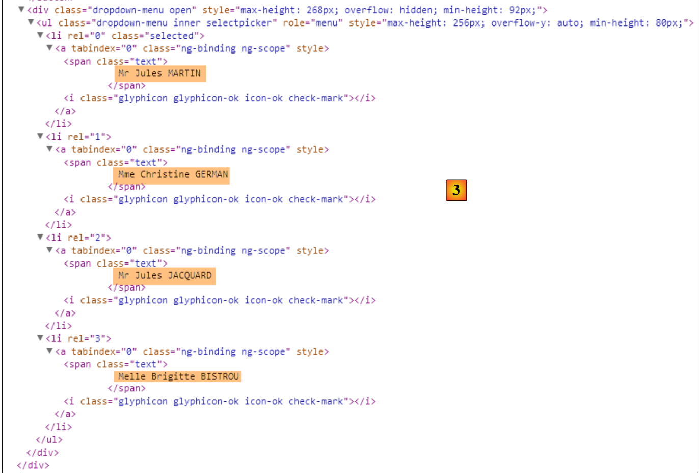 |
- in [3] finden wir die vier Clients in einem anderen HTML-Layout, und genau das sieht der Benutzer, wenn er auf die Dropdown-Liste klickt;
Schließlich zeigen die Konsolenprotokolle Folgendes an:
- Zeile 1: Der [dao]-Dienst wird instanziiert;
- Zeile 2: Der [dao]-Dienst ruft eine erste Liste von Clients ab;
- Zeile 3: Die Anweisung [list2] wird ausgeführt;
- Zeile 4: Der [dao]-Dienst ruft eine zweite Liste von Clients ab;
Die Ausgabe in Zeile 2 stammt aus dem folgenden Code in der Direktive:
link: function (scope, element, attrs) {
utils.debug('directive list2');
...
}
Betrachten wir den Lebenszyklus der Direktive [list2]:
- Zwischen den Zeilen 1 und 2 wird sie nicht aktiviert, obwohl die Ansicht zum ersten Mal angezeigt wurde. Dies liegt an ihrem Attribut [ng-if="clients.show"] in Ansicht V:
<list2 model="clients" ng-if="clients.show"></list2>
- Zeile 3: Nach dem Abrufen der ersten Liste von Ärzten wird [clients.show] auf „true“ gesetzt und die Direktive wird aktiviert;
- nach dem Abrufen der zweiten Liste von Kunden sehen wir, dass der Code für die [list2]-Direktive nicht aufgerufen wird. Deshalb sehen wir die zweite Liste nicht;
Um dieses Problem zu beheben, ändern wir die [list2]-Direktive wie folgt:
angular.module("rdvmedecins")
.directive("list2", ['utils', '$timeout', function (utils, $timeout) {
// instance de la directive retournée
return {
// élément HTML
restrict: "E",
// url du fragment
templateUrl: "list.html",
// scope unique à chaque instance de la directive
scope: true,
// fonction lien avec le document
link: function (scope, element, attrs) {
// à chaque fois que attrs["model"] change, le modèle de la directive doit changer également
scope.$watch(attrs["model"], function (newValue) {
utils.debug("directive list2 newValue", newValue);
// on met à jour le modèle de la directive
scope.model = newValue;
$timeout(function () {
$('#' + scope.model.id).selectpicker('refresh');
})
});
}
}
}]);
- Zeile 14: Mit der Funktion [scope.$watch] können Sie einen Wert im Modell beobachten. Die Syntax lautet [scope.$watch('var'), f], wobei [var] der Bezeichner einer Variablen im Modell ist und f die Funktion, die ausgeführt werden soll, wenn sich der Wert dieser Variablen ändert. Hier möchten wir die Variable [clients] beobachten. Daher müssen wir [scope.$watch('clients')] schreiben. Da wir attrs['model']='clients' haben, schreiben wir [scope.$watch(attrs["model"], function (newValue)];
- Zeile 14: Der zweite Parameter der Funktion [scope.$watch] ist die Funktion, die ausgeführt werden soll, wenn sich der Wert der überwachten Variablen ändert. Der Parameter [newValue] ist der neue Wert der Variablen, in unserem Fall also der neue Wert der Variablen [clients] im Modell;
- Zeile 17: Dieser neue Wert wird dem Feld [model] des Modells der Direktive zugewiesen;
Nach dieser Änderung ändern sich die Protokolle:
 |
Oben sehen wir, dass nach dem Abrufen der zweiten Liste von Clients die Anweisung [list2] tatsächlich erneut ausgeführt wird, was durch das Ergebnis [2] bestätigt wird.
3.7.14. Beispiel 14: Die Anweisungen [waiting] und [errors]
Kehren wir zum HTML-Code der vorherigen Anwendung zurück:
<div class="container">
<h1>Rdvmedecins - v1</h1>
<!-- le message d'attente -->
<div class="alert alert-warning" ng-show="waiting.visible">
...
</div>
<!-- la liste d'erreurs -->
<div class="alert alert-danger" ng-show="errors.show">
...
</div>
<!-- le bouton -->
<div class="alert alert-warning">
<button class="btn btn-primary" ng-click="getClients()">{{clients.title|translate}}</button>
</div>
<!-- la liste des clients -->
<list2 model="clients" ng-if="clients.show"></list2>
</div>
- Zeilen 5–7: die Lademeldung;
- Zeilen 10–12: die Fehlermeldung;
Wir beschließen, den HTML-Code für diese beiden Meldungen in Direktiven zu platzieren.
3.7.14.1. Der neue HTML-Code
Der neue HTML-Code [app-24.html] lautet wie folgt:
<div class="container">
<h1>Rdvmedecins - v1</h1>
<!-- le message d'attente -->
<waiting model="waiting"></waiting>
<!-- la liste d'erreurs -->
<errors model="errors"></errors>
<!-- le bouton -->
<div class="alert alert-warning">
<button class="btn btn-primary" ng-click="getClients()">{{clients.title|translate}}</button>
</div>
<!-- la liste des clients -->
<list2 model="clients" ng-if="clients.show"></list2>
</div>
...
<script type="text/javascript" src="rdvmedecins-12.js"></script>
<!-- directives -->
<script type="text/javascript" src="list2.js"></script>
<script type="text/javascript" src="errors.js"></script>
<script type="text/javascript" src="waiting.js"></script>
- Zeile 5: die Anweisung für die Wartemeldung;
- Zeile 8: die Anweisung für die Fehlermeldung;
- Zeile 19: die neue JS-Datei, die der Anwendung zugeordnet ist;
- Zeilen 21–23: die JS-Dateien für die drei Anweisungen;
3.7.14.2. Die [waiting]-Anweisung
Der JS-Code für die [waiting]-Direktive befindet sich in der folgenden [waiting.js]-Datei:
angular.module("rdvmedecins")
.directive("waiting", ['utils', function (utils) {
// returned directive instance
return {
// element HTML
restrict: "E",
// fragment url
templateUrl: "waiting.html",
// scope unique to each directive instance
scope: true,
// function link to document
link: function (scope, element, attrs) {
// each time attr["model"] changes, the page model must also change
scope.$watch(attrs["model"], function (newValue) {
utils.debug("[waiting] watch newValue", newValue);
scope.model = newValue;
});
}
}
}]);
Dieser Code folgt derselben Logik wie die bereits besprochene [list2]-Direktive.
In Zeile 8 verweisen wir auf die folgende Datei [waiting.html]:
<div class="alert alert-warning" ng-show="model.show">
<h1>{{ model.title.text | translate:model.title.values}}
<button class="btn btn-primary pull-right" ng-click="model.cancel()">{{'cancel'|translate}}</button>
<img src="assets/images/waiting.gif" alt=""/>
</h1>
</div>
Im JS-Code der Anwendung wird das Modell [$scope.waiting] für diesen HTML-Code wie folgt definiert:
// the waiting msg
$scope.waiting = {title: {text: config.msgWaiting, values: {}}, show: false, cancel: cancel, time: 3000};
3.7.14.3. Die [errors]-Direktive
Der JS-Code für die [errors]-Direktive befindet sich in der folgenden [errors.js]-Datei:
angular.module("rdvmedecins")
.directive("errors", ['utils', function (utils) {
// returned directive instance
return {
// element HTML
restrict: "E",
// fragment url
templateUrl: "errors.html",
// scope unique to each directive instance
scope: true,
// function link to document
link: function (scope, element, attrs) {
// each time attr["model"] changes, the page model must also change
scope.$watch(attrs["model"], function (newValue) {
utils.debug("[errors] watch newValue", newValue);
scope.model = newValue;
});
}
}
}]);
Dieser Code folgt derselben Logik wie die bereits besprochene [list2]-Direktive.
In Zeile 8 verweisen wir auf die folgende Datei [errors.html]:
<div class="alert alert-danger" ng-show="model.show">
{{model.title.text|translate:model.title.values}}
<ul>
<li ng-repeat="message in model.messages">{{message|translate}}</li>
</ul>
</div>
Im JS-Code der Anwendung wird das Modell [$scope.errors] für diesen HTML-Code wie folgt definiert:
// there were errors in obtaining the customer list
$scope.errors = { title: { text: config.getClientsErrors, values: {}}, messages: utils.getErrors(result), show: true, model: {}};
3.7.15. Beispiel 15: Navigation
Bisher haben wir Single-Page-Anwendungen verwendet. In diesem Beispiel behandeln wir Multi-Page-Anwendungen und die Navigation zwischen ihnen.
3.7.15.1. Die V-Ansichten der Anwendung
 |
- in [1], die URL von Ansicht Nr. 1;
- in [2] deren Inhalt;
- in [3] gehen wir zu Seite 2;
- in [4] Ansicht Nr. 2;
- in [5] gehen wir zu Seite 3;
 |
- in [6], Ansicht Nr. 3;
- in [7] gehen wir zu Seite 1;
- in [8] kehren wir zu Ansicht Nr. 1 zurück;
3.7.15.2. Code-Organisation
Wir beginnen mit einer neuen Code-Organisation:
 |
- Die Ansichten der Anwendung werden im Ordner [views] abgelegt;
- Das Anwendungsmodul wird im Ordner [modules] abgelegt;
- Die Anwendungs-Controller werden im Ordner [controllers] abgelegt;
Ebenso in der endgültigen Version:
- Die Dienste werden im Ordner [services] abgelegt;
- Direktiven werden im Ordner [directives] abgelegt;
3.7.15.3. Der View-Container
Die Ansichten im Ordner [views] werden im folgenden Container [app-25.html] angezeigt:
<!DOCTYPE html>
<html ng-app="rdvmedecins">
<head>
...
</head>
<body>
<div class="container" ng-controller="mainCtrl">
<!-- the navigation bar -->
<ng-include src="'views/navbar.html'"></ng-include>
<!-- the current view -->
<ng-view></ng-view>
</div>
...
<!-- the module -->
<script type="text/javascript" src="modules/rdvmedecins-13.js"></script>
<!-- controllers -->
<script type="text/javascript" src="controllers/mainController.js"></script>
<script type="text/javascript" src="controllers/page1Controller.js"></script>
<script type="text/javascript" src="controllers/page2Controller.js"></script>
<script type="text/javascript" src="controllers/page3Controller.js"></script>
</body>
</html>
- Zeile 7: Der Body des Containers wird von [mainCtrl] gesteuert;
- Zeile 9: Mit der Direktive [ng-include] können Sie eine externe HTML-Datei einbinden, in diesem Fall eine Navigationsleiste;
- Zeile 12: Die verschiedenen Ansichten, die vom Container angezeigt werden, werden innerhalb der [ng-view]-Direktive gerendert. Letztendlich haben wir einen Container, der
- immer dieselbe Navigationsleiste (Zeile 9);
- verschiedene Ansichten in Zeile 12;
- Zeilen 16–22: Wir importieren die JS-Dateien aus dem Anwendungsmodul [rdvmedecins-13.js] und dessen Controllern;
3.7.15.4. Das Anwendungsmodul
Die Datei [rdvmedecins-13.js] definiert das Anwendungsmodul und das Routing zwischen den Ansichten:
// --------------------- Angular module
angular.module("rdvmedecins", [ 'ngRoute' ]);
angular.module("rdvmedecins").config(["$routeProvider", function ($routeProvider) {
// ------------------------ routage
$routeProvider.when("/page1",
{
templateUrl: "views/page1.html",
controller: 'page1Ctrl'
});
$routeProvider.when("/page2",
{
templateUrl: "views/page2.html",
controller: 'page2Ctrl'
});
$routeProvider.when("/page3",
{
templateUrl: "views/page3.html",
controller: 'page3Ctrl'
});
$routeProvider.otherwise(
{
redirectTo: "/page1"
});
}]);
- Zeile 1: definiert das Modul [rdvmedecins]. Es hängt vom Modul [ngRoute] ab, das von der Bibliothek [angular-route.min.js] bereitgestellt wird. Dieses Modul ermöglicht das in den Zeilen 6–24 definierte Routing;
- Zeile 4: definiert die Funktion [config] des Moduls [rdvmedecins]. Beachten Sie, dass diese Funktion ausgeführt wird, bevor ein Dienst instanziiert wird. Es handelt sich um eine Modulkonfigurationsfunktion. Hier wird das Routing konfiguriert. Dies geschieht mithilfe des Objekts [$routeProvider], das vom Modul [ngRoute] bereitgestellt wird;
- Zeilen 6–10: definieren die Ansicht, die angezeigt werden soll, wenn der Benutzer die URL [/page1] aufruft. Dies ist ein internes Routing innerhalb der Anwendung. Die URL lautet eigentlich [/rdvmedecins-angular-v1/app-21.html#/page1]. Wir sehen, dass weiterhin die Container-URL [/rdvmedecins-angular-v1/app-21.html] verwendet wird, jedoch mit zusätzlichen Informationen nach dem Zeichen #. Es sind diese zusätzlichen Informationen, die das Angular-Routing verarbeitet;
- Zeile 8: gibt das HTML-Fragment an, das in die [ng-view]-Direktive des Containers eingefügt werden soll:
- Zeile 9: gibt den Namen des Controllers für dieses Fragment an;
- Zeilen 11–15: definieren die Ansicht, die angezeigt werden soll, wenn der Benutzer die URL [/page2] aufruft;
- Zeilen 16–20: definieren die Ansicht, die angezeigt werden soll, wenn der Benutzer die URL [/page3] aufruft;
- Zeilen 21–24: definieren das Routing, das durchgeführt werden soll, wenn die angeforderte URL nicht eine der drei vorherigen ist (ansonsten Zeile 21);
- Zeile 23: leitet zur URL [/page1] weiter und damit zu der in den Zeilen 6–10 definierten Ansicht;
3.7.15.5. Der View-Container-Controller
Wir haben gesehen, dass der View-Container einen Controller deklariert hat:
<div class="container" ng-controller="mainCtrl">
Der [mainCtrl]-Controller ist in der Datei [mainController.js] definiert:
// controller
angular.module("rdvmedecins")
.controller('mainCtrl', ['$scope', '$location',
function ($scope, $location) {
// page templates
$scope.page1 = {};
$scope.page2 = {};
$scope.page3 = {};
// global model
var main = $scope.main = {};
main.text = "[Modèle global]";
// methods exposed to view
main.showPage1 = function () {
$location.path("/page1");
};
main.showPage2 = function () {
$location.path("/page2");
};
main.showPage3 = function () {
$location.path("/page3");
}
}]);
- Zeile 3: Der Controller [mainCtrl] benötigt das vom Routing-Modul [ngRoute] bereitgestellte Objekt [$location]. Mit diesem Objekt können Sie die Ansichten wechseln (Zeilen 16, 19, 22);
Kehren wir zum Container-Code zurück:
<div class="container" ng-controller="mainCtrl">
<!-- the navigation bar -->
<ng-include src="'views/navbar.html'"></ng-include>
<!-- the current view -->
<ng-view></ng-view>
</div>
- Der Controller [mainCtrl] erstellt das Modell für den Bereich 1-7;
- die in Zeile 6 enthaltene Ansicht verfügt ebenfalls über einen Controller. Die Ansicht [page1] hat beispielsweise den Controller [page1Ctrl]. Dieser Controller erstellt das Modell für den in Zeile 6 angezeigten Bereich. Wir haben dann zwei Modelle in diesem Bereich:
- das vom [mainCtrl]-Controller erstellte Modell;
- das vom Controller [page1Ctrl] erstellte Modell;
Es gibt eine Namenskonvention für Modelle. In der in Zeile 6 gezeigten Ansicht sind die Modelle für die Controller [mainCtrl] und [pagexCtrl] beide sichtbar. Wenn zwei Variablen in diesen Modellen denselben Namen haben, überschreibt die eine die andere. Um diesen Namenskonflikt zu vermeiden, erstellen wir vier Modelle mit vier verschiedenen Namen:
Container | mainCtrl | main | 11 |
Seite1 | Seite1Ctrl | Seite1 | 7 |
Seite 2 | Seite2Strg | Seite2 | 8 |
Seite 3 | Seite3Strg | Seite3 | 9 |
- Zeile 12: definiert ein [text]-Element in der [main]-Vorlage;
Die Zeilen 7–11 haben eine ganz bestimmte Funktion: Sie definieren den [$scope] des [mainCtrl]-Controllers und erstellen darin vier Variablen [main, page1, page2, page3]. Diese vier Variablen werden als jeweilige Modelle für den Container und die drei darin enthaltenen Ansichten verwendet.
3.7.15.6. Die Navigationsleiste
Die Navigationsleiste ist im Container wie folgt definiert:
<div class="container" ng-controller="mainCtrl">
<!-- the navigation bar -->
<ng-include src="'views/navbar.html'"></ng-include>
<!-- the current view -->
<ng-view></ng-view>
</div>
Die Navigationsleiste ist in Zeile 3 definiert. Das bedeutet, dass sie nur die Vorlage [main] kennt. Ihr Code lautet wie folgt:
<div class="navbar navbar-inverse navbar-fixed-top" role="navigation">
<div class="container">
<div class="navbar-header">
<button type="button" class="navbar-toggle" data-toggle="collapse" data-target=".navbar-collapse">
<span class="sr-only">Toggle navigation</span>
<span class="icon-bar"></span>
<span class="icon-bar"></span>
<span class="icon-bar"></span>
</button>
<a class="navbar-brand" href="#">RdvMedecins</a>
</div>
<div class="collapse navbar-collapse">
<ul class="nav navbar-nav">
<li class="active">
<a href="">
<span ng-click="main.showPage1()">Page 1</span>
</a>
</li>
<li class="active">
<a href="">
<span ng-click="main.showPage2()">Page 2</span>
</a>
</li>
<li class="active">
<a href="">
<span ng-click="main.showPage3()">Page 3</span>
</a>
</li>
</ul>
</div>
</div>
</div>
- In den Zeilen 16, 21 und 26 werden Methoden aus dem [main]-Modell verwendet;
- Zeile 16: Ein Klick auf den Link [Page1] löst die Ausführung der Methode [$scope.main.showPage1] aus. Diese ist im Controller [mainCtrl] wie folgt definiert:
// global model
var main = $scope.main = {};
main.text = "[Modèle global]";
// methods exposed to view
main.showPage1 = function () {
$location.path("/page1");
};
- Zeile 6: Aus dem obigen Code geht hervor, dass die Methode [main.showPage1] eigentlich die Methode [$scope.main.showPage1] ist. Diese wird also ausgeführt;
- Zeile 7: Wir ändern die URL der Anwendung in [/page1]. Kehren wir nun zu dem im Hauptmodul definierten Routing zurück:
$routeProvider.when("/page1",
{
templateUrl: "views/page1.html",
controller: 'page1Ctrl'
});
Wir sehen, dass das Fragment [views/page1.html] in den Container eingefügt wird und dass sein Controller [page1Ctrl] ist.
3.7.15.7. Die Ansicht [/page1] und ihr Controller
Das Fragment [views/page1.html] sieht wie folgt aus:
<h1>Page 1</h1>
<div class="alert alert-info">
<ul>
<li>Modèle global : {{main.text}}</li>
<li>Modèle local : {{page1.text}}</li>
</ul>
</div>
Beachten Sie, dass in der in den Container eingefügten Ansicht die Vorlage [main] sichtbar ist. Dies möchten wir in Zeile 4 überprüfen. Darüber hinaus definiert der Controller [page1Ctrl] für das Fragment [views/page1.html] eine Vorlage [page1]. Diese wird in Zeile 5 verwendet.
Der Code für den [page1Ctrl]-Controller lautet wie folgt:
angular.module("rdvmedecins")
.controller('page1Ctrl', ['$scope',
function ($scope) {
// page 1 template
var page1=$scope.page1;
page1.text="[Modèle local dans page 1]";
}]);
- Zeile 2: Das hier eingefügte [$scope] ist nicht leer. Da der Controller [page1Ctrl] einen Bereich steuert, der in einen von [mainCtrl] kontrollierten Container eingefügt ist, enthält das [$scope] in Zeile 2 die Elemente des vom Controller [mainCtrl] definierten [$scope]. Es ist wichtig, dies zu verstehen. Das vom [mainCtrl]-Controller definierte [$scope] enthält die folgenden Elemente: [main, page1, page2, page3]. Das bedeutet, dass wir Zugriff auf die Modelle aller Ansichten haben. Das ist nicht unbedingt wünschenswert, aber hier ist es der Fall. In der endgültigen Version des Angular-Clients werden wir diese Funktion nutzen, um Informationen, die zwischen den Ansichten ausgetauscht werden müssen, im [main]-Modell zu speichern. Dies entspricht dem serverseitigen „Session“-Konzept;
- Zeile 6: Wir rufen das [page1]-Modell für Seite 1 aus dem [$scope] ab und arbeiten dann damit (Zeile 7). Daraufhin erhalten wir folgende Anzeige:
 |
Die Ansichten [/page2] und [/page3] basieren auf demselben Modell wie die Ansicht [/page1] (siehe die Screenshots auf Seite 240).
3.7.15.8. Navigationssteuerung
Wir möchten die Navigation nun wie folgt steuern [Seite1 --> Seite2 --> Seite3 --> Seite1]. Befindet sich der Benutzer also auf Seite 1 [/Seite1] und gibt die URL [/Seite3] in seinen Browser ein, sollte diese Navigation nicht akzeptiert werden und der Benutzer sollte auf Seite 1 bleiben.
Um dies zu erreichen, ändern wir die Seiten-Controller wie folgt:
angular.module("rdvmedecins")
.controller('page1Ctrl', ['$scope', '$location',
function ($scope, $location) {
// authorized navigation?
var main = $scope.main;
if (main.lastUrl && main.lastUrl != '/page3') {
// we return to the last URL
$location.path(main.lastUrl);
return;
}
// we store the URL of the page
main.lastUrl = '/page1';
// page template
var page1 = $scope.page1;
page1.text = "[Modèle local dans page 1]";
}]);
- Zeile 12: Wenn eine Seite angezeigt wird, speichern wir ihre URL im Modell [main.lastUrl]. Hier wenden wir das zuvor besprochene Konzept an: das Modell [main] wird verwendet, um Informationen zu speichern, die von allen Ansichten gemeinsam genutzt werden. In diesem Fall ist es die zuletzt besuchte URL;
- Der Code in den Zeilen 4–12 wird für die drei Ansichten dupliziert und angepasst. Hier befinden wir uns in der Ansicht [/page1];
- Zeile 5: Wir rufen das [main]-Modell ab;
- Zeile 6: Wenn das Modell [main.lastUrl] existiert und sich von [/page3] unterscheidet, ist die Navigation untersagt (die zuletzt besuchte URL existiert und ist nicht /page3);
- Zeile 8: Wir kehren dann zur zuletzt besuchten URL zurück;
Probieren wir es aus:
 |
- In [1] befinden wir uns auf Seite 1 und geben in [2] die URL für Seite 3 ein;
- in [3] fand keine Navigation statt und wir kehrten zur URL von Seite 1 zurück;
3.7.16. Fazit
Wir haben alle Anwendungsfälle behandelt, die in der endgültigen Version des Angular-Clients vorkommen werden. Bei der Präsentation werden wir uns mehr auf die Funktionen der Anwendung als auf die Implementierungsdetails konzentrieren. Für Letzteres verweisen wir einfach auf das Beispiel, das den jeweiligen Anwendungsfall veranschaulicht.
3.8. Der endgültige Angular-Client
3.8.1. Projektstruktur
Das endgültige Projekt sieht wie folgt aus:
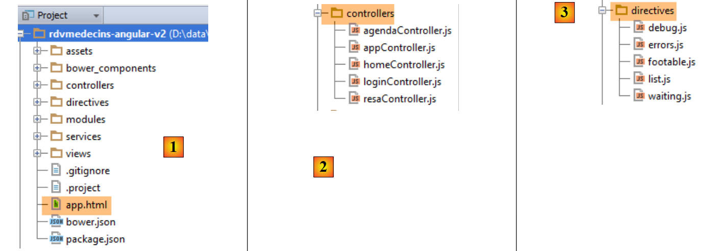 |
 |
- in [1] das gesamte Projekt. [app.html] ist die Master-Seite der Anwendung;
- in [2] die Controller;
- in [3] die Direktiven;
- in [4] die Dienste und das Angular-Modul [main.js] der Anwendung;
- in [5] die verschiedenen Ansichten, die in die Master-Seite [app.html] eingefügt werden;
3.8.2. Projektabhängigkeiten
Die Projektabhängigkeiten lauten wie folgt:
 |
Die Rolle dieser verschiedenen Elemente wurde in Abschnitt 3.4, Seite 134, erläutert.
3.8.3. Die Master-Seite [app.html]
Die Master-Seite sieht wie folgt aus:
<!DOCTYPE html>
<html ng-app="rdvmedecins">
<head>
<title>RdvMedecins</title>
<!-- META -->
<meta http-equiv="Content-Type" content="text/html; charset=utf-8">
<meta name="viewport" content="width=device-width, initial-scale=1.0">
<meta name="description" content="Angular client for RdvMedecins">
<meta name="author" content="Serge Tahé">
<!-- on CSS -->
<link rel="stylesheet" href="bower_components/bootstrap/dist/css/bootstrap.min.css"/>
<link href="bower_components/bootstrap/dist/css/bootstrap-theme.min.css" rel="stylesheet"/>
<link href="bower_components/bootstrap-select/bootstrap-select.min.css" rel="stylesheet"/>
<link href="assets/css/rdvmedecins.css" rel="stylesheet"/>
<link href="assets/css/footable.core.min.css" rel="stylesheet"/>
</head>
<!-- controller [appCtrl], model [app] -->
<body ng-controller="appCtrl">
<div class="container">
...
</div>
<!-- Bootstrap core JavaScript ================================================== -->
<script type="text/javascript" src="bower_components/jquery/dist/jquery.min.js"></script>
<script type="text/javascript" src="bower_components/bootstrap/dist/js/bootstrap.min.js"></script>
<script type="text/javascript" src="bower_components/bootstrap-select/bootstrap-select.min.js"></script>
<script src="bower_components/footable/js/footable.js" type="text/javascript"></script>
<!-- angular js -->
<script type="text/javascript" src="bower_components/angular/angular.min.js"></script>
<script type="text/javascript" src="bower_components/angular-ui-bootstrap-bower/ui-bootstrap-tpls.min.js"></script>
<script type="text/javascript" src="bower_components/angular-route/angular-route.min.js"></script>
<script type="text/javascript" src="bower_components/angular-translate/angular-translate.min.js"></script>
<script type="text/javascript" src="bower_components/angular-base64/angular-base64.min.js"></script>
<!-- modules -->
<script type="text/javascript" src="modules/main.js"></script>
<!-- services -->
<script type="text/javascript" src="services/config.js"></script>
<script type="text/javascript" src="services/dao.js"></script>
<script type="text/javascript" src="services/utils.js"></script>
<!-- guidelines -->
<script type="text/javascript" src="directives/waiting.js"></script>
<script type="text/javascript" src="directives/errors.js"></script>
<script type="text/javascript" src="directives/footable.js"></script>
<script type="text/javascript" src="directives/debug.js"></script>
<script type="text/javascript" src="directives/list.js"></script>
<!-- controllers -->
<script type="text/javascript" src="controllers/appController.js"></script>
<script type="text/javascript" src="controllers/loginController.js"></script>
<script type="text/javascript" src="controllers/homeController.js"></script>
<script type="text/javascript" src="controllers/agendaController.js"></script>
<script type="text/javascript" src="controllers/resaController.js"></script>
</body>
</html>
- Zeile 18: Beachten Sie, dass [appCtrl] der Master-Page-Controller ist;
- Zeilen 19–21: der Inhalt der Masterseite;
Dieser Inhalt lautet wie folgt:
<div class="container">
<!-- navigation bars -->
<ng-include src="'views/navbar-start.html'" ng-show="app.navbarstart.show"></ng-include>
<ng-include src="'views/navbar-run.html'" ng-show="app.navbarrun.show"></ng-include>
<!-- the jumbotron -->
<ng-include src="'views/jumbotron.html'"></ng-include>
<!-- page title -->
<div class="alert alert-info" ng-show="app.titre.show" translate="{{app.titre.text}}"
translate-values="{{app.titre.model}}"></div>
<!-- page errors -->
<errors model="app.errors" ng-show="app.errors.show"></errors>
<!-- the waiting message -->
<waiting model="app.waiting" ng-show="app.waiting.show"></waiting>
<!-- the current view -->
<ng-view></ng-view>
<!-- debug -->
<debug model="app" ng-show="app.debug.on"></debug>
</div>
Unabhängig davon, welche Ansicht angezeigt wird, enthält sie immer die folgenden Elemente:
- Zeilen 3–4: eine Befehlsleiste. Die beiden Leisten in den Zeilen 3 und 4 schließen sich gegenseitig aus;


- Zeile 6: ein Anwendungslogo/Text:

- Zeile 8: ein Titel
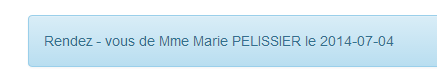
- Zeile 11: eine Fehlermeldung:
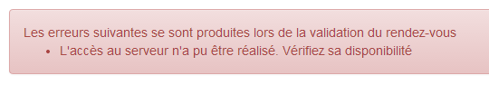
- Zeile 13: eine Lademeldung:

- Zeile 17: Debug-Informationen:

Alle oben genannten Elemente werden durch eine [ng-show / ng-hide]-Direktive gesteuert, was bedeutet, dass sie, selbst wenn sie vorhanden sind, nicht unbedingt sichtbar sind.
3.8.4. Die Anwendungsansichten
Im Code der Master-Seite haben wir:
<div class="container">
...
<!-- the current view -->
<ng-view></ng-view>
...
</div>
Zeile 4 empfängt die verschiedenen Ansichten der Anwendung. Diese sind im Modul [main.js] definiert:

Die Rolle der Konfiguration der verschiedenen Routen wurde in Abschnitt 3.7.15.4, Seite 242, erläutert.
Die Ansicht [login.html] ist leer, was bedeutet, dass sie keine Elemente zu denen hinzufügt, die bereits auf der Master-Seite vorhanden sind.
Die Ansicht [home.html] fügt der Master-Seite das folgende Element hinzu:

Die Ansicht [agenda.html] fügt der Master-Seite das folgende Element hinzu:

Die Ansicht [resa.html] fügt der Master-Seite das folgende Element hinzu:

3.8.5. Anwendungsfunktionen
Die Angular-Client-Ansichten wurden bereits in Abschnitt 1.3.3 auf Seite 7 vorgestellt. Um dieses neue Kapitel übersichtlicher zu gestalten, wiederholen wir sie hier. Die erste Ansicht lautet wie folgt:
 |
- [6], die Anmeldeseite der Anwendung. Es handelt sich um eine Terminplanungsanwendung für Ärzte;
- in [7] ein Kontrollkästchen, mit dem der Benutzer den [Debug]-Modus aktivieren oder deaktivieren kann. Dieser Modus ist durch das Vorhandensein des [8]-Fensters gekennzeichnet, das das Modell der aktuellen Ansicht anzeigt;
- in [9] eine künstliche Wartezeit in Millisekunden. Der Standardwert ist 0 (keine Wartezeit). Wenn N der Wert dieser Wartezeit ist, wird jede Benutzeraktion nach einer Wartezeit von N Millisekunden ausgeführt. So können Sie das von der Anwendung implementierte Wartemanagement beobachten;
- in [10] die Spring 4-Server-URL. Basierend auf dem Vorhergehenden lautet diese [http://localhost:8080];
- in [11] und [12], der Benutzername und das Passwort des Benutzers, der die Anwendung nutzen möchte. Es gibt zwei Benutzer: admin/admin (Login/Passwort) mit der Rolle (ADMIN) und user/user mit der Rolle (USER). Nur die Rolle ADMIN hat die Berechtigung, die Anwendung zu nutzen. Die Rolle USER ist ausschließlich dazu gedacht, die Reaktion des Servers in diesem Anwendungsfall zu demonstrieren;
- in [13] die Schaltfläche, über die Sie eine Verbindung zum Server herstellen können;
- in [14] die Sprache der Anwendung. Es gibt zwei: Französisch (Standard) und Englisch.
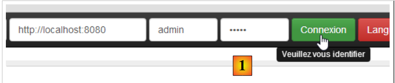 |
- unter [1] melden Sie sich an;
 |
- Sobald Sie angemeldet sind, können Sie den Arzt auswählen, bei dem Sie einen Termin vereinbaren möchten [2], sowie das Datum des Termins [3];
- Unter [4] fordern Sie die Anzeige des Terminkalenders des ausgewählten Arztes für den gewählten Tag an;
 |
- Sobald der Terminkalender des Arztes angezeigt wird, können Sie einen Termin buchen [5];
 |
- Wählen Sie unter [6] den Patienten für den Termin aus und bestätigen Sie Ihre Auswahl unter [7];
 |
Sobald der Termin bestätigt ist, gelangen Sie automatisch zurück zum Terminkalender, wo der neue Termin nun aufgeführt ist. Dieser Termin kann später gelöscht werden [7].
Die wichtigsten Funktionen wurden beschrieben. Sie sind einfach. Die nicht beschriebenen Funktionen sind Navigationsfunktionen zum Zurückkehren zu einer vorherigen Ansicht. Schließen wir mit den Spracheinstellungen ab:
 |
- In [1] wechselt die Sprache von Französisch zu Englisch;
 |
- in [2] wechselt die Ansicht zu Englisch, einschließlich des Kalenders;
3.8.6. Das Modul [main.js]
Das Modul [main.js] definiert das Angular-Modul, das die Anwendung steuert:
 |
- Zeile 4: Das Modul heißt [rdvmedecins];
- Zeile 5: Das Modul [ngRoute] wird für das URL-Routing verwendet;
- Zeile 6: Das Modul [translate] wird für die Internationalisierung von Text verwendet;
- Zeile 7: Das Modul [base64] wird verwendet, um die Zeichenfolge „login:password“ in Base64 zu kodieren;
- Zeile 8: Das Modul [ngLocale] wird verwendet, um den Kalender zu internationalisieren;
- Zeile 9: Das Modul [ui.bootstrap] wird für den Kalender verwendet;
- Zeile 12: Routenkonfiguration;
- Zeile 40: Internationalisierung von Meldungen;
3.8.7. Der Master-Page-Controller
Sehen wir uns den HTML-Code für die Master-Seite [app.html] an:
<body ng-controller="appCtrl">
<div class="container">
...
Zeile 1: Der gesamte Body der Master-Seite wird vom Controller [appCtrl] gesteuert. Aufgrund seiner Position ist dies der allgemeine und zentrale Controller der Anwendung. Wie in Abschnitt 3.7.15 erläutert, wird das von diesem Controller erstellte Modell von allen Views geerbt, die in die Master-Seite eingefügt werden.
Sein Code lautet wie folgt:
angular.module("rdvmedecins")
.controller("appCtrl", ['$scope', 'config', 'utils', '$location', '$locale',
function ($scope, config, utils, $location, $locale) {
// debug
utils.debug("[app] init");
// ----------------------------------------initialisation page
// templates for # pages
$scope.app = {waitingTimeBeforeTask: config.waitingTimeBeforeTask};
$scope.login = {};
$scope.home = {};
$scope.agenda = {};
$scope.resa = {};
// current page template
var app = $scope.app;
...
// ---------------------------------- méthodes
// cancel current job
app.cancel = function () {
...
};
// disconnect
app.deconnecter = function () {
...
};
// this code must remain here as it refers to the preceding [cancel] function
app.waiting = {title: {text: config.msgWaitingInit, values: {}}, cancel: app.cancel, show: true};
}])
;
In den Zeilen 10–14 werden die fünf in der Anwendung verwendeten Modelle definiert:
app.html | appCtrl | |
login.html | loginCtrl | |
home.html | homeCtrl | |
reservation.html | resaCtrl | |
agenda.html | agendaCtrl |
Es ist wichtig zu verstehen, dass das Objekt [$scope], das das Modell des Master-Page-Controllers darstellt, von allen Views und Controllern geerbt wird. Somit hat der Controller [loginCtrl] Zugriff auf die Elemente [$scope.app, $scope.login, $scope.home, $scope.resa, $scope.agenda]. Mit anderen Worten: Ein Controller hat Zugriff auf die Scopes anderer Controller. Die vorliegende Anwendung vermeidet die Nutzung dieser Möglichkeit bewusst. So arbeitet beispielsweise der [loginCtrl]-Controller nur mit zwei Bereichen:
- seinem eigenen [$scope.login];
- und dem des übergeordneten Controllers [$scope.app];
Das Gleiche gilt für alle anderen Controller. Das Modell [$scope.app] wird als gemeinsamer Speicher zwischen den verschiedenen Controllern verwendet. Wenn ein Controller C1 Informationen an den Controller C2 weitergeben muss, wird das folgende Verfahren befolgt:
In [C1]:
In [C2]:
In beiden Fällen wird $scope vom [appCtrl]-Controller geerbt und ist daher in [C1] und [C2] identisch (es handelt sich um einen Zeiger). Das Objekt [$scope.app], das als gemeinsamer Speicher zwischen Controllern dient, wird in Kommentaren oft als „Session“ bezeichnet, in Anlehnung an die in traditionellen Webanwendungen verwendete Session, die sich auf den gemeinsamen Speicher zwischen aufeinanderfolgenden HTTP-Anfragen bezieht.
Kehren wir zum Code des [appCtrl]-Controllers zurück:
// templates for # pages
$scope.app = {waitingTimeBeforeTask: config.waitingTimeBeforeTask};
$scope.login = {};
$scope.home = {};
$scope.agenda = {};
$scope.resa = {};
// current page template
var app = $scope.app;
// [app.debug] and [utils.verbose] must always be synchronized
app.debug = utils.verbose;
app.debug.on = config.debug;
// no page title for the moment
app.titre = {show: false};
// no navigation bars
app.navbarrun = {show: false};
app.navbarstart = {show: false};
// no errors
app.errors = {show: false};
// local default
angular.copy(config.locales['fr'], $locale);
// the current view
app.view = {url: undefined, model: {}, done: false};
// the current task
app.task = app.view.model.task = {action: utils.waitForSomeTime(app.waitingTimeBeforeTask), isFinished: false};
- Zeile 8: [$scope.app] ist das Modell für die Master-Seite. Es dient auch als gemeinsamer Speicher für die verschiedenen Controller. Anstatt überall [$scope.app.field=value] zu schreiben, wird der Zeiger [$scope.app] der Variablen [app] zugewiesen, sodass wir [app.field=value] schreiben. Denken Sie einfach daran, dass [app] das Modell ist, das der Master-Seite zur Verfügung steht;
- Zeile 11: [app.debug.on] ist ein boolescher Wert, der den Debug-Modus der Anwendung steuert. Standardmäßig ist er auf true gesetzt. Sein Wert ist mit dem Kontrollkästchen [debug] in den Navigationsleisten verknüpft;
- Zeile 15: [app.navbarrun.show] steuert die Anzeige der folgenden Navigationsleiste:

- Zeile 16: [app.navbarstart.show] steuert die Anzeige der folgenden Navigationsleiste:

- Zeile 18: [app.errors] ist die Vorlage für das Fehlerbanner;
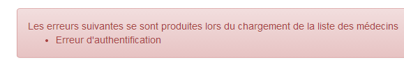
- Zeile 22: [app.view] enthält Informationen zur aktuellen Ansicht – also der Ansicht, die derzeit durch das [ng-view]-Tag auf der Master-Seite angezeigt wird. Wir werden dort die folgenden Informationen einfügen:
- [url]: die URL der aktuellen Ansicht, zum Beispiel [/agenda];
- [model]: das Modell der aktuellen Ansicht, zum Beispiel [$scope.agenda];
- [done]: Wenn „true“, gibt dies an, dass die aktuelle Ansicht ihre Arbeit beendet hat und wir zu einer anderen Ansicht wechseln;
Diese Informationen unter werden zur Steuerung der Navigation verwendet.
- Zeile 24: Startet eine asynchrone Aufgabe, eine simulierte Wartezeit. Auf die asynchrone Aufgabe wird durch zwei Zeiger verwiesen: [app.view.model.task.action] und [app.task];
Zwei Methoden wurden in den Controller [appCtrl] ausgelagert:
// cancel current job
app.cancel = function () {
...
};
// disconnect
app.deconnecter = function () {
...
};
- Zeile 2: Die Funktion [app.cancel] wird verwendet, um die aktuelle Aufgabe abzubrechen, für die gerade eine Lademeldung angezeigt wird. Da diese Meldung in allen Ansichten angezeigt wird, wird die Aufgabe hier abgebrochen;
- Zeile 7: Die Funktion [app.logout] leitet den Benutzer zurück zur Anmeldeseite. Alle Ansichten, mit Ausnahme der Ansicht [/login], bieten diese Option an;
Die Funktion [app.deconnecter] lautet wie folgt:
// disconnect
app.deconnecter = function () {
// we return to the login page
$location.path(config.urlLogin);
};
- Zeile 4: Zurück zur Anmeldeseite unter der URL [/login];
3.8.8. Asynchrone Aufgabenverwaltung
In unserer Anwendung wird zu jedem Zeitpunkt nur eine asynchrone Aufgabe ausgeführt. Es ist jedoch möglich, mehrere Aufgaben gleichzeitig auszuführen. Wenn die Anwendung beispielsweise startet, fordert sie mit zwei aufeinanderfolgenden HTTP-Anfragen zunächst die Liste der Ärzte und anschließend die Liste der Kunden vom Webdienst an. Wir könnten dasselbe auch mit zwei gleichzeitigen HTTP-Anfragen erreichen. Angular stellt die entsprechenden Werkzeuge dafür bereit. In diesem Fall haben wir uns jedoch gegen diesen Ansatz entschieden.
Die aktuell ausgeführte Aufgabe wird mit dem folgenden Code im [appCtrl]-Controller abgebrochen:
// cancel current job
app.cancel = function () {
utils.debug("[app] cancel task");
// cancel the current view's asynchronous task
var task = app.view.model.task;
task.isFinished = true;
task.action.reject();
...
};
- Zeile 5: Die Aufgabe wird aus [app.view.model.task] abgerufen. Daher stellen alle Controller sicher, dass ihre asynchronen Aufgaben von diesem Objekt referenziert werden;
- Zeile 6: um anzuzeigen, dass die Aufgabe abgeschlossen ist;
- Zeile 7: um die Aufgabe mit einem Fehler abzubrechen. Diese Notation unterscheidet sich von der in den untersuchten Angular-Beispielen verwendeten:
- In den Beispielen war das [task]-Objekt ein [$q.defer()]-Objekt, das beendet werden konnte;
- in der endgültigen Version ist das [task]-Objekt ein Objekt mit den Feldern [action, isFinished], wobei [action] das [$q.defer()]-Objekt ist, das beendet werden kann, und [isFinished] ein Boolescher Wert ist, der angibt, dass die Aktion abgeschlossen ist;
Betrachten wir den Lebenszyklus des [task]-Objekts anhand eines Beispiels. Beim Start übernimmt nach dem [appCtrl]-Controller der [loginCtrl]-Controller die Anzeige der Ansicht [views/login.html]. Sein Initialisierungscode lautet wie folgt:
// retrieve the parent model
var login = $scope.login;
var app = $scope.app;
// current view
app.view = {url: config.urlLogin, model: login, done: false};
In Zeile 5 haben wir [model=login]. Das bedeutet, dass wir, wenn wir das [login]-Objekt ändern, das [app.view.model]-Objekt ändern, d. h. [$scope.app.view.model]. Wenn wir im [loginCtrl]-Controller eine Wartezeit simulieren wollen, schreiben wir:
// simulated waiting
var task = login.task = {action: utils.waitForSomeTime(app.waitingTimeBeforeTask), isFinished: false};
Durch Hinzufügen des Feldes [task] zum Objekt [login] wird es somit dem Objekt [$scope.app.view.model] hinzugefügt. Wenn der Benutzer die Wartezeit abbricht, wird der Code in [appCtrl.cancel] ausgeführt:
// current page template
var app = $scope.app;
...
var task = app.view.model.task;
task.isFinished = true;
task.action.reject();
beendet die simulierte Wartezeit erfolgreich (Zeilen 4–6).
3.8.9. Navigationssteuerung
Die in der Anwendung verwendeten Navigationsregeln lauten wie folgt:
beliebig | ja | |
/login | ja, wenn der Controller [loginCtrl] gemeldet hat, dass er seine Arbeit beendet hat | |
/home | ja | |
/Kalender | ja | |
/home | ja, wenn der Controller [homeCtrl] gemeldet hat, dass er seine Arbeit beendet hat | |
/reset | ja | |
/Tagesordnung | ja | |
/Kalender | ja, wenn der Controller [homeCtrl] gemeldet hat, dass er seine Arbeit beendet hat | |
/reset | ja |
Dies wird mit dem folgenden Code umgesetzt:
Für [agendaCtrl]:

- Zeilen 11–20: Implementierung der Navigationsregel;
- Zeile 26: neue aktuelle Ansicht;
Für [resaCtrl]:

- Zeilen 12–20: Implementierung der Navigationsregel:
- Zeile 27: neue aktuelle Ansicht;
Für [loginCtrl]:

- Hier gibt es keine Navigationssteuerung, da die Regel besagt, dass die URL [/login] von überall aus aufgerufen werden kann. Wenn der Benutzer diese URL also in seinen Browser eingibt, funktioniert sie unabhängig von der aktuellen Ansicht;
- Zeile 16: die neue aktuelle Ansicht;
Der Code für den [homeCtrl]-Controller wurde in Abschnitt 3.8.7 bereitgestellt.
Schließlich für eine Regel wie:
/home | ja, wenn der Controller [homeCtrl] signalisiert hat, dass er seine Arbeit beendet hat |
Hier ist ein Beispiel für Code, der von der URL [/home] zur URL [/agenda] navigiert:
 |
Oben befinden wir uns in der Methode [displayCalendar] des Controllers [homeCtrl]. Der Benutzer hat den Kalender eines Arztes angefordert.
- Zeile 107: das HTTP-Task-Promise;
- Zeile 109: Die Variable [app] wurde mit [$scope.app] initialisiert. Wie wir gesehen haben, wird dieses Objekt als Vorlage für die Ansicht [app.html] verwendet. Diese Vorlage [$scope.app] dient auch dazu, Informationen zu speichern, die zwischen Ansichten ausgetauscht werden müssen;
- Zeile 111: Der von der Aufgabe zurückgegebene Fehlercode wird analysiert;
- Zeile 113: Das Ergebnis [result.data] wird im Modell [app] abgelegt;
- Zeile 116: Der Controller [homeCtrl] übergibt an den Controller [agendaCtrl]. Er signalisiert, dass er seine Arbeit mit dem Code in Zeile 115 beendet hat. Dieser Code wird vom Controller [agendaCtrl] wie folgt verwendet:
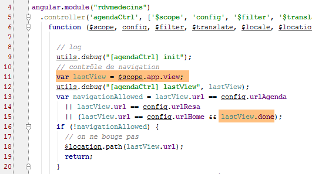
- Zeile 11: Das Objekt [$scope.app.view] wird abgerufen;
- Zeile 15: Verarbeitung des von [homeCtrl] initialisierten Feldes [$scope.app.view.done];
3.8.10. Dienste
 |
Die Dienste [config, utils, dao] sind diejenigen, die bereits in der Angular-Übersicht beschrieben wurden:
- Der [config]-Dienst wurde in Abschnitt 3.7.4 vorgestellt;
- der [utils]-Dienst wurde in Abschnitt 3.7.5 vorgestellt;
- der [dao]-Dienst wurde in Abschnitt 3.7.6 vorgestellt;
Zur Erinnerung: Hier ist die Struktur dieser Dienste:
[config]-Dienst
 |
- in [1]: Wir sehen, dass der Code etwa 250 Zeilen lang ist. Der Großteil dieses Codes befasst sich mit der Auslagerung der Schlüssel für internationalisierte Meldungen [2]. Wir vermeiden es, diese Schlüssel direkt in den Code festzuschreiben;
[utils]-Dienst
 |
- Zeile 8: Wir sind der Variable [verbose] noch nicht begegnet. Sie steuert die Funktion [debug] wie folgt:
 |
- Zeilen 22–25: Die Funktion [utils.debug] führt nichts aus, wenn [verbose.on] den Wert „false“ ergibt. Diese Variable ist an eine Variable im Controller [appCtrl] gebunden:
 |
- Zeile 21: [app.debug] übernimmt den Wert des Zeigers [utils.verbose]. Daher wird jede Änderung an [app.debug] auch an [utils.verbose] vorgenommen;
- Zeile 22: Der Anfangswert von [app.debug.on] wird aus der Konfigurationsdatei übernommen. Standardmäßig ist er auf „true“ gesetzt. Dieser Wert kann sich im Laufe der Zeit ändern. Der Benutzer kann ihn über die Navigationsleisten ändern:
 |
- Zeile 45: Über ein Kontrollkästchen (type=checkbox) können Sie den Wert von [app.debug.on] (ng-model-Attribut) ändern;
[dao]-Dienst
 |
3.8.11. Richtlinien
 |
Die Direktiven [errors, footable, list, waiting] sind bereits in der Angular-Übersicht beschrieben:
- Die Direktive [footable] wurde in Abschnitt 3.7.8.6 vorgestellt;
- die Direktive [list] wurde in Abschnitt 3.7.12 vorgestellt;
- die Direktiven [errors] und [waiting] wurden in Abschnitt 3.7.14 vorgestellt;
Auf die Direktive [debug] sind wir bisher noch nicht gestoßen. Sie lautet wie folgt:
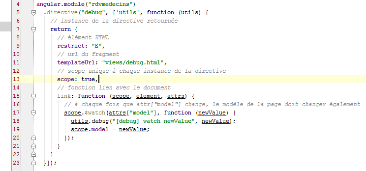 |
Die in Zeile 11 referenzierte Datei [debug.html] sieht wie folgt aus:
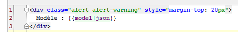 |
- Zeile 2: Die [debug]-Direktive zeigt ihre Vorlage im JSON-Format in einem Bootstrap-Banner an (Zeile 1);
Diese Direktive wird nur in der Master-Seite [app.html] verwendet:
 |
- Die [debug]-Direktive wird in Zeile 35 verwendet. Sie zeigt daher im Debug-Modus (ng-show-Attribut) die JSON-Darstellung des [$scope.app]-Modells an. Dies erzeugt eine Ausgabe wie die folgende:
 |
Dies erfordert ein gutes Verständnis des Codes, um ihn zu interpretieren, aber sobald dieses vorhanden ist, werden die oben genannten Informationen für die Fehlersuche nützlich. Hier haben wir die Elemente des angezeigten [$scope.app]-Modells hervorgehoben. Zur Erinnerung: [$scope.app] ist der gemeinsame Speicher der Controller;
- [waitingBeforeTask]: die simulierte Wartezeit vor einer HTTP-Anfrage;
- [debug]: Debug-Modus – muss zwangsläufig „true“ sein, wenn dieses Banner angezeigt wird;
- [navbarrun]: ein boolescher Wert, der die Anzeige der folgenden Navigationsleiste steuert:

- [navbarstart]: ein boolescher Wert, der die Anzeige der folgenden Navigationsleiste steuert:

- [errors]: Vorlage für die [errors]-Direktive;
- [view]: fasst Informationen über die aktuell angezeigte Ansicht zusammen;
- [waiting]: Vorlage für die [waiting]-Direktive;
- [serverUrl, username, password]: Anmeldedaten für den Webdienst;
- [doctors]: Modell für die auf Ärzte angewendete [list]-Direktive;
- [clients]: wie oben für Kunden;
- [menu]: steuert die angezeigten Menüoptionen. Diese sind in [navbar-run.html] definiert:

Die Menüoptionen befinden sich in den Zeilen 16, 23, 29 und 36.
- [formattedDay]: der im Kalender ausgewählte Tag im Format „JJJJ-MM-TT“;
- [agenda]: der Terminkalender des Arztes. Er enthält freie Termine (rv==null) und gebuchte Termine. Bei letzteren enthält er den Namen des Kunden, der die Buchung vorgenommen hat;
- [selectedCreneau]: der für die Reservierung ausgewählte Zeitfenster;
3.8.12. Der [loginCtrl]-Controller
 |
Der Controller [loginCtrl] ist mit der Ansicht [views/login.html] verknüpft, die in Kombination mit der Master-Seite die folgende Seite ergibt:
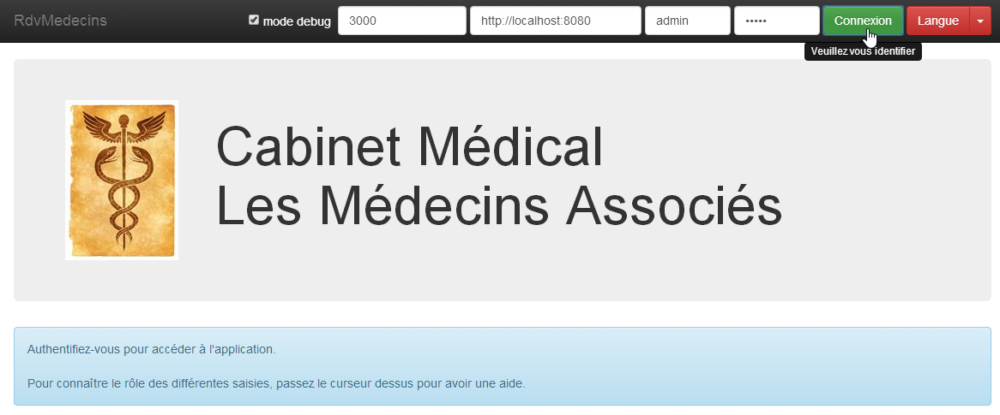
Der [loginCtrl]-Controller sieht wie folgt aus:

- Zeile 13: [login] ist das Modell für die aktuelle Ansicht;
- Zeile 14: [app] ist der gemeinsame Speicher zwischen den Controllern;
- Zeile 16: [app.view] wird mit Informationen aus der aktuellen Ansicht gefüllt;
Dieser Initialisierungscode ist in jedem Controller zu finden. Für den Controller C1 einer Ansicht V1 mit dem Modell M1 haben wir den folgenden Initialisierungscode:
- Zeile 18: Sie erinnern sich vielleicht, dass [appCtrl] eine simulierte Wartezeit gestartet hat, auf die das Objekt [app.task.action] verweist. Wir nutzen das [Promise] dieser Aufgabe, um auf deren Abschluss zu warten;
- Zeile 39: Die Methode [login.setLang] übernimmt den Sprachwechsel;
- Zeile 47: Die Methode [login.authenticate] übernimmt die Benutzerauthentifizierung;
Sehen wir uns die wichtigsten Schritte der Authentifizierungsmethode an:

- Zeilen 50–51: [app.waiting] ist das Modell für den Ladebanner;
- Zeile 53: [app.errors] ist das Modell für das Fehlerbanner;
- Zeile 55: Eine simulierte Wartezeit wird initiiert. Das Objekt [action, isFinished] wird von [login.task] referenziert und somit, da [app.view.model=login] gilt, auch von [app.view.model.task]. Erinnern Sie sich daran, dass dies die Bedingung für die Abbruch der Aufgabe ist;
- Zeile 57: Nach Ablauf der simulierten Wartezeit werden die Ärzte geladen;
- Zeile 62: Sobald die Ärzte abgerufen wurden, wird ihre Anfrage analysiert. Wenn die Ärzte gefunden wurden, werden die Klienten angefordert;
- Zeile 83: Die Antwort wird analysiert und die endgültige Ansicht angezeigt. Dies geschieht mit dem folgenden Code:

- Zeile 87: Der Boolesche Wert [task.isFinished] wird in den folgenden Fällen auf „true“ gesetzt:
- Der Benutzer hat die Wartezeit abgebrochen;
- die Anfrage der Ärzte endete mit einem Fehler;
- Zeilen 91–98: der Fall, in dem wir die Kunden haben;
- Zeile 93: [app.clients] ist das Modell für die [list]-Direktive, die die Kunden in einer Dropdown-Liste anzeigt;
- Zeilen 97–98: Wir bereiten den Wechsel der Ansicht vor (Zeile 98), zeigen aber zunächst an, dass der Controller seine Arbeit beendet hat (Zeile 97). Zur Erinnerung: [$scope.app.view.done] wird für die Navigationssteuerung verwendet;
Wichtig ist hier, dass die Ärzte und Kunden im Browser zwischengespeichert wurden. Sie werden nicht mehr vom Webservice angefordert.
3.8.13. Der [homeCtrl]-Controller
 |
Der [homeCtrl]-Controller ist mit der Ansicht [views/home.html] verknüpft, die in Kombination mit der Master-Seite die folgende Seite erzeugt:

Der [homeCtrl]-Controller ist wie folgt aufgebaut:

- Zeilen 12–20: Dies ist die Navigationssteuerung. Alle Controller verfügen darüber, mit Ausnahme von [loginCtrl], da die Seite [/login.html] ohne Einschränkungen zugänglich ist;

- Zeilen 25–28: Hier finden wir Zeilen, die denen im [loginCtrl]-Controller ähneln. [home] ist somit die dem Controller zugeordnete View-Vorlage;
- Zeile 33: Ein Attribut, das wir bisher noch nicht gesehen haben. Dies ist das Modell für die Kopfzeile der Ansicht:
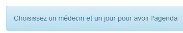
- Zeile 36: [home.datepicker] ist das Modell für den Kalender;
- Zeile 38: [app.menu] ist das Modell für das Menü der Navigationsleiste. Hier wird die Option [Schedule] vorhanden sein. Damit können Sie den Terminplan eines Arztes abfragen;
Schließlich verfügt der Controller über zwei Methoden:

Die Anzeige des Terminkalenders (Zeile 51) wurde in Abschnitt 3.7.8 behandelt.
3.8.14. Der [agendaCtrl]-Controller
 |
Der [agendaCtrl]-Controller ist mit der Ansicht [views/agenda.html] verknüpft, die in Kombination mit der Master-Seite die folgende Seite erzeugt:

Der [agendaCtrl]-Controller ist wie folgt aufgebaut:

- Die Zeilen 10–20 regeln die Navigationssteuerung;
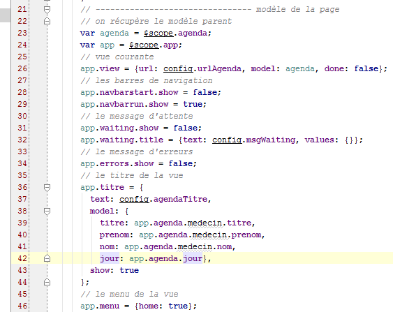
- Zeilen 23–26: [agenda] ist die Ansichtsvorlage, die dem Controller [agendaCtrl] zugeordnet ist;
- Zeilen 36–44: [app.title] ist die Vorlage für die folgende Titelleiste:
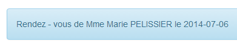
- Zeile 46: Das Menü enthält die Option [Home]:

Die Methoden des Controllers lauten wie folgt:

- Zeile 95: Die Methode [agenda.delete] wurde in Abschnitt 3.7.9 behandelt;
Die Methode [agenda.home] ist eine reine Navigationsmethode:

Die Methode [agenda.reserve] lautet wie folgt:

- Zeile 73: Der Parameter der Funktion [reserve] ist die Slot-Nummer (id);
- Zeilen 77–86: Ziel ist es, den Zeitabschnitt mit dieser Kennung zu finden;
- Zeile 82: Der gefundene Zeit-Slot wird im gemeinsamen Speicher [app] abgelegt. Der Controller [resaCtrl], der die Kontrolle übernimmt (Zeile 90), verwendet diese Information, um seine Titelleiste anzuzeigen;
- Zeilen 89–90: Navigation zu [/resa.html];
3.8.15. Der Controller [resaCtrl]
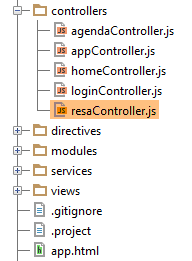 |
Der Controller [resaCtrl] ist mit der Ansicht [views/resa.html] verknüpft, die in Kombination mit der Master-Seite die folgende Seite erzeugt:
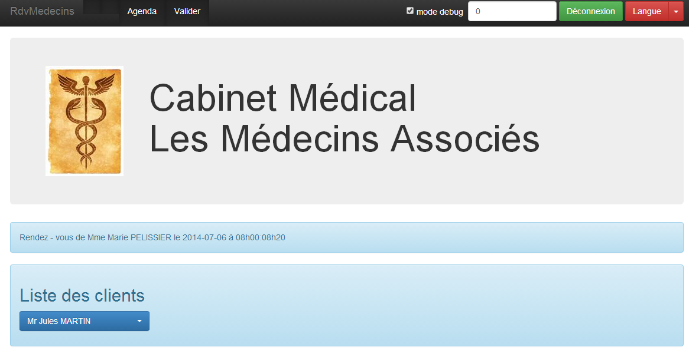
Der Controller [resaCtrl] ist wie folgt aufgebaut:

- Zeilen 12–20: Navigationssteuerung;
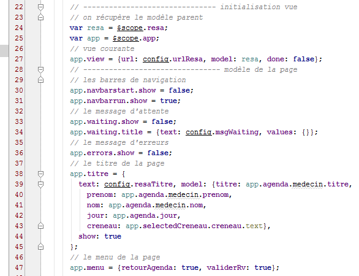
- Zeilen 24–27: [resa] dient als Vorlage für die aktuelle Ansicht;
- Zeilen 38–45: [app.titre] ist die Vorlage für die folgende Titelleiste:

- Zeile 47: Es werden zwei Menüoptionen angezeigt:

Die Methoden des Controllers lauten wie folgt:

Die Methode [resa.valider] wurde in Abschnitt 3.7.9 behandelt.
3.8.16. Sprachverwaltung
Alle Controller stellen die folgende [setLang]-Methode bereit:

Sie hätte in den [appCtrl]-Controller integriert werden können.